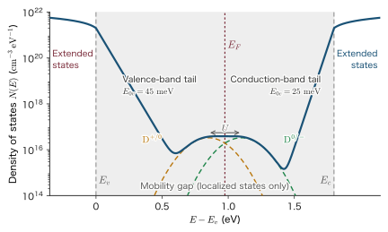
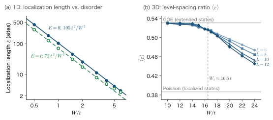
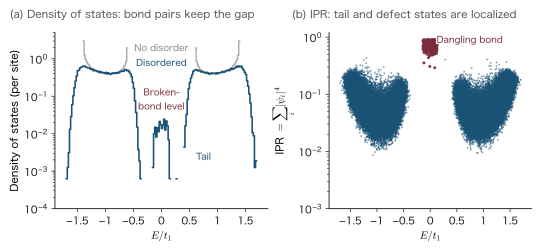
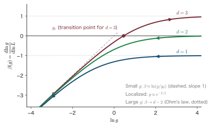
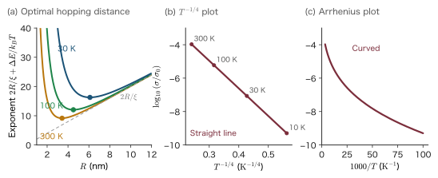
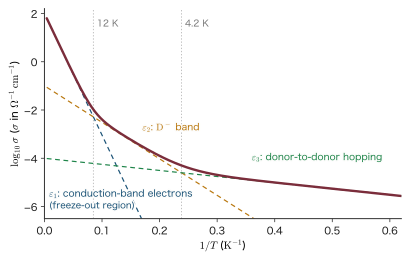

Chapter 36Physics of Random Systems — Amorphous Semiconductors, Anderson Localization, and the Mott Transition
A window pane is a transparent, hard solid, yet its atoms are not arranged in a regular pattern like those of a crystal. Such amorphous solids are common in everyday life. And, surprisingly, even a semiconductor whose atoms are arranged in a disordered manner can be used to make transistors and solar cells. Thin films of hydrogenated amorphous silicon (a-Si:H) have been used in the solar cells of pocket calculators and in the thin-film transistors (TFTs) that drive the pixels of a liquid-crystal television one by one. Up to this point this book has assumed that “crystal = periodicity.” The reciprocal lattice (Chapter 3), Bloch's theorem (Chapter 16), and the wavenumber $\kk$ all have meaning only because of periodicity. What happens to electrons, then, when the periodicity is gone? This is the question of this chapter.
To state the answer first, when periodicity is lost, some things remain and some things change. What remains is the bonding between atoms (the number of neighboring atoms, the bond lengths and angles), and this keeps a gap open through the energy difference between bonding and antibonding states. This is why amorphous Si is also a semiconductor. What changes is the band edge. The edge becomes blurred and draws a tail into the gap, and the electrons in the tail are confined to a small region by the disorder. This is Anderson localization (Anderson, 1958); its cause is not that a particle falls into a hole, but the interference of waves scattered by the disorder. The boundary between the confined states and the extended states is called the mobility edge.
This chapter rests on three pillars. The first is Anderson localization, in which disorder confines electrons. The second is hopping conduction, in which a confined electron receives thermal energy from a phonon and hops to a neighboring site; at low temperatures the conductivity follows the distinctive law $\ln\sigma\propto-T^{-1/4}$ (Mott's variable-range hopping). The third is the Mott transition, in which a crystalline semiconductor, as impurities are added in increasing amounts, turns from an insulator into a metal at a certain concentration; the critical concentration is fixed by the remarkably simple formula $n_c^{1/3}a_H\approx0.25$. Along the way we treat the phenomena that appear when a strong electric field is applied (the Poole–Frenkel effect, space-charge-limited current, and the switching of phase-change memory) and impurity conduction, in which electrons hop between impurities.
Let us confirm the connections with other chapters. In Part IV (Chapters 21–26) we saw how electrons in a crystal respond to electric fields and light. This chapter removes the very regularity of the crystal that was the premise of those chapters. In Chapter 17 we treated the donor as a recycled hydrogen atom, and we described the freezing of carriers onto donors at low temperatures (Section 17.7) and the rough criterion that a Mott transition occurs when the donor concentration is raised (Example 17.10). This chapter writes out the continuation of that story in full. We also use the screening and the Boltzmann equation approach of Chapter 21 (the premise that an electron travels many wavelengths from one collision to the next; in Section 36.2.6 this is written as $k_F\ell\gg1$ using the Fermi wavenumber $k_F$ and the mean free path $\ell$), the avalanche multiplication of Chapter 23, the image force on the Schottky barrier in Chapter 24, and the absorption edge of Chapter 33. The Anderson model and the Mott criterion are actually solved by numerical calculation and plotted, so that we can check the predictions of the formulas with our own eyes. In Chapter 35 we dealt with one-dimensional electron systems; as we will see in this chapter, in one dimension all states are localized no matter how weak the disorder.
- The difference between long-range order and short-range order, the continuous random network (CRN), and the formula that gives the radial distribution function from the diffraction intensity (the Debye formula)
- The difference between a-Si and a-Si:H (hydrogen terminates the dangling bonds), the Urbach tail and the Tauc plot, the mobility gap, and the density-of-states models (CFO and Davis–Mott)
- The 8−N rule and negative $U$ in chalcogenide glasses, the Staebler–Wronski effect, and applications of amorphous semiconductors
- The Anderson model and the localization criterion $W/B\gtrsim1$, the localization length and the inverse participation ratio, and numerical experiments in one and three dimensions
- The Ioffe–Regel condition $k_F\ell\sim1$, Mott's argument for the minimum metallic conductivity, and its modification by scaling theory (the $\beta$ function)
- The complete derivation of variable-range hopping $\sigma=\sigma_0\exp[-(T_0/T)^{1/4}]$, its generalization to $d$ dimensions, and the Efros–Shklovskii $T^{-1/2}$ law
- Why the coefficients of the Poole–Frenkel effect and the Schottky effect differ by a factor of two, space-charge-limited current (the Mott–Gurney law), threshold switching, and phase-change memory
- The three activation energies $\varepsilon_1,\varepsilon_2,\varepsilon_3$ of impurity conduction and their exponential dependence on donor concentration
- The derivation of the Mott criterion $n_c^{1/3}a_H\approx0.25$ and its verification in real semiconductors, the Hubbard model picture, and degenerate semiconductors and the Burstein–Moss shift
36.1 Introduction to Amorphous Semiconductors
Notation: Symbols used in this chapter
This chapter covers a wide range of topics and uses many symbols, so we list them here. You may skip this list on a first reading and come back to it when you are unsure about a symbol. Each symbol is also explained where it is first used.
- Energy and permittivity. Energies are written $E$ (the binding energy $\epsilon_d$ of the donor in Chapter 17 is written $E_d$ in this part). $\epsilon_0$ is the permittivity of vacuum, $\epsilon_s$ is the static relative permittivity, $\epsilon_\infty$ is the optical (high-frequency) relative permittivity, and $\epsilon_2(\omega)$ (Section 36.1.5) is the imaginary part of the dielectric function. In a different typeface, the site energy of the Anderson model is written $\varepsilon_i$ ($\varepsilon_a,\varepsilon_b$ for a two-site problem), and the three activation energies of impurity conduction are written $\varepsilon_1,\varepsilon_2,\varepsilon_3$ (Section 36.5; these are unrelated to the $\epsilon_2$ of the dielectric function).
- Length. The localization length is $\xi$ (xi). In Section 36.2.8 we also use $\xi$ for the correlation length, which is determined by the distance from the transition point (on the insulating side it coincides with the localization length). The mean free path is $\ell$, the spacing of atoms (sites) is $a$, the effective Bohr radius is $a_H$ (the same quantity as $a_d$ in Chapter 17 and $a_B^*$ in Chapter 22; how its value is chosen for Si:P is discussed after Example 36.20), and the size of the sample is $L$.
- The Anderson model and the Hubbard model. The disorder width is written $W$ (not the depletion-layer width $W$ of Chapter 24 and elsewhere), the hopping integral $t$, and the bandwidth $B=2zt$ ($z$ is the number of neighboring sites). In the discussion of the Hubbard model, too, $B$ is used for the bandwidth. The only exceptions are Section 36.2.9, where $B$ is the magnetic flux density, and Section 36.1.9, where $t$ is the time.
- $U$. This is used only for the Coulomb repulsion energy when two electrons occupy the same site ($U$ and $U_{\mathrm{eff}}$ in Section 36.1.8, the Hubbard $U$ in Section 36.6.4). The potential energy of an electron in Section 36.4.1 is written $E_p(x)$.
- $\alpha$, $\sigma$, $\mu$. $\alpha$ is the absorption coefficient in Section 36.1 (also the prefactor $\alpha_0$ of the Urbach rule) and the impact-ionization coefficient $\alpha_h$ in Section 36.4.5. $\sigma$ is the conductivity, except that the subscript $\sigma$ in the Hubbard-model equations of Section 36.6.4 denotes the spin direction (↑ or ↓). $\mu$ is used only for the mobility, and the Fermi level (chemical potential) is written $E_F$.
- Angle. $\theta$ is an angle in Section 36.1 (the polar angle in the derivation of Section 36.1.2, the bond angle in Example 36.1), and in Section 36.4.3 it is the trap factor $\theta=n/(n+n_t)$. $\phi$ is the azimuthal angle in the derivation of Section 36.1.2, the dihedral angle in Example 36.1, and in Section 36.4 the trap depth or barrier height (an energy).
- Others. $\nu$ is a critical exponent (Sections 36.2.8 and 36.6.7), not a frequency (the attempt frequency of hopping is written $\nu_0$). $J$ is the radial distribution function $J(r)$ in Section 36.1.2 and the current density in Section 36.4; the number of pairs of states in Section 36.1.5 is written $J_{cv}$. $J'$ and $K'$ in Section 36.6.4 are the integrals of the hydrogen molecular ion (the same symbols as in Chapter 39 of “Quantum Mechanics”) and are distinct from the degree of compensation $K$ (Section 36.5). $G$ is the generation rate of electron–hole pairs by light in Section 36.1.9 and the conductance in Section 36.2.8. $\Omega$ is the volume of the sample in Section 36.2.7. $S$ is the structure factor $S(q)$ in Section 36.1.2, the thermoelectric power in Section 36.3.7, and the overlap integral in Section 36.6.4. $V$ is the voltage (electric potential) in Sections 36.4 and 36.5.3 and the screened potential energy $V(r)$ in Section 36.6.2. $E_0$ is the reference energy of the Urbach rule in Section 36.1.4 and the energy of a defect with zero electrons (the $n=0$ case of $E_n$) in Section 36.1.8.
36.1.1 Solids that are not crystals — long-range order and short-range order
When a molten substance is cooled slowly, the atoms take time to settle into the arrangement of lowest energy, namely a crystal. If it is cooled rapidly, however, the atoms become immobile before they have finished arranging themselves, and solidify in the disordered arrangement of the liquid. This is a glass (the TTT curve in Chapter 7, Section 7.10 (in Japanese) of “Introduction to Inorganic Materials Science”). The same thing happens in semiconductors. When Si is deposited on a substrate by evaporation or sputtering, the arriving atoms are fixed where they land, and a film of amorphous silicon (a-Si) is formed.
The difference between a crystal and an amorphous solid is clearly visible in X-ray diffraction. As we derived in Chapter 3, in a crystal sharp diffraction spots appear only when the scattering vector coincides with a reciprocal lattice vector (the Laue condition, Section 3.4). In an amorphous sample, instead of spots only a few diffuse, broad rings (a halo pattern) appear. Because there is no periodicity, the Laue condition itself does not hold. Yet the rings are not entirely absent, because definite values remain for the short distances between atoms.
Definition: Long-range order, short-range order, and amorphous solids
The repetition of the atomic arrangement out to infinite distance according to the period of a lattice is called long-range order. In contrast, the near constancy, seen from a single atom, of the number of nearest-neighbor atoms (the coordination number $Z$), the bond length, and the bond angle is called short-range order. An amorphous solid is a solid that has short-range order but no long-range order.
The standard picture of the atomic arrangement of an amorphous solid is the continuous random network (CRN) proposed by Zachariasen (1932) for oxide glasses. In $\mathrm{SiO_2}$ glass, $\mathrm{SiO_4}$ tetrahedra centered on Si are connected by sharing the O atoms at their vertices. The bonding rules are the same as in the crystal: every O is bonded to two Si and every Si is bonded to four O. But the angles at which the tetrahedra join scatter, so the size of the rings of the network differs from place to place and the periodicity is lost.
In a-Si and a-Ge, the network is a tetrahedral CRN in which every atom has four bonds. Polk (1971) assembled by hand a model of several hundred atoms from balls and sticks, and showed that a network in which every atom is fourfold coordinated, the bond length is nearly constant, and the bond angle scatters by about $\pm10^\circ$ around the tetrahedral angle $109.5^\circ$ can fill space without gaps. The network of crystalline Si consists only of six-membered rings, whereas the CRN contains five-membered and seven-membered rings as well. Later, the method of building a network on a computer by rewiring bonds (Wooten–Winer–Weaire, 1985) became standard. In this calculation, a rewiring of bonds is chosen at random and tried; if the energy of the network decreases it is accepted, and if it increases it is also accepted from time to time (more often at higher temperature), while the temperature is lowered slowly to bring the network into order. A calculation of this kind that uses random numbers is called the Monte Carlo method, and cooling slowly to bring about order is called annealing. Figure 36.1 is a CRN actually constructed by applying the same method to a two-dimensional threefold-coordinated network.
![(a) A two-dimensional crystalline network (honeycomb lattice). (b) A continuous random network made from the same number of atoms by rewiring bonds; five-membered rings (amber), seven-membered rings (green), and eight-membered rings (red) are mixed in with the six-membered rings. (c) The pair distribution function g(r). The crystal (gray) has a series of sharp peaks, whereas the CRN (maroon) keeps the first- and second-neighbor peaks but loses the third-neighbor peak (r=2), becoming a gentle oscillation around the mean value 1.](figs/ch36_fig36-1.svg)
Physical meaning: Why a gap opens even without periodicity
In Chapter 16 we explained the gap by Bragg reflection (the periodic potential). It would then seem that an amorphous solid, which has no periodicity, has no gap. There is, however, another way of looking at the gap of Si. The $sp^3$ hybrid orbitals of a Si atom form bonding orbitals and antibonding orbitals with the hybrid orbitals of neighboring atoms; the former are the origin of the valence band and the latter of the conduction band. The bonding–antibonding splitting is determined by the properties of each individual bond, so if the bond length and angle (the short-range order) are preserved, the gap is preserved as well. In 1971, Weaire and Thorpe showed with a simple tight-binding model that a network with tetrahedral coordination has a gap regardless of how the atoms are connected. What changes when periodicity is lost is that the band edges become blurred and develop tails. These tails are the protagonists of this chapter.
36.1.2 Radial distribution function — what can be read from a halo pattern
From the diffraction intensity of an amorphous solid, one can extract the distribution of interatomic distances. Let us derive the formulas for this.
Derivation: Debye's scattering formula and the radial distribution function
Step 1: Scattered intensity. As in Chapter 3 (Section 3.4), let the wave vector of the incident wave be $\kk$, that of the scattered wave $\kk'$, and the scattering vector $\qq=\kk'-\kk$. The sum of the amplitudes of the waves scattered from the atoms at positions $\rr_j$ (atomic scattering factor $f$) is then proportional to $A(\qq)=f\sum_j\ee^{-i\qq\cdot\rr_j}$. The intensity is the square of its absolute value, so
$$ I(\qq)\propto\abs{A}^2=f^2\sum_j\sum_k \ee^{-i\qq\cdot(\rr_j-\rr_k)} $$We split the double sum into the terms with $j=k$ ($N$ of them, each equal to $\ee^0=1$) and the terms with $j\ne k$. Writing $\rr_{jk}\equiv\rr_j-\rr_k$, we have
$$ \frac{I(\qq)}{Nf^2}=1+\frac{1}{N}\sum_j\sum_{k\ne j}\ee^{-i\qq\cdot\rr_{jk}} $$Step 2: Average over directions. An amorphous solid has no special direction, so we may average over the direction of $\rr_{jk}$. Take $\qq$ along the $z$ axis and let $\theta$ be the angle between $\rr_{jk}$ and the $z$ axis; then $\qq\cdot\rr_{jk}=qr\cos\theta$ ($r=\abs{\rr_{jk}}$). Averaging over the solid angle, with $u=\cos\theta$ ($\sin\theta\,\dd\theta=-\dd u$), gives
$$ \left\langle\ee^{-iqr\cos\theta}\right\rangle=\frac{1}{4\pi}\int_0^{2\pi}\!\!\dd\phi\int_0^\pi\ee^{-iqr\cos\theta}\sin\theta\,\dd\theta =\frac12\int_{-1}^{1}\ee^{-iqru}\,\dd u =\frac12\cdot\frac{\ee^{-iqr}-\ee^{iqr}}{-iqr} =\frac{\sin qr}{qr} $$(In the last step we used $\ee^{iqr}-\ee^{-iqr}=2i\sin qr$.) Therefore
This is called Debye's scattering formula (1915). $S(q)$ is called the structure factor.
Step 3: Rewriting the sum in terms of the distribution of distances. Let the average number of atoms between distances $r$ and $r+\dd r$ from a given atom (in a spherical shell of thickness $\dd r$) be $J(r)\,\dd r$, and define the radial distribution function (RDF) by $J(r)\equiv4\pi r^2\rho(r)$. Here $\rho(r)$ is the average atomic density at that distance, which approaches the mean density $\rho_0$ far away. The sum $\sum_{k\ne j}$ runs over "all partners as seen from atom $j$", and $\frac1N\sum_j$ averages this over all atoms, so
$$ \frac1N\sum_j\sum_{k\ne j}F(r_{jk})=\int_0^\infty F(r)\,J(r)\,\dd r \qquad\Longrightarrow\qquad S(q)=1+\int_0^\infty4\pi r^2\rho(r)\,\frac{\sin qr}{qr}\,\dd r $$Step 4: Removing the mean-density part. We split $\rho(r)=\rho_0+[\rho(r)-\rho_0]$. The $\rho_0$ part is the scattering from a uniform continuum; if $L$ is the size of the whole sample, it gives intensity only at $q\lesssim1/L$, in the extreme forward direction (a direction that cannot be distinguished from the transmitted beam). Hence for $q\ne0$,
$$ S(q)-1=\int_0^\infty4\pi r^2[\rho(r)-\rho_0]\frac{\sin qr}{qr}\,\dd r $$Multiplying both sides by $q$ gives
$$ q\,[S(q)-1]=\int_0^\infty4\pi r\,[\rho(r)-\rho_0]\sin qr\,\dd r $$Step 5: Inverting the Fourier sine transform. If $F(q)=\int_0^\infty h(r)\sin qr\,\dd r$, then $h(r)=\frac{2}{\pi}\int_0^\infty F(q)\sin qr\,\dd q$ (the inversion formula of the Fourier sine transform; Appendix A.1, “University Mathematics” Chapter 30, Section 30.1). Applying it with $h(r)=4\pi r[\rho(r)-\rho_0]$ and multiplying both sides by $r$, we obtain
∎ From the measured $S(q)$, the distribution $J(r)$ of interatomic distances can be calculated.
Physical Meaning: What the position and area of the peak tell us
The position of the first peak of $J(r)$ is the bond length, and the area $\int J(r)\,\dd r$ is the coordination number $Z$ (because it is the sum of the numbers of atoms in the spherical shell). It is related to the pair distribution function $g(r)=\rho(r)/\rho_0$ of Figure 36.1(c) by $J(r)=4\pi r^2\rho_0\,g(r)$; that is, $J(r)$ is $g(r)$ multiplied by $4\pi r^2\rho_0$. The position of the second peak is determined by the bond angle, and the third peak is determined by the dihedral angle described next. In a-Si the first peak lies at $r_1=2.35\,\text{Å}$ (the same as in the crystal) and the coordination number is $Z\approx3.8$–$3.9$, slightly short of 4 (the shortfall is affected by voids, by the deficit in density, and by the uncertainty in the normalization of the diffraction data. It amounts to a shortage of $0.1$–$0.2$ bonds per atom, that is, of bonds close to $10^{22}\,\mathrm{cm^{-3}}$, but the dangling bonds with unpaired electrons counted by ESR in Section 36.1.3 ($0.02$–$0.2\,\%$ of the atoms) are only a tiny fraction of this), and the second peak also lies at $r_2=3.84\,\text{Å}$, the same position as in the crystal. However, the third peak of crystalline Si ($4.50\,\text{Å}$, 12 atoms) disappears in a-Si. In terms of the diffraction pattern, the first maximum of the structure factor of a-Si lies at $q\approx2.0\,\text{Å}^{-1}$, which is almost the same as the position of the strongest (111) reflection of crystalline Si, $2\pi\sqrt3/a=2.00\,\text{Å}^{-1}$ ($a=5.431\,\text{Å}$). We may think that the place where the crystal had a strong reflection remains as a blurred halo.
Example 36.1: Reading the disorder in bond angles and dihedral angles from the peaks of the radial distribution function
The first peak of the radial distribution function of a-Si lies at $r_1=2.35\,\text{Å}$ and the second peak at $r_2=3.84\,\text{Å}$.
(1) Find the mean bond angle $\theta$.
(2) If the bond angle varies by $\pm10^\circ$, by what width does the second peak broaden?
(3) When atoms A–B–C–D are linked by bonds, the distance $r_3$ between A and D changes with the torsion angle (dihedral angle) $\phi$ about the bond B–C. For bond length $b$ and a bond angle equal to the tetrahedral angle ($\cos\theta=-1/3$), show that $r_3=\frac{b}{3}\sqrt{41-16\cos\phi}$ ($\phi=0$ is the configuration in which A and D lie on the same side), and explain why the third peak of crystalline Si at $4.50\,\text{Å}$ disappears in a-Si.
Solution.
(1) Two bonds of length $r_1$ emerge from one atom at an angle $\theta$. The distance between the atoms at the ends of the two bonds is the base of an isosceles triangle, so $r_2=2r_1\sin(\theta/2)$. Solving this for $\theta$ gives
$$ \theta=2\arcsin\frac{r_2}{2r_1}=2\arcsin\frac{3.84}{4.70}=2\arcsin0.8170=2\times54.79^\circ=109.6^\circ $$This agrees well with the tetrahedral angle $\arccos(-1/3)=109.47^\circ$.
(2) Differentiating $r_2=2r_1\sin(\theta/2)$ with respect to $\theta$ (using half of the tetrahedral angle, $54.74^\circ$) gives
$$ \frac{\dd r_2}{\dd\theta}=r_1\cos\frac\theta2=2.35\times\cos54.74^\circ=2.35\times0.5774=1.357\,\text{Å/rad} $$Since $\Delta\theta=10^\circ=0.1745\,\mathrm{rad}$,
$$ \Delta r_2=1.357\times0.1745=0.237\,\text{Å}\approx0.24\,\text{Å} $$This is much larger than the fluctuation of the bond length (1–2%, $0.02$–$0.05\,\text{Å}$). This is why the second peak is broader than the first peak.
(3) Place B at the origin and C at $(b,0,0)$. A lies in the direction $\uu_1=(\cos\theta,\sin\theta,0)$ from B, which makes an angle $\theta$ with BC, and D lies in the direction $\uu_3=(-\cos\theta,\sin\theta\cos\phi,\sin\theta\sin\phi)$, which makes an angle $\theta$ with CB and is rotated by $\phi$ about the BC axis. Since $\overrightarrow{\mathrm{AD}}=b(\hat{\bm{x}}+\uu_3-\uu_1)$,
$$ \frac{r_3^2}{b^2}=(1-2\cos\theta)^2+\sin^2\theta\,[(\cos\phi-1)^2+\sin^2\phi]=(1-2\cos\theta)^2+2\sin^2\theta\,(1-\cos\phi) $$Substituting $\cos\theta=-1/3$ and $\sin^2\theta=8/9$, and noting that $(1+2/3)^2=25/9$, we obtain
$$ \frac{r_3^2}{b^2}=\frac{25}{9}+\frac{16}{9}(1-\cos\phi)=\frac{41-16\cos\phi}{9} \qquad\Longrightarrow\qquad r_3=\frac{b}{3}\sqrt{41-16\cos\phi} $$For $b=2.35\,\text{Å}$, $\phi=0^\circ$ gives $\frac{2.35}{3}\sqrt{25}=3.92\,\text{Å}$, $\phi=60^\circ$ gives $\frac{2.35}{3}\sqrt{33}=4.50\,\text{Å}$, and $\phi=180^\circ$ gives $\frac{2.35}{3}\sqrt{57}=5.91\,\text{Å}$. In crystalline Si (diamond structure) the dihedral angle is restricted to two possibilities, $\pm60^\circ$ or $180^\circ$; the sets with $\pm60^\circ$ all together produce the third-neighbor distance $4.50\,\text{Å}$, and the sets with $180^\circ$ all together produce the fifth-neighbor distance $5.92\,\text{Å}$. In a-Si the dihedral angles are scattered, so the third-neighbor distance is spread over $3.9$–$5.9\,\text{Å}$ and does not form a peak.
∎ The CRN preserves bond lengths and bond angles but loses the order of the dihedral angles. The disappearance of the third peak of the radial distribution function is direct evidence of this.
36.1.3 a-Si and a-Si:H — hydrogen terminates dangling bonds
a-Si made by evaporation or sputtering has a serious drawback. Bonds are broken here and there in the network, leaving hybrid orbitals without partners, that is, dangling bonds, as many as $10^{19}$–$10^{20}\,\mathrm{cm^{-3}}$. The levels of the dangling bonds lie near the middle of the gap, and if their density is too high the Fermi level is pinned there (pinning). Then the Fermi level does not move even when the film is doped, and the electrons and holes created by light quickly recombine at the dangling bonds. Such a film cannot be used for devices. At low temperatures, conduction in which electrons hop between the dangling bonds at the Fermi level (the variable-range hopping of Section 36.3) is observed.
The turning point was a film made by glow discharge of silane $\mathrm{SiH_4}$. Glow discharge is a method in which a high-frequency voltage is applied to a low-pressure gas to produce a discharge and a film is deposited on a substrate from the decomposed gas; it is also called plasma CVD (chemical vapor deposition). Chittick et al. (1969) first made such films, and Spear and LeComber studied their properties in detail. This film, deposited at a substrate temperature of $200$–$300\,^\circ\mathrm{C}$, contains about 10 at.% hydrogen (at.% is the fraction in the number of atoms), and the density of dangling bonds falls to $10^{15}$–$10^{16}\,\mathrm{cm^{-3}}$. This is because a hydrogen atom bonds, one by one, to the end of each broken bond and terminates the dangling bond. This is called hydrogenated amorphous silicon (a-Si:H).
Why? Dangling bonds can be counted by electron spin resonance (ESR)
A neutral dangling bond has one unpaired electron (spin $1/2$). When it is placed in a magnetic field, the energy splits into two according to the direction of the spin, and the spin absorbs microwaves whose frequency matches the difference. This is electron spin resonance (ESR). The strength of the absorption (the integrated value of the signal) is proportional to the number of unpaired electrons, so by comparison with a standard sample of known spin number we can find the number of dangling bonds in the film. The dangling bonds of a-Si give a signal at $g\approx2.0055$ ($g$ is a dimensionless number called the g-value, which determines the ratio of the magnetic field at which resonance occurs to the microwave frequency. For a free electron it is $2.0023$ (Chapter 20, Section 20.3), and the deviation from it reflects the environment around the unpaired electron).
Example 36.2: Counting dangling bonds by ESR
The ESR signal of an a-Si:H film of area $1\,\mathrm{cm^2}$ and thickness $1\,\mu\mathrm{m}$ was compared with that of a standard sample, and the number of unpaired electrons was $5\times10^{11}$.
(1) Find the density of dangling bonds. (2) What is the ratio to the number of Si atoms (one in how many)? (3) What is the mean spacing between dangling bonds? (4) Compare with evaporated a-Si ($10^{19}\,\mathrm{cm^{-3}}$).
Solution.
(1) The volume is $V=1\,\mathrm{cm^2}\times(1\times10^{-4}\,\mathrm{cm})=1\times10^{-4}\,\mathrm{cm^3}$. The density is
$$ N_{\mathrm{DB}}=\frac{5\times10^{11}}{1\times10^{-4}\,\mathrm{cm^3}}=5\times10^{15}\,\mathrm{cm^{-3}} $$(2) The atomic density of Si is, since a cube with lattice constant $5.431\,\text{Å}$ contains 8 atoms, $8/(5.431\times10^{-8}\,\mathrm{cm})^3=5.0\times10^{22}\,\mathrm{cm^{-3}}$ (almost the same in the amorphous state). The ratio is $5\times10^{15}/5.0\times10^{22}=1\times10^{-7}$, that is, one in 10 million Si atoms.
(3) Taking the cube root of the volume per dangling bond, $N_{\mathrm{DB}}^{-1/3}=(5\times10^{15})^{-1/3}\,\mathrm{cm}=5.8\times10^{-6}\,\mathrm{cm}=58\,\mathrm{nm}$.
(4) For $10^{19}\,\mathrm{cm^{-3}}$ the ratio is $2\times10^{-4}$ (one in 5000), and the spacing is $(10^{19})^{-1/3}\,\mathrm{cm}=4.6\,\mathrm{nm}$.
∎ Hydrogenation reduced the dangling bonds to about 1/2000. On the other hand, 10 at.% hydrogen amounts to $5\times10^{21}\,\mathrm{cm^{-3}}$, far more than the dangling bonds of the evaporated film. Most of the hydrogen is thought to be used not to terminate dangling bonds but to relieve the strain of the network.
We summarize in Table 36.1 the differences between crystalline Si and a-Si:H so far, including properties to be treated in later sections.
| Item | Crystalline Si (c-Si) | a-Si:H |
|---|---|---|
| Structure | Diamond structure (long-range order) | Tetrahedral CRN (short-range order only), about 10 at.% hydrogen |
| Preparation | Single crystal pulled from the melt (about $1400\,^\circ\mathrm{C}$) | Plasma CVD of $\mathrm{SiH_4}$, substrate $200$–$300\,^\circ\mathrm{C}$, large area on glass |
| Gap | $1.11\,\mathrm{eV}$ (indirect) | Mobility gap about $1.8\,\mathrm{eV}$, Tauc optical gap $1.7$–$1.8\,\mathrm{eV}$ |
| Absorption coefficient at $2\,\mathrm{eV}$ | About $4\times10^{3}\,\mathrm{cm^{-1}}$ | About $10^{4}\,\mathrm{cm^{-1}}$ (large because there is no selection rule for $\kk$) |
| Defects in the gap | Extremely few | Dangling bonds $10^{15}$–$10^{16}\,\mathrm{cm^{-3}}$ |
| Electron mobility | $1400\,\mathrm{cm^2/(V\,s)}$ | About $10$ in extended states; about $1$ as the drift mobility including trapping in the tails |
| Hole mobility | $450\,\mathrm{cm^2/(V\,s)}$ | About $10^{-2}$ or less as the drift mobility |
| Dark conductivity of the undoped material (room temperature) | $3\times10^{-6}\,\Omega^{-1}\mathrm{cm^{-1}}$ (intrinsic; Example 17.14 of Chapter 17) | About $10^{-11}$–$10^{-10}\,\Omega^{-1}\mathrm{cm^{-1}}$ |
| Doping | Almost all dopants are active | Only a fraction is active (Section 36.1.7) |
| Main applications | LSI, crystalline solar cells | Thin-film solar cells, TFTs for liquid crystals, image sensors |
36.1.4 Band tails and the Urbach rule
In a crystalline semiconductor, light is hardly absorbed when the photon energy is smaller than the gap (Chapter 17, Section 17.1). In an amorphous semiconductor, however, the absorption does not vanish immediately below the gap but decreases exponentially as the photon energy is lowered. On a semilogarithmic plot it is a straight line (Figure 36.2(a)). This tail can be written as
and is called the Urbach rule. It is a rule that Urbach showed in 1953 at the absorption edge of silver bromide (AgBr) crystals and that was subsequently confirmed in many crystals such as the alkali halides. $\alpha_0$ and $E_0$ are constants determined by the material; $E_0$ is an energy near the gap (corresponding to $E_g$ in the derivation below), and $\alpha_0$ is the absorption coefficient at $\hbar\omega=E_0$. $E_U$ is called the Urbach energy; it is the decrease in photon energy needed for the absorption to fall by a factor of $\ee$. In crystals $E_U$ is determined mainly by phonon-induced fluctuations and is small, of the order of a few meV at low temperatures. In a-Si:H static disorder dominates, and even in a good-quality film $E_U\approx50\,\mathrm{meV}$. The larger $E_U$ is, the larger the disorder tends to be, and the more defects there tend to be.
The Urbach tail is a manifestation of the existence of states that penetrate exponentially into the gap from the edge of the valence band (band tail). Let us confirm this.
Derivation: The Urbach rule follows from an exponential band tail
Assumption. Suppose that the conduction band is a parabolic band of extended states, $N_c(E)=C_c(E-E_c)^{1/2}$ ($E\gt E_c$), and that above the valence band there is an exponential tail, $N_v(E)=N_0\exp[-(E-E_v)/E_{0v}]$ ($E\gt E_v$). Let $E_c-E_v\equiv E_g$. In an amorphous solid there is no conservation law for $\kk$ ($\kk$ itself cannot be defined), so a transition can take place from any state to any state as long as energy is conserved. If the matrix element is taken to be constant, the strength of the absorption is proportional to the number of pairs of states whose energy difference is $\hbar\omega$,
$$ \int N_v(E)\,N_c(E+\hbar\omega)\,\dd E $$.
Calculation. Let $\hbar\omega\lt E_g$. Measuring the energy of the final state $E'=E+\hbar\omega$ from the bottom of the conduction band, put $x=E'-E_c\ge0$; then the energy of the initial state is $E=E_c+x-\hbar\omega$. Substituting this into the expression for the tail gives
$$ N_v(E)=N_0\exp\!\left[-\frac{E_c+x-\hbar\omega-E_v}{E_{0v}}\right]=N_0\exp\!\left[-\frac{E_g-\hbar\omega}{E_{0v}}\right]\ee^{-x/E_{0v}} $$Taking the factor independent of $x$ outside the integral and putting $y=x/E_{0v}$ ($\dd x=E_{0v}\dd y$, $x^{1/2}=E_{0v}^{1/2}y^{1/2}$), we obtain
$$ \int_0^\infty C_cx^{1/2}\ee^{-x/E_{0v}}\dd x=C_cE_{0v}^{3/2}\int_0^\infty y^{1/2}\ee^{-y}\dd y=C_cE_{0v}^{3/2}\,\frac{\sqrt\pi}{2} $$(The last integral is $\Gamma(3/2)=\sqrt\pi/2$, which we used in Chapter 17, Section 17.5; see Appendix A.5.) Therefore
$$ \alpha(\hbar\omega)\propto N_0C_c\frac{\sqrt\pi}{2}E_{0v}^{3/2}\exp\!\left(\frac{\hbar\omega-E_g}{E_{0v}}\right) $$∎ The exponential factor governs the dependence on the photon energy, and the form of Eq. \eqref{eq:36-urbach} emerges, with $E_U=E_{0v}$ ($E_0$ in Eq. \eqref{eq:36-urbach} corresponds to $E_g$). Even when the conduction band also has a tail, the broader tail (in a-Si:H, the one on the valence-band side, $E_{0v}\approx45\,\mathrm{meV}$; the one on the conduction-band side is about $E_{0c}\approx25\,\mathrm{meV}$) determines the slope of the absorption edge.
Example 36.3: Finding the Urbach energy from an absorption spectrum
The absorption coefficient of an a-Si:H film was measured and found to be $1.65\times10^2\,\mathrm{cm^{-1}}$ at $\hbar\omega=1.70\,\mathrm{eV}$ and $1.20\times10^3\,\mathrm{cm^{-1}}$ at $\hbar\omega=1.80\,\mathrm{eV}$ (values of the model in Figure 36.2). Assuming that both points lie in the region of the Urbach tail, find $E_U$. Compare it with $k_BT$ at room temperature.
Solution. Taking the ratio in Eq. \eqref{eq:36-urbach} eliminates $\alpha_0$ and $E_0$:
$$ \frac{\alpha(1.80)}{\alpha(1.70)}=\exp\!\left(\frac{1.80-1.70}{E_U}\right) \qquad\Longrightarrow\qquad E_U=\frac{0.10\,\mathrm{eV}}{\ln\bigl(1.20\times10^3/1.65\times10^2\bigr)} $$Inserting the numbers, we get
$$ E_U=\frac{0.10\,\mathrm{eV}}{\ln7.27}=\frac{0.10\,\mathrm{eV}}{1.984}=0.0504\,\mathrm{eV} $$That is, $E_U\approx50\,\mathrm{meV}$. This is about twice the room-temperature value $k_BT=25.85\,\mathrm{meV}$.
The two points were chosen above $1.65\,\mathrm{eV}$, where the shoulder of absorption due to defects (below $1.5\,\mathrm{eV}$ in Figure 36.2(a)) has no effect. If we instead use the two points $1.50\,\mathrm{eV}$ ($\alpha=5.8\,\mathrm{cm^{-1}}$, half of which is absorption due to defects) and $1.70\,\mathrm{eV}$ in the same model, we obtain $E_U=0.20\,\mathrm{eV}/\ln(165/5.8)=60\,\mathrm{meV}$, which is 20% too large.
∎ The absorption falls by a factor of $\ee$ for every $50\,\mathrm{meV}$ and by a factor of 10 for every $E_U\ln10=115\,\mathrm{meV}$. We see that frozen-in disorder, larger than the thermal fluctuations, blurs the band edge. When reading off the slope, it is important to choose a range in which the tail is not buried under other absorption.
36.1.5 Mobility gap and optical gap — the Tauc plot
When there is a tail, the “edge” of the gap seems to be ill-defined. The gap of an amorphous semiconductor is defined in two ways.
Definition: Mobility edge, mobility gap, and optical gap
Because of the disorder, the states in the band tails are localized in a spatially narrow range (we explain the reason in Section 36.2), and at absolute zero the electrons in them cannot carry current. Let $E_c$ denote the energy of the boundary between localized and extended states in the conduction band and $E_v$ that of the boundary in the valence band; these are called the mobility edges. The quantity $E_c-E_v$ is called the mobility gap. On the other hand, the quantity $E_T$ obtained by extrapolating the strong part of the absorption spectrum with the Tauc formula below is called the optical gap (Tauc gap). In a-Si:H the two lie within about $0.1\,\mathrm{eV}$ of each other, but they are not the same quantity.
Derivation: The Tauc formula $(\alpha\hbar\omega)^{1/2}\propto\hbar\omega-E_T$
Assumption. In the region of strong absorption, transitions between extended states, not the tails, dominate. Take their densities of states to be parabolic, $N_v(E)=C_v(E_v-E)^{1/2}$ ($E\lt E_v$) and $N_c(E)=C_c(E-E_c)^{1/2}$ ($E\gt E_c$), and, following Tauc, assume that the momentum matrix element is constant, independent of energy, and that there is no conservation law for $\kk$. The imaginary part of the dielectric function is $\epsilon_2(\omega)\propto\abs{p}^2J_{cv}(\hbar\omega)/\omega^2$ ($J_{cv}$ is the number of pairs of states whose energy difference is $\hbar\omega$, called the joint density of states; it is the expression for $\epsilon_2$ in Chapter 33, Section 33.5, with the restriction on $\kk$ removed), and the absorption coefficient is $\alpha=\omega\epsilon_2/(nc)$ ($n$ is the refractive index, taken to be nearly constant); hence
$$ \alpha\hbar\omega\propto\omega^2\epsilon_2\propto J_{cv}(\hbar\omega)=\int N_v(E)\,N_c(E+\hbar\omega)\,\dd E $$Calculation. Let the excess energy be $\Delta\equiv\hbar\omega-(E_c-E_v)$. Describe the initial state by $y=E_v-E\ge0$; the final state then lies at $E+\hbar\omega-E_c=E_v-y+\hbar\omega-E_c=\Delta-y$ from the bottom of the conduction band, and since this must be at least $0$, we need $0\le y\le\Delta$. Therefore
$$ J_{cv}=C_vC_c\int_0^{\Delta}y^{1/2}(\Delta-y)^{1/2}\,\dd y=C_vC_c\,\frac{\pi}{8}\Delta^2 $$(The integral can be evaluated with the substitution $y=\Delta\sin^2\varphi$. It is the same integral as in Exercise 17.1 of Chapter 17.) Writing $\Delta=\hbar\omega-E_T$, we have $\alpha\hbar\omega=B_T(\hbar\omega-E_T)^2$ ($B_T$ is a constant). Taking the square root,
∎ If $(\alpha\hbar\omega)^{1/2}$ is plotted against $\hbar\omega$, it gives a straight line, and its intersection with the horizontal axis gives $E_T$. This is the Tauc plot (Tauc et al., 1966; it was first used for amorphous Ge).
Supplement: Why the exponent is $1/2$, the same as for an indirect transition in a crystal
In Chapter 17 (Section 17.1) we stated that for the indirect gap of a crystal as well, $(\alpha\hbar\omega)^{1/2}$ gives a straight line. In an indirect transition, a phonon supplies the momentum, so initial and final states can be combined freely, and the counting of pairs of states becomes the same as in the calculation above, “the integral $\int y^{1/2}(\Delta-y)^{1/2}\dd y\propto\Delta^2$.” In an amorphous solid, even without the help of phonons there is no restriction on $\kk$ to begin with, so the counting is the same. Note that the reasons differ even though the exponent is the same. Incidentally, if one uses the assumption that the dipole (position) matrix element, rather than the momentum matrix element, is constant (Cody's method), one plots the square root of $\alpha/\hbar\omega$, and the gap obtained changes slightly. It is good experimental practice to state by which method the gap was determined.

Example 36.4: Determining the optical gap from a Tauc plot and estimating the thickness of a solar cell
The absorption coefficient of an a-Si:H film was $1.875\times10^4\,\mathrm{cm^{-1}}$ at $\hbar\omega=2.0\,\mathrm{eV}$ and $1.056\times10^5\,\mathrm{cm^{-1}}$ at $2.4\,\mathrm{eV}$.
(1) Find $B_T$ and $E_T$ from the two points of the Tauc plot.
(2) Find the thickness needed to absorb 90% of light at $2.0\,\mathrm{eV}$ (wavelength $620\,\mathrm{nm}$), and compare it with that for crystalline Si ($\alpha\approx4\times10^3\,\mathrm{cm^{-1}}$).
Solution.
(1) We compute the values on the vertical axis.
$$ \begin{aligned} (\alpha\hbar\omega)^{1/2}\big|_{2.0}&=\sqrt{1.875\times10^4\times2.0}=\sqrt{3.75\times10^4}=193.6\\ (\alpha\hbar\omega)^{1/2}\big|_{2.4}&=\sqrt{1.056\times10^5\times2.4}=\sqrt{2.535\times10^5}=503.5 \end{aligned} $$(The unit is $(\mathrm{cm^{-1}\,eV})^{1/2}$.) The slope of the line through the two points is
$$ B_T^{1/2}=\frac{503.5-193.6}{2.4-2.0}=\frac{309.9}{0.4}=774.7\ (\mathrm{cm^{-1}\,eV^{-1}})^{1/2} $$Squaring, $B_T=6.0\times10^5\,\mathrm{cm^{-1}\,eV^{-1}}$.
The intersection with the horizontal axis lies to the left of the $2.0\,\mathrm{eV}$ point by the value on the vertical axis divided by the slope:
$$ E_T=2.0-\frac{193.6}{774.7}=2.0-0.250=1.75\,\mathrm{eV} $$(2) The intensity of light follows the Beer–Lambert law $I=I_0\ee^{-\alpha d}$. Since 90% absorption means $I/I_0=0.1$, we have $\alpha d=\ln10=2.303$.
$$ d_{\text{a-Si:H}}=\frac{2.303}{1.875\times10^4\,\mathrm{cm^{-1}}}=1.23\times10^{-4}\,\mathrm{cm}=1.2\,\mu\mathrm{m},\qquad d_{\text{c-Si}}=\frac{2.303}{4\times10^3\,\mathrm{cm^{-1}}}=5.8\,\mu\mathrm{m} $$∎ a-Si:H absorbs visible light about five times more strongly than crystalline Si, because there is no selection rule on $\kk$, so there is no disadvantage of an indirect gap. This is why the light-absorbing layer of an a-Si:H solar cell needs to be only about $0.3$–$0.5\,\mu\mathrm{m}$ (the light is made to travel back and forth by reflection at the back surface) and can be made as a thin film on glass.
36.1.6 Density-of-states models — the CFO model and the Davis–Mott model
The standard way to think about the electronic states of an amorphous semiconductor is through a diagram of the density of states $N(E)$ showing which parts are localized states and which are extended states. Two models have been proposed historically (Figure 36.3).
The Cohen–Fritzsche–Ovshinsky model (CFO model, 1969) had in mind multicomponent chalcogenide alloy glasses and assumed that the tails of the conduction and valence bands extend deep beyond the middle of the gap and overlap each other. In the overlapping region, the states of the valence-band tail lie above the states of the conduction-band tail, so electrons move from the former to the latter and both become charged, and the Fermi level is pinned within the overlap. However, this model has too many tail states, which is inconsistent with the fact that chalcogenide glasses are transparent to light of energy below the gap.
The Davis–Mott model (1970) assumed that the tails are narrow (from several tens of meV to about 0.1 eV) and that, instead, near the middle of the gap there is a band of localized levels due to defects such as dangling bonds. The band of defect levels is divided into two: levels that readily give up an electron (donor-like; the lower band) and levels that readily accept one (acceptor-like; the upper band), and the Fermi level is pinned between them. The actual density of states of a-Si:H is close to this model (Figure 36.4).

Physical Meaning: States in the gap act as a “weight” on the Fermi level
If the gap contains localized levels with density of states $N(E_F)$ (per unit volume and per unit energy), then moving the Fermi level by $\Delta E_F$ requires adding or removing $N(E_F)\Delta E_F$ electrons. If $N(E_F)\sim10^{16}\,\mathrm{cm^{-3}eV^{-1}}$, as in a-Si:H, then even for $\Delta E_F=0.5\,\mathrm{eV}$ an electron density of $5\times10^{15}\,\mathrm{cm^{-3}}$ suffices, and doping at $10^{17}$–$10^{18}\,\mathrm{cm^{-3}}$ is sufficient to move it. If, however, $N(E_F)\sim10^{19}\,\mathrm{cm^{-3}eV^{-1}}$, as in hydrogen-free a-Si, the same shift requires $5\times10^{18}\,\mathrm{cm^{-3}}$ electrons, and doping at such a high concentration would destroy the network itself. Reducing the number of states in the gap is the first condition for making an amorphous semiconductor into a device.
36.1.7 Why doping became possible — Spear and LeComber
Until the early 1970s, amorphous semiconductors were believed to be impossible to dope. The reason was the following argument pointed out by Mott. In a crystal, a P atom that takes the place of an Si atom is forced to bond with its four surrounding Si atoms, and the leftover fifth electron becomes a donor electron (Chapter 17, Section 17.6). In a CRN, however, there are no fixed lattice sites, so P takes the form most convenient for its five valence electrons, namely three bonds and one lone pair of electrons (the 8−N rule of the next subsection). Then there is no leftover electron, and P does not act as a donor.
Spear and LeComber (1975) made a-Si:H by mixing phosphine $\mathrm{PH_3}$ or diborane $\mathrm{B_2H_6}$ into the glow discharge of $\mathrm{SiH_4}$, and showed that the dark conductivity at room temperature changes by many orders of magnitude, for both n-type and p-type. Amorphous-semiconductor p-n junctions, solar cells, and TFTs all started from here. There are two reasons why doping became possible.
- There are few states in the gap. Because the “weight” of Section 36.1.6 is light, a small addition or removal of electrons moves the Fermi level.
- Some of the dopant atoms take a fourfold-coordinated charge state. In the model of Street (1982), most of the P atoms are threefold coordinated and inactive according to the 8−N rule, but a fraction become positively charged fourfold-coordinated $\mathrm{P_4^+}$ (the subscript 4 is the coordination number) and release one electron each; most of these electrons are captured by negative dangling bonds $\mathrm{D^-}$ formed nearby (a dangling bond that holds two electrons and is thus negatively charged; see the next subsection). For this reason the fraction of active dopants (the doping efficiency) is low, and doping also increases the number of dangling bonds. Even so, it is sufficient to move the Fermi level close to the conduction band.
Example 36.5: How far does doping move the Fermi level?
The room-temperature dark conductivity of a-Si:H, attributed to electrons in extended states above the conduction-band mobility edge $E_c$, can be written as $\sigma=\sigma_0\exp[-(E_c-E_F)/k_BT]$ (with $\sigma_0\approx150\,\Omega^{-1}\mathrm{cm^{-1}}$; this is of the same order of magnitude as the minimum metallic conductivity that appears in Section 36.2.7, whose meaning is explained there). When P doping increases $\sigma$ from $10^{-11}$ to $10^{-2}\,\Omega^{-1}\mathrm{cm^{-1}}$, how far has the Fermi level moved? Also find $E_c-E_F$ before and after doping.
Solution. Taking the ratio of the two states eliminates $\sigma_0$:
$$ \frac{\sigma_2}{\sigma_1}=\exp\!\left(\frac{E_{F2}-E_{F1}}{k_BT}\right) $$Taking the logarithm gives
$$ \Delta E_F=k_BT\ln\frac{\sigma_2}{\sigma_1}=0.02585\,\mathrm{eV}\times\ln10^{9}=0.02585\times20.72=0.536\,\mathrm{eV} $$Each $E_c-E_F$ follows from solving $\sigma=\sigma_0\ee^{-(E_c-E_F)/k_BT}$, which gives $E_c-E_F=k_BT\ln(\sigma_0/\sigma)$:
$$ \begin{aligned} \text{Before doping:}&\ 0.02585\times\ln\frac{150}{10^{-11}}=0.02585\times30.34=0.78\,\mathrm{eV}\\ \text{After doping:}&\ 0.02585\times\ln\frac{150}{10^{-2}}=0.02585\times9.62=0.25\,\mathrm{eV} \end{aligned} $$∎ The Fermi level of undoped a-Si:H lies slightly on the conduction-band side of the middle of the mobility gap (about $1.8\,\mathrm{eV}$), and P doping lifts it by more than $0.5\,\mathrm{eV}$. A nine-order-of-magnitude change in conductivity is only a 0.5 eV shift of the Fermi level—such is the power of the exponential function.
36.1.8 Chalcogenide glasses — the 8−N rule and negative $U$
Glasses whose main components are S, Se, and Te (the chalcogens, Group 16 of the periodic table) are called chalcogenide glasses. Examples include $\mathrm{As_2Se_3}$, $\mathrm{As_2S_3}$, Se itself, and Ge–Sb–Te (GST), which is used in phase-change memory. The way in which the networks of these materials are built is well explained by the following rule.
Definition: The 8−N rule (Mott)
An atom with $N$ valence electrons ($N\ge4$) forms $8-N$ bonds, sharing electrons through covalent bonds to complete an octet (eight electrons). In an amorphous solid there is no constraint from lattice positions, so every atom takes the coordination number given by this rule. Ge ($N=4$) is fourfold coordinated, As and Sb ($N=5$) are threefold coordinated, and Se and Te ($N=6$) are twofold coordinated.
For example, the average coordination number of $\mathrm{As_2Se_3}$ is $(2\times3+3\times2)/5=12/5=2.4$. Twofold-coordinated Se atoms form chains and rings, and threefold-coordinated As atoms link them together.
Chalcogenide glasses have a curious property. There are quite a lot of levels in the gap, the Fermi level is pinned near the middle of the gap (the activation energy of the conductivity is almost half the gap), and adding impurities hardly changes the conductivity. Yet no ESR signal is seen in the dark. Although there are many levels, there are no unpaired electrons. Only when light is shone on the sample at low temperature does an ESR signal appear. Anderson (1975) explained this by the fact that the energy is lower when two electrons occupy a defect than when one electron occupies each of two defects; that is, the effective electron–electron repulsion is negative. Street and Mott (1975) and Kastner, Adler, and Fritzsche (1976) identified the defect as a pair consisting of a positively charged threefold-coordinated chalcogen atom $\mathrm{D^+}$ ($\mathrm{C_3^+}$) and a negatively charged onefold-coordinated chalcogen atom $\mathrm{D^-}$ ($\mathrm{C_1^-}$). In both, the electrons form a spin pair, so neither shows up in ESR.
Derivation: How lattice distortion makes the effective $U$ negative (Anderson's model)
Suppose that a defect holds $n$ electrons ($n=0,1,2$). Represent the displacement of the atoms around the defect by a single coordinate $x$, let $C$ be the spring constant, and let $A$ be the force with which one electron pushes the lattice. If the Coulomb repulsion between electrons (when two occupy the same site) is $U\gt0$, the energy is
$$ E_n(x)=-Anx+\frac12Cx^2+\frac{U}{2}n(n-1) $$The first term is the energy gained when the electrons distort the lattice, the second term is the elastic energy of the distortion, and the third term is the repulsion of the electron pair ($U$ for $n=2$ and $0$ for $n=0,1$). The lattice moves on its own so as to minimize the energy, so we differentiate with respect to $x$ and set the result equal to $0$:
$$ \frac{\partial E_n}{\partial x}=-An+Cx=0 \qquad\Longrightarrow\qquad x_n=\frac{An}{C} $$Substituting this gives
$$ E_n=-An\cdot\frac{An}{C}+\frac12C\left(\frac{An}{C}\right)^2+\frac U2n(n-1)=-\frac{A^2n^2}{2C}+\frac U2n(n-1) $$For $n=0,1,2$ we have $E_0=0$, $E_1=-A^2/(2C)$, and $E_2=-2A^2/C+U$. The energy change in the reaction $2\mathrm{D^0}\to\mathrm{D^+}+\mathrm{D^-}$, in which two neutral defects ($n=1$ twice) turn into an empty defect ($n=0$) and a doubly occupied defect ($n=2$), is called the effective correlation energy $U_{\mathrm{eff}}$:
∎ If the energy $A^2/C$ gained through lattice distortion is larger than the Coulomb repulsion $U$, then $U_{\mathrm{eff}}\lt0$, and the electrons pair up and gather on a single defect. Every defect becomes either $\mathrm{D^+}$ or $\mathrm{D^-}$, so no unpaired electrons remain, and the Fermi level is pinned midway between the levels of the two.
Example 36.6: The magnitude of a negative $U$
For a certain defect, let $A=1.0\,\mathrm{eV/\text{Å}}$, $C=2.0\,\mathrm{eV/\text{Å}^2}$, and $U=0.3\,\mathrm{eV}$. Find $U_{\mathrm{eff}}$ and the displacements $x_1,x_2$ when the defect holds one and two electrons. How does this differ from the dangling bond of a-Si:H ($U_{\mathrm{eff}}\approx+0.2$–$0.3\,\mathrm{eV}$)?
Solution. Substituting into Eq. \eqref{eq:36-ueff}, we obtain
$$ \frac{A^2}{C}=\frac{(1.0\,\mathrm{eV/\text{Å}})^2}{2.0\,\mathrm{eV/\text{Å}^2}}=0.50\,\mathrm{eV},\qquad U_{\mathrm{eff}}=0.3-0.50=-0.2\,\mathrm{eV} $$From $x_n=An/C$, the displacements are $x_1=1.0/2.0=0.50\,\text{Å}$ and $x_2=1.00\,\text{Å}$. The atoms move by as much as 40% of a bond length (this goes beyond the range in which the model, which assumes a force proportional to the displacement and a linear spring, can be used as it stands. The numbers were chosen rather large for clarity. In a chalcogen defect, however, the bonds are rearranged (threefold ⇄ onefold coordination), so the atoms do in fact move a great deal).
∎ When two neutral defects turn into $\mathrm{D^+}+\mathrm{D^-}$, the system gains $0.2\,\mathrm{eV}$ per pair. A chalcogen atom has a lone pair and can change its shape greatly by changing its number of bonds (threefold ⇄ onefold coordination), so $A$ is large. The dangling bond of Si is embedded in a rigid fourfold-coordinated network and can hardly change its shape; $A^2/C$ is small, so $U_{\mathrm{eff}}\gt0$ remains. Even for the same “defect,” the sign changes with the softness of the network.
36.1.9 The Staebler–Wronski effect
Staebler and Wronski (1977) found that when a-Si:H is irradiated with intense light for several hours, both the photoconductivity and the dark conductivity decrease, and that annealing at $150$–$200\,^\circ\mathrm{C}$ restores them. This reversible light-induced degradation is called the Staebler–Wronski effect. Its cause is that the energy released when photogenerated electrons and holes recombine breaks strained, weak Si–Si bonds and increases the density of dangling bonds from about $10^{16}$ to about $10^{17}\,\mathrm{cm^{-3}}$ (it is thought that the motion of hydrogen stabilizes the new dangling bonds). This is why the efficiency of an a-Si:H solar cell falls by 10–30% during the first few months of use and then stabilizes.
Derivation: Dangling bonds increase as the 1/3 power of time
Suppose that $G$ electron–hole pairs per unit volume are created by light each second and that they recombine mainly at dangling bonds (density $N$). In the steady state, generation and recombination balance, and the electron density is $n=G\tau$ ($\tau$ is the lifetime). The more recombination partners there are, the shorter the lifetime, so $\tau\propto1/N$; hence $n\propto G/N$, and likewise for holes, $p\propto G/N$. If we assume that new dangling bonds are created by the energy of electron–hole recombination ($\propto np$), then, with $c$ a constant of proportionality,
$$ \frac{\dd N}{\dd t}=c\,np=c'\frac{G^2}{N^2} $$Separating variables gives $N^2\dd N=c'G^2\dd t$. Integrating from $0$ to $t$ with initial value $N_0$, we obtain
$$ \frac{N^3-N_0^3}{3}=c'G^2t \qquad\Longrightarrow\qquad N(t)=\left(N_0^3+3c'G^2t\right)^{1/3} $$After $N\gg N_0$ is reached,
∎ Because of this “self-limiting” behavior, in which the more defects there are, the fewer electrons and holes remain and the slower the creation of defects becomes, the growth is as slow as the $1/3$ power of time (Stutzmann, Jackson, and Tsai, 1985). It takes eight times as long to double $N$. If the light is made twice as intense, $N$ increases by a factor of $2^{2/3}=1.59$.
36.1.10 Applications — solar cells, TFTs, electrophotography, X-ray detectors, phase-change memory, and optical fibers
- Thin-film solar cells. Carlson and Wronski (1976) made the first a-Si:H solar cell. Because the diffusion length of a-Si:H (the distance a carrier can travel by diffusion before it recombines) is short, the cell is given a p-i-n structure in which a thick undoped i layer (i stands for intrinsic) is sandwiched between a p-type layer and an n-type layer. The potential difference between the p and n layers creates an electric field (the built-in field) inside the i layer, and the electrons and holes generated by light are pulled out to opposite sides by this field. Because the absorption is strong, an i layer of $0.3$–$0.5\,\mu\mathrm{m}$ is sufficient (Example 36.4). Starting with solar cells for pocket calculators, a-Si:H was also used in tandem cells stacked on microcrystalline-Si solar cells (a scheme in which solar cells that absorb different wavelengths are stacked so that the light is used without waste).
- Thin-film transistors (TFTs). LeComber, Spear, and Ghaith demonstrated an a-Si:H field-effect transistor in 1979, and it came into wide use as the pixel switch of liquid-crystal displays. The field-effect mobility is small, about $0.5$–$1\,\mathrm{cm^2/(V\,s)}$, but the transistors can be made uniformly over a large area on glass. For high-definition screens and organic electroluminescence displays, which require higher mobility, the amorphous oxide semiconductor IGZO (mobility of about $10\,\mathrm{cm^2/(V\,s)}$) is used (Introduction to Inorganic Materials Science, Chapter 10, Section 10.13 (in Japanese)).
- Electrophotography and X-ray detectors. a-Se has a very high resistance in the dark, and charge escapes only where light strikes it; being such a photoconductor, it was long used as the photoreceptor of copying machines. Today it is used in direct-conversion flat-panel X-ray detectors (for mammography and so on), in which a thick a-Se film absorbs X-rays and the electrons and holes it produces are collected by an electric field of about $10^7\,\mathrm{V/m}$ ($10\,\mathrm{V/\mu m}$).
- Phase-change memory. Chalcogenides such as GST can be switched back and forth between the amorphous phase and the crystalline phase many times by heating, and both the optical reflectivity and the electrical resistance differ greatly between the two phases. They are used in rewritable optical discs and in electrical phase-change memory (PCM) (Section 36.4.4).
- Optical fibers. Silica glass (amorphous $\mathrm{SiO_2}$) has no grain boundaries, so there are no interfaces to scatter light, and at a wavelength of $1.55\,\mu\mathrm{m}$ it becomes transparent down to a loss of about $0.2\,\mathrm{dB/km}$. Optical communication rests on this “disordered solid” (Chapter 25, Section 25.6).
36.2 Anderson Localization, the Mobility Edge, and the Minimum Metallic Conductivity
36.2.1 Disorder confines electrons — the Anderson model
When impurities are introduced into a metal, electrons are scattered, and in the Drude picture (Chapter 15, Section 15.6) they diffuse, changing direction once every mean free path $\ell$. More scattering raises the resistance, but the electrons still move around inside the sample. Anderson (1958), however, showed that if the disorder is strong enough, the electron wave function becomes confined around a single place, and diffusion itself stops. This is called Anderson localization. Unlike a classical particle that falls into a deep hole and cannot get out, it is an interference effect: waves scattered many times by the disorder cancel one another. For this reason the same phenomenon has been observed not only for electrons but also for light, sound, and the matter waves of cold atoms.
Anderson considered this phenomenon in the simplest possible model. In the tight-binding approximation of Chapter 18 (Section 18.4), the energy of the atomic orbital $\ket{i}$ at lattice point $i$ (the site energy) is varied at random:
Here $\langle ij\rangle$ denotes a pair of neighboring sites, and $t\gt0$ is the hopping integral (corresponding to $\gamma$ of Chapter 18). Without disorder ($W=0$), a simple cubic lattice has $E(\kk)=-2t(\cos k_xa+\cos k_ya+\cos k_za)$ (the equation of Chapter 18), and the energy extends from $-6t$ to $+6t$. The bandwidth is $B=12t$. For lattices in which the sites can be divided into two sets so that neighbors always belong to different sets (bipartite lattices), such as the simple cubic lattice, the chain, bcc, and the diamond structure, $B=2zt$ holds exactly, where $z$ is the number of neighboring sites. This is not so for fcc and similar lattices (for fcc the bandwidth is $16t$, not $2zt=24t$), but in this chapter we use $B\approx2zt$ as a rough estimate. The idea of the model is shown in Figure 36.5.
Definition: localized states, extended states, and the localization length
When the wave function of an eigenstate remains confined to a finite region no matter how large the sample is made, and decays exponentially outside it as $\abs{\psi(\rr)}\propto\exp(-\abs{\rr-\rr_0}/\xi)$, the state is called a localized state, and the decay length $\xi$ is called the localization length. A state that spreads over the whole sample is called an extended state. If the Fermi level lies in localized states at absolute zero, the DC conductivity is $0$.
36.2.2 Criterion for localization — the disorder width $W$ and the bandwidth $B$
Whether localization occurs is decided by the competition between the disorder $W$ and the hopping $t$. For $W=0$ all states are Bloch states and extended, and for $t=0$ the electron stays at each site. Let us approach the intermediate case starting from a problem of two sites.
Derivation: the condition for two sites to be “in resonance”
Connect two sites a and b, with site energies $\varepsilon_a,\varepsilon_b$, by $-t$. Taking the origin of energy at $(\varepsilon_a+\varepsilon_b)/2$ and writing the difference as $\Delta=\varepsilon_a-\varepsilon_b$, the Hamiltonian matrix is
$$ H=\begin{pmatrix}\Delta/2 & -t\\ -t & -\Delta/2\end{pmatrix} $$From the secular equation $(\Delta/2-E)(-\Delta/2-E)-t^2=0$, that is, $E^2=\Delta^2/4+t^2$ (Appendix A.6),
$$ E_\pm=\pm\sqrt{\frac{\Delta^2}{4}+t^2} $$Let $(c_a,c_b)$ be the lower eigenvector. The first row gives $(\Delta/2-E_-)c_a=tc_b$, that is,
$$ \frac{c_a}{c_b}=\frac{t}{\Delta/2+\sqrt{\Delta^2/4+t^2}} $$If $\abs\Delta\ll2t$, then $c_a/c_b\to1$: the state is a bonding state spread equally over the two sites. If $\abs\Delta\gg2t$, then $c_a/c_b\approx t/\Delta\to0$: the electron stays almost entirely on the lower site. In numbers, the amplitude ratio is $0.41$ for $\Delta=2t$ and $0.10$ for $\Delta=10t$. When the energy difference is within about $2t$, the two sites are “in resonance” and share the electron.
To many sites. For an electron at site $i$ to be in resonance with a neighboring site $j$, we need $\abs{\varepsilon_j-\varepsilon_i}\lesssim2t$, that is, it suffices that $\varepsilon_j$ fall in a window of width $4t$. Since $\varepsilon_j$ is uniformly distributed over the width $W$ (we assume $W\gg t$), the probability of this is $4t/W$. There are $z$ neighbors, so the expectation value of the number of neighbors that can be in resonance is
$$ n_{\mathrm{res}}\approx z\cdot\frac{4t}{W}=\frac{2B}{W} $$If $n_{\mathrm{res}}\gt1$, the electron can follow a chain of resonances and move far away; if $n_{\mathrm{res}}\lt1$, the chain is broken and the electron is confined.
∎ With this way of counting (drawing the line for resonance at $\abs\Delta\lesssim2t$), the boundary is $W\approx2B$, where $n_{\mathrm{res}}=1$. If the line is drawn at $\abs\Delta\lesssim t$, the window width is halved and the boundary becomes $W\approx B$, so all this simple argument can tell us is that “the boundary lies where $W$ is one to two times $B$” (the exact value is $W_c\approx1.4B$ from the numerical calculation described next). Localization occurs when the disorder width exceeds the bandwidth—this is the rough estimate for Anderson localization.
The exact boundary (the critical value $W_c$ of the three-dimensional Anderson transition) has been determined by numerical calculation. For a simple cubic lattice with uniformly distributed $\varepsilon_i$, $W_c\approx16.5\,t$, that is, $W_c/B\approx16.5/12\approx1.4$ (this value is not an analytic formula but the result of large-scale numerical calculations; we will check it ourselves in Section 36.2.4).
Example 36.7: Disorder required for localization — the band and the impurity band of a-Si
(1) For a simple cubic lattice ($z=6$) with $t=0.5\,\mathrm{eV}$, find the bandwidth $B$ and the disorder $W_c$ required to localize all the states.
(2) When P is introduced into Si at $N_D=10^{17}\,\mathrm{cm^{-3}}$, a donor electron can hop to a neighboring donor. Let the mean distance between donors be $R=N_D^{-1/3}$, the effective Bohr radius be $a_H=1.7\,\mathrm{nm}$, and the effective Rydberg be $\mathrm{Ry}^*=e^2/(8\pi\epsilon_0\epsilon_sa_H)$. Estimate the hopping integral between the $1s$ orbitals of two donors as $t(R)\approx\frac43(R/a_H)\,\mathrm{Ry}^*\,\ee^{-R/a_H}$ (the form for $R\gg a_H$ obtained from an LCAO calculation for the hydrogen molecular ion $\mathrm{H_2^+}$; it is derived in Section 36.6.4), and compare $B=2zt$ ($z=6$) with the fluctuation of the Coulomb potential of the randomly placed ions, $W\sim e^2/(4\pi\epsilon_0\epsilon_sR)$ ($\epsilon_s=11.7$).
Solution.
(1) $B=2zt=12\times0.5=6\,\mathrm{eV}$ and $W_c\approx16.5t=8.3\,\mathrm{eV}$. The magnitude of the disorder produced by the fluctuations of bond lengths and bond angles in amorphous Si is, judging from the Urbach energy (about $50\,\mathrm{meV}$), of the order of $0.1\,\mathrm{eV}$, which is much smaller than the bandwidth (a few eV). Therefore the states at the center of the band remain extended, and only the tail states, where the density of states is small and the effective bandwidth is also small, are localized. This is the reason a mobility edge exists.
(2) $R=(10^{17}\,\mathrm{cm^{-3}})^{-1/3}=2.15\times10^{-6}\,\mathrm{cm}=21.5\,\mathrm{nm}$ and $R/a_H=21.5/1.7=12.7$. Using $e^2/(4\pi\epsilon_0)=1.440\,\mathrm{eV\,nm}$, we obtain
$$ \mathrm{Ry}^*=\frac{1.440\,\mathrm{eV\,nm}}{2\times11.7\times1.7\,\mathrm{nm}}=36\,\mathrm{meV} $$ $$ t=\frac43\times12.7\times36\,\mathrm{meV}\times\ee^{-12.7}=610\,\mathrm{meV}\times3.1\times10^{-6}=1.9\,\mu\mathrm{eV} $$ $$ B=12t\approx23\,\mu\mathrm{eV},\qquad W\sim\frac{1.440\,\mathrm{eV\,nm}}{11.7\times21.5\,\mathrm{nm}}=5.7\,\mathrm{meV} \qquad\Longrightarrow\qquad \frac{W}{B}\approx250\gg1.4 $$∎ The impurity band of a lightly doped semiconductor is narrower than the disorder by orders of magnitude. All the donor electrons are localized, and conduction becomes thermally assisted hopping (Section 36.5). Since $t$ increases exponentially as $R$ shrinks, the situation changes completely as the concentration is raised (Section 36.6).
36.2.3 Localization length and inverse participation ratio — a one-dimensional numerical experiment
The quantity that expresses, by a single number, over how many sites a wave function is spread is the inverse participation ratio (IPR).
Derivation: The meaning of the inverse participation ratio $P=\sum_i\abs{\psi_i}^4$
For a normalized eigenstate with $\sum_i\abs{\psi_i}^2=1$, we define $P\equiv\sum_i\abs{\psi_i}^4$.
Uniformly spread case. If $\abs{\psi_i}^2=1/N$ equally on $N$ sites, then $P=N\times(1/N)^2=1/N$. It approaches $0$ as the sample is made larger.
Exponentially localized case (one dimension). Let $\abs{\psi_i}^2=C\ee^{-2\abs{i}/\xi}$ (the square of $\abs\psi\propto\ee^{-\abs i/\xi}$), let $\xi\gg1$, and approximate the sum by an integral. The normalization is
$$ 1=C\int_{-\infty}^{\infty}\ee^{-2\abs x/\xi}\dd x=C\cdot2\cdot\frac\xi2=C\xi \qquad\Longrightarrow\qquad C=\frac1\xi $$Therefore
∎ $1/P$ is “the number of sites on which the wave function effectively sits”; for a localized state it stops at about the localization length, independent of the size of the sample. In $d$ dimensions, $P\sim\xi^{-d}$ roughly.
Let us actually diagonalize the one-dimensional Anderson model. For a chain of $N=400$ sites, we write the Hamiltonian of Eq. \eqref{eq:36-anderson} as an $N\times N$ matrix. This is a matrix (a tridiagonal matrix) whose diagonal elements (row $i$, column $i$) are $\varepsilon_i$, whose elements immediately next to them (row $i$, column $i\pm1$) are $-t$, and whose other elements are all $0$. We diagonalize this matrix numerically and obtain all the eigenstates. The results are shown in Figure 36.6.

The localization length can be obtained accurately by the transfer matrix method. Writing the eigenvalue equation $\Ham\psi=E\psi$ for the $n$th site gives $-t\psi_{n+1}-t\psi_{n-1}+\varepsilon_n\psi_n=E\psi_n$, and solving this for $\psi_{n+1}$ gives
$$ \psi_{n+1}=\frac{\varepsilon_n-E}{t}\,\psi_n-\psi_{n-1} $$The calculation amounts to multiplying, one after another, the $2\times2$ matrices that produce the pair of adjacent amplitudes $(\psi_{n+1},\psi_n)$ from $(\psi_n,\psi_{n-1})$; hence the name transfer matrix method. If the energy $E$ deviates from an eigenvalue, the solution constructed in this way grows exponentially in one direction or the other regardless of the initial values (so it does not become an eigenstate that becomes $0$ at both ends of the chain). It is known that the rate of this growth is the same as the rate at which an eigenstate decays with distance from its center. Therefore, if we repeat the recurrence relation several million times and find the length $\xi$ over which $\abs{\psi_n}$ grows like $\ee^{n/\xi}$, this is the localization length (the growth rate $1/\xi$ is called the Lyapunov exponent).
When the disorder is weak, the localization length can be estimated as follows (an outline of Thouless's perturbation theory). The fraction of a wave of wavenumber $k$ (the wavenumber in units of the site spacing, with $E=-2t\cos k$) that is reflected at one site with disorder $\varepsilon_n$ (the reflection probability) is, for weak disorder, $\varepsilon_n^2/(4t^2\sin^2k)=\varepsilon_n^2/(4t^2-E^2)$. Since the reflections at many sites add up with random phases, the transmission probability $\mathcal T_N$ for passing through $N$ sites is
$$ \mathcal T_N\approx\exp\Bigl[-\sum_n\frac{\varepsilon_n^2}{4t^2-E^2}\Bigr]=\exp\Bigl[-\frac{N\langle\varepsilon^2\rangle}{4t^2-E^2}\Bigr] $$and so decreases exponentially ($\langle\varepsilon^2\rangle$ is the average of $\varepsilon_n^2$). On the other hand, if the amplitude decreases as $\ee^{-n/\xi}$, the transmission probability (the square of the amplitude) is $\ee^{-2N/\xi}$. Comparing the two, $2/\xi=\langle\varepsilon^2\rangle/(4t^2-E^2)$. Inserting the variance of the uniform distribution of width $W$, $\langle\varepsilon^2\rangle=W^2/12$, we obtain
Only at the band center $E=0$ is the $96t^2/W^2$ of the first expression slightly off and replaced by $105t^2/W^2$. This is because at $E=0$ we have $k=\pi/2$, the phase of the wave advances by exactly $\pi/2$ at each site and returns to its original value after four sites, so the assumption that the reflections “add up with random phases” no longer holds (the Kappus–Wegner anomaly; not derived in this book). As shown in Figure 36.7(a), the numerical calculation agrees well with this formula.
Physical meaning: In one dimension all states are localized (Mott–Twose)
The $\xi$ of Eq. \eqref{eq:36-xi1d} is finite for any $W$, however small. In one dimension, all states are localized no matter how weak the disorder is. This was first discussed by Mott and Twose (1961). An electron in one dimension cannot avoid the scatterers and must pass through all of them in turn. A part of the wave is reflected at each scatterer, and the reflected waves accumulate through interference, so the transmission probability decreases exponentially with length. If the localization length $\xi\propto1/W^2$ becomes shorter than the length of the sample, that wire is an insulator. For weak disorder, $\xi$ is very long, so a short sample looks like a metal.
Example 36.8: Localization length and inverse participation ratio of the one-dimensional Anderson model
(1) For $W/t=0.5,\ 2,\ 5$, find the localization length $\xi(0)$ at the band center in units of the number of sites, and convert it to a length with the site spacing $a=0.5\,\mathrm{nm}$.
(2) Estimate $P$ using Eq. \eqref{eq:36-ipr} and compare it with the numerical experiment of Figure 36.6 (the median of $P$ for the states with $\abs E\lt0.5t$ is $0.0058,\ 0.036,\ 0.18$ for $W/t=0.5,\ 2,\ 5$, respectively).
Solution.
(1) From $\xi(0)=105t^2/W^2$,
$$ \begin{aligned} \frac Wt=0.5&:\quad \xi=\frac{105}{0.25}=420\quad(210\,\mathrm{nm})\\ \frac Wt=2&:\quad \xi=\frac{105}{4}=26\quad(13\,\mathrm{nm})\\ \frac Wt=5&:\quad \xi=\frac{105}{25}=4.2\quad(2.1\,\mathrm{nm}) \end{aligned} $$(2) $P=1/(2\xi)$ is $1/52=0.019$ for $W/t=2$ and $1/8.4=0.12$ for $W/t=5$. The numerical medians $0.036$ and $0.18$ are 1.5 to 2 times these values, so that approximately $P\approx1/\xi$. The actual eigenstates are not smooth exponentials but have strongly fluctuating amplitudes (Figure 36.6), and the sum of $\abs\psi^4$ becomes larger by that amount. For $W/t=0.5$, $\xi=420$ exceeds the chain length $N=400$, so $P$ is determined not by the localization length but by the length of the chain, and is close to the value $3/(2N)=0.0038$ for an extended standing wave.
∎ A chain of 400 sites with $W/t=0.5$ is “apparently a metal,” but if its length is increased by an order of magnitude it becomes an insulator. To observe localization in one dimension, a sample longer than the localization length is needed.
36.2.4 The three-dimensional Anderson transition and the mobility edge
In three dimensions the situation is different. When the disorder is small ($W\lt W_c$), the states at the center of the band remain extended, and only the states at the band edges, where the density of states is small, are localized. The energy at the boundary between them is the mobility edge $E_c$ (introduced by Mott in 1966–67). As the disorder is increased, the upper and lower mobility edges approach each other toward the center of the band and meet at the center at $W=W_c$; for stronger disorder all the states are localized.
A clue for confirming this numerically is the level-spacing statistics. Extended states overlap spatially, so when their energies approach each other they mix and repel, and pairs with a spacing close to $0$ are unlikely to occur. This is called level repulsion (Wigner–Dyson statistics; it has the same properties as the eigenvalues of a real symmetric matrix with random elements, and the collection of such matrices is called the Gaussian orthogonal ensemble (GOE)). Localized states that are far apart do not know about each other, so their levels line up independently, and the spacings follow an exponential distribution (Poisson statistics). We use the ratio of two adjacent spacings $s_n,s_{n+1}$,
$$ r_n=\frac{\min(s_n,s_{n+1})}{\max(s_n,s_{n+1})} $$We use the ratio rather than the spacing itself because there is then no need to rescale by the mean spacing (which is determined by the density of states and differs with energy). The mean of the ratio, $\langle r\rangle$, is $0.53$ for the former (extended states) and $0.386$ for the latter (localized states).
Derivation: $\langle r\rangle=2\ln2-1$ for independent levels (Poisson)
Suppose that the spacings $s_1,s_2$ independently follow the exponential distribution $\ee^{-s}$ (the mean spacing is taken as the unit). For $0\le x\le1$, "$r\lt x$" means "$s_1\lt xs_2$" or "$s_2\lt xs_1$", and the two do not occur simultaneously. By symmetry,
$$ \Pr(r\lt x)=2\Pr(s_1\lt xs_2)=2\int_0^\infty\ee^{-s_2}\left(1-\ee^{-xs_2}\right)\dd s_2=2\left(1-\frac{1}{1+x}\right)=\frac{2x}{1+x} $$Differentiating with respect to $x$ gives the probability density $p(r)=\dfrac{2}{(1+r)^2}$. The mean follows by using the partial fractions $\dfrac{r}{(1+r)^2}=\dfrac{1}{1+r}-\dfrac{1}{(1+r)^2}$:
$$ \langle r\rangle=\int_0^1\frac{2r}{(1+r)^2}\dd r=2\left[\ln(1+r)+\frac{1}{1+r}\right]_0^1=2\left(\ln2+\frac12-1\right)=2\ln2-1=0.386 $$∎ The value $0.5307$ for extended states (GOE) is known from numerical calculations of eigenvalues of random matrices (Atas et al., 2013).
Figure 36.7(b) shows the result of diagonalizing the Anderson model on a simple cubic lattice $L\times L\times L$ ($L=6,8,10,12$, periodic boundary conditions) and computing $\langle r\rangle$ for the levels in the central 20% of the spectrum. For $W\lesssim15t$, the larger $L$ is, the closer $\langle r\rangle$ approaches the value for extended states, while for $W\gtrsim18t$ it conversely approaches the value for localized states. The transition point is around $W\approx16\,t$, where the order of the curves is interchanged (in a calculation of this size, the crossing points of the curves for adjacent $L$ scatter by about $\pm1\,t$), which agrees with the literature value $W_c\approx16.5\,t$ ($W_c/B\approx1.4$). The idea that the point that does not change when the size is changed is the transition point is the very idea of the scaling in the next Section 36.2.8.

The mobility edge determines the conduction as follows. If the Fermi level lies below the mobility edge (in the region of localized states) at absolute zero, then $\sigma=0$. At a finite temperature, the component carried by electrons thermally excited into the extended states above $E_c$
$$ \sigma\simeq\sigma_0\exp\!\left(-\frac{E_c-E_F}{k_BT}\right) $$(the form used in Example 36.5) and the hopping component between localized states (Section 36.3) add up. The former wins at high temperatures and the latter at low temperatures.
36.2.5 Numerical experiment — the band tails and dangling bonds of a covalent chain are localized
Let us return to amorphous semiconductors. The valence and conduction bands of Si were built from bonding and antibonding orbitals (Section 36.1.1). The simplest way to represent this is a one-dimensional chain in which strong bonds $t_1$ (within a covalent bond) and weak bonds $t_2$ (between one bond and the next) alternate. This is also a model of the same form as the SSH model of polyacetylene in Chapter 35, Section 35.7.
Derivation: bands and gap of a bond-alternating chain
The unit cell (length $a$) contains two sites A and B; $t_1$ connects A–B within a cell, and $t_2$ connects B–A in the neighboring cell. By Bloch's theorem we put $\psi_{A,n}=u_A\ee^{ikna}$ and $\psi_{B,n}=u_B\ee^{ikna}$. The neighbors of site $A_n$ are $B_n$ ($t_1$) and $B_{n-1}$ ($t_2$), and the neighbors of site $B_n$ are $A_n$ ($t_1$) and $A_{n+1}$ ($t_2$), so the eigenvalue equations are
$$ -t_1u_B-t_2u_B\ee^{-ika}=Eu_A,\qquad -t_1u_A-t_2u_A\ee^{ika}=Eu_B $$Multiplying the two equations together gives $E^2u_Au_B=\abs{t_1+t_2\ee^{ika}}^2u_Au_B$, that is,
$$ E=\pm\abs{t_1+t_2\ee^{ika}}=\pm\sqrt{t_1^2+t_2^2+2t_1t_2\cos ka} $$Since $\cos ka$ runs from $-1$ to $1$, we have $\abs{t_1-t_2}\le\abs E\le t_1+t_2$. The band with the $-$ sign corresponds to the bonding orbitals (valence band) and the band with the $+$ sign to the antibonding orbitals (conduction band), and a gap of
$$ E_g=2\abs{t_1-t_2} $$opens. ∎ The size of the gap is determined only by the difference between the strong and weak bonds; the periodicity of the whole chain is not needed. Even if $t_2$ is varied randomly, the gap remains as long as every $t_2$ is smaller than $t_1$.
We introduce disorder into this chain and carry out a numerical experiment. We vary $t_1$ randomly by $\pm15\%$ and $t_2$ over the range $0.2t_1$ to $0.6t_1$, add a disorder of $\pm0.15t_1$ to the site energies, and in addition cut strong bonds with a probability of 0.4% ($t_1=0$: this corresponds to a broken Si–Si bond producing two dangling bonds). Figure 36.8 shows the result of diagonalizing 40 chains of 2000 sites each.

The result reproduces exactly the skeleton of the density-of-states model of a-Si:H described in Section 36.1 (Figure 36.4). (i) Even without periodicity, the pairs of bonds keep the gap. (ii) Disorder creates tails at the band edges, and (iii) the states in the tails are more strongly localized than those at the band centers. (iv) A broken bond creates two levels at the center of the gap per bond, and these are very strongly localized. The strength of localization in (iv) can also be understood analytically. The state at the end site of a broken bond is a solution with $E=0$, and its amplitude is multiplied by $t_2/t_1$ per cell toward the inside of the chain (from the $E=0$ equation $t_1\psi_{A,n}+t_2\psi_{A,n+1}=0$). For $t_2/t_1=0.4$ the localization length is $a/\ln(t_1/t_2)=1.1a$ and the inverse participation ratio is $(1-0.4^2)^2/(1-0.4^4)=0.72$, which agrees with the median $0.71$ of the numerical experiment. Because the chain is one-dimensional, every state is localized (Section 36.2.3), but in three dimensions the boundary between the localized tail states and the extended states inside the band becomes a sharp boundary called the mobility edge.
36.2.6 The Ioffe–Regel condition — the mean free path cannot become shorter than the wavelength
Let us look at the borderline between localization and ordinary scattering from the side of the strength of scattering. We rewrite the Drude conductivity in terms of the Fermi wavenumber $k_F$ and the mean free path $\ell$.
Derivation: $\sigma=\dfrac{e^2}{3\pi^2\hbar}\,k_F^2\ell$
The Drude formula is $\sigma=ne^2\tau/m^*$ (Chapter 15, Section 15.6). The mean free path is the product of the Fermi velocity $v_F=\hbar k_F/m^*$ and the relaxation time $\tau$, $\ell=v_F\tau=\hbar k_F\tau/m^*$, so $\tau/m^*=\ell/(\hbar k_F)$. From the volume of the Fermi sphere, $n=k_F^3/(3\pi^2)$ (Chapter 15, Section 15.2, including the factor 2 for spin). Substituting,
∎ The conductivity can be written in terms of the quantum $e^2/\hbar$ and the dimensionless combination $k_F\ell$.
The Boltzmann equation and the Drude picture (Chapter 21, Section 21.4) presuppose that the electron can be treated as a “wave packet” that travels many wavelengths between collisions. That is, $k_F\ell\gg1$ is required. Ioffe and Regel (1960) pointed out that it makes no sense for the mean free path to become shorter than the wavelength (or the interatomic spacing). A wave cannot be called a “propagating wave” unless it travels at least one wavelength. When scattering becomes so strong that
is reached, conduction can no longer be pictured as a superposition of scatterings. This is the Ioffe–Regel condition, a rough estimate of where localization begins.
Example 36.9: Evaluating $k_F\ell$ — GaAs and a-Si:H
(1) For n-type GaAs ($m^*=0.067m$) with electron density $n=1\times10^{18}\,\mathrm{cm^{-3}}$ and mobility $\mu=2500\,\mathrm{cm^2/(V\,s)}$, find $k_F$, $\tau$, $\ell$, and $k_F\ell$.
(2) The electrons above the mobility edge of the conduction band of a-Si:H are said to move with a mobility $\mu\approx10\,\mathrm{cm^2/(V\,s)}$. Taking the mass to be $m$ and the energy to be $k_BT$ (room temperature), estimate $k\ell$.
Solution.
(1) First convert to SI units: $n=10^{18}\,\mathrm{cm^{-3}}=10^{24}\,\mathrm{m^{-3}}$, $\mu=2500\,\mathrm{cm^2/(V\,s)}$ becomes $2500\times10^{-4}\,\mathrm{m^2/(V\,s)}=0.25\,\mathrm{m^2/(V\,s)}$, and $m^*=0.067\times9.109\times10^{-31}\,\mathrm{kg}=6.10\times10^{-32}\,\mathrm{kg}$.
$$ k_F=(3\pi^2n)^{1/3}=(2.96\times10^{25})^{1/3}=3.09\times10^{8}\,\mathrm{m^{-1}} $$ $$ \tau=\frac{\mu m^*}{e}=\frac{0.25\times6.10\times10^{-32}}{1.602\times10^{-19}}=9.5\times10^{-14}\,\mathrm{s} $$ $$ v_F=\frac{\hbar k_F}{m^*}=\frac{1.055\times10^{-34}\times3.09\times10^8}{6.10\times10^{-32}}=5.3\times10^5\,\mathrm{m/s} $$Therefore
$$ \ell=v_F\tau=5.3\times10^5\times9.5\times10^{-14}=5.1\times10^{-8}\,\mathrm{m}=51\,\mathrm{nm} $$ $$ k_F\ell=3.09\times10^8\times5.1\times10^{-8}=16 $$(Check: Eq. \eqref{eq:36-kfl} gives the same value as $ne\mu=4.0\times10^4\,\mathrm{S/m}$.)
(2) Converting $\mu=10\,\mathrm{cm^2/(V\,s)}$ to $10\times10^{-4}\,\mathrm{m^2/(V\,s)}=10^{-3}\,\mathrm{m^2/(V\,s)}$, we obtain
$$ \tau=\frac{\mu m}{e}=\frac{10^{-3}\times9.109\times10^{-31}}{1.602\times10^{-19}}=5.7\times10^{-15}\,\mathrm{s} $$From $\frac12mv^2=k_BT$ ($k_BT=4.14\times10^{-21}\,\mathrm{J}$ at room temperature),
$$ v=\sqrt{\frac{2k_BT}{m}}=\sqrt{\frac{2\times4.14\times10^{-21}}{9.109\times10^{-31}}}=9.5\times10^4\,\mathrm{m/s} $$With $\ell=v\tau=5.4\times10^{-10}\,\mathrm{m}=5.4\,\text{Å}$ and $k=mv/\hbar=8.2\times10^{8}\,\mathrm{m^{-1}}$,
$$ k\ell=8.2\times10^8\times5.4\times10^{-10}\approx0.4 $$∎ The conduction electrons of GaAs have $k_F\ell=16$, so the Drude picture is fully applicable. The electrons at the mobility edge of a-Si:H have $k\ell\sim1$; they are moving exactly at the Ioffe–Regel limit. A mobility of about $10\,\mathrm{cm^2/(V\,s)}$ is close to the smallest mobility with which electrons can move in extended states.
36.2.7 Mott's minimum metallic conductivity
Mott considered that when the Fermi level crosses the mobility edge in three dimensions, the conductivity drops discontinuously from a finite value to $0$. The argument is that, as long as the states are extended, $k_F\ell\gtrsim1$, so the conductivity cannot become smaller than a certain minimum value. This minimum value is called the minimum metallic conductivity $\sigma_{\min}$. Let us estimate its magnitude in two ways.
A rough estimate from Ioffe–Regel. In Eq. \eqref{eq:36-kfl}, take the smallest mean free path $\ell\approx a$ and the wavenumber at the band center $k_F\approx\pi/a$; then
$$ \sigma\approx\frac{e^2}{3\pi^2\hbar}\left(\frac\pi a\right)^2a=\frac{e^2}{3\hbar a}\approx0.33\,\frac{e^2}{\hbar a} $$Derivation: Mott's argument — the Kubo–Greenwood formula and “random phases”
(This derivation is somewhat involved. On a first reading you may skip to the final result, Eq. \eqref{eq:36-sigmamin}, and the numbers in Example 36.10.)
Starting point. The conductivity of independent electrons can be written in terms of the matrix elements of the velocity between eigenstates. This is called the Kubo–Greenwood formula (due to Ryogo Kubo and Greenwood; it is the Kubo formula expressed in terms of eigenstates; see “Introduction to Linear Response Theory,” Chapter 7, Section 7.8). Its content is “the number of pairs of states with nearly equal energies (the square of the density of states)” × “the strength of the transition between the two states (the square of the matrix element),” which has the same form as Fermi's golden rule (“Quantum Mechanics,” Chapter 51, Section 51.2). At absolute zero and for DC,
$$ \sigma=\frac{2\pi e^2\hbar^3\Omega}{m^2}\,\overline{\abs{D}^2}\,N(E_F)^2,\qquad D=\int\psi_E^*\frac{\partial}{\partial x}\psi_{E'}\,\dd^3r $$Here $\Omega$ is the volume of the sample, $N(E_F)$ is the density of states per unit volume, per unit energy, and per spin direction, and $\overline{\abs D^2}$ is the average over two states $E,E'$ very close to $E_F$ (the factor 2 is the sum over spin).
Assumption 1: matrix elements. Expand $\psi_E=\sum_nc_n\ket n$ in atomic orbitals $\ket n$ (at positions $x_n$). From $[x,\Ham]=i\hbar p_x/m$ and $\partial/\partial x=(i/\hbar)p_x$, we get $\partial/\partial x=(m/\hbar^2)[x,\Ham]$. Sandwiching this between neighboring orbitals gives $\bra n\partial_x\ket{n'}=(m/\hbar^2)(x_n-x_{n'})\bra n\Ham\ket{n'}$. For neighbors in the $x$ direction (distance $a$), $\bra n\Ham\ket{n'}=-t$, so the magnitude is $mat/\hbar^2$.
Assumption 2: random phases. Suppose that for the extended states just near the transition $\abs{c_n}^2\approx1/N_s$ ($N_s=\Omega/a^3$ is the number of sites) and that the phases of the coefficients are random from site to site. Then, in the mean square of $D=\sum_{n,n'}c_n^*c'_{n'}\bra n\partial_x\ket{n'}$, the cross terms between different pairs vanish, and only the pairs of neighbors in the $x$ direction (two per site, $2N_s$ pairs in total) remain:
$$ \overline{\abs D^2}=2N_s\cdot\frac{1}{N_s}\cdot\frac{1}{N_s}\left(\frac{mat}{\hbar^2}\right)^2=\frac{2a^3}{\Omega}\left(\frac{mat}{\hbar^2}\right)^2 $$Assumption 3: density of states. When the disorder is larger than the bandwidth ($W\gtrsim B$), one state per site (per spin direction) is spread over the energy width $W$, so $N(E_F)\approx1/(Wa^3)$.
Calculation. Substituting the three,
$$ \sigma=\frac{2\pi e^2\hbar^3\Omega}{m^2}\cdot\frac{2a^3}{\Omega}\frac{m^2a^2t^2}{\hbar^4}\cdot\frac{1}{W^2a^6}=\frac{4\pi e^2t^2}{\hbar W^2a}=4\pi\left(\frac tW\right)^2\frac{e^2}{\hbar a} $$This expression becomes larger as the disorder decreases, so the smallest value occurs at the largest disorder for which extended states are allowed, that is, at the transition point $W=W_c$. For a simple cubic lattice with $W_c\approx16.5t$ the coefficient is $4\pi/16.5^2=0.046$, and with the estimate made in Mott's day ($W_c/B\approx2$) it is $4\pi/24^2=0.022$.
∎ Mott took this coefficient to be $0.026$. The numerical coefficient spans a range of $0.02$–$0.05$, but the combination $e^2/\hbar a$ is the essential point.
Example 36.10: Numerical value of the minimum metallic conductivity
(1) For $a=3\,\text{Å}$, find $\sigma_{\min}$ of Eq. \eqref{eq:36-sigmamin} in $\Omega^{-1}\mathrm{cm^{-1}}$.
(2) For the impurity band of Si:P, take the site spacing to be the donor spacing $a=n_c^{-1/3}$ at the critical concentration $n_c=3.7\times10^{18}\,\mathrm{cm^{-3}}$, and find $\sigma_{\min}$.
Solution. First we calculate the quantum of conductance:
$$ \frac{e^2}{\hbar}=\frac{(1.602\times10^{-19})^2}{1.055\times10^{-34}}=2.434\times10^{-4}\,\mathrm{S}\quad\Bigl(=\frac{1}{4108\,\Omega}\Bigr) $$(1)
$$ \sigma_{\min}=0.03\times\frac{2.434\times10^{-4}\,\mathrm{S}}{3\times10^{-10}\,\mathrm{m}}=0.03\times8.11\times10^{5}\,\mathrm{S/m}=2.4\times10^{4}\,\mathrm{S/m}=2.4\times10^{2}\,\Omega^{-1}\mathrm{cm^{-1}} $$If the coefficient is taken to be $0.02$–$0.05$, the result is $1.6\times10^2$–$4\times10^2\,\Omega^{-1}\mathrm{cm^{-1}}$, which corresponds to a resistivity of a few $\mathrm{m\Omega\,cm}$.
(2) $a=(3.7\times10^{18})^{-1/3}\,\mathrm{cm}=6.5\times10^{-7}\,\mathrm{cm}=6.5\,\mathrm{nm}$.
$$ \sigma_{\min}=0.03\times\frac{2.434\times10^{-4}}{6.5\times10^{-9}}\,\mathrm{S/m}=1.1\times10^{3}\,\mathrm{S/m}=11\,\Omega^{-1}\mathrm{cm^{-1}} $$∎ The value in (1) is of the same order of magnitude as the prefactor of the activated conduction in a-Si:H, $\sigma_0\approx10^2\,\Omega^{-1}\mathrm{cm^{-1}}$ (Example 36.5). The conduction of electrons at the mobility edge can be viewed as “electrons moving with the minimum metallic conductivity being thermally excited.” However, as we discuss in the next subsection, the “floor” $\sigma_{\min}$ itself was ruled out by scaling theory.
36.2.8 Scaling theory — the $\beta$ function
Abrahams, Anderson, Licciardello, and Ramakrishnan (1979) developed Thouless's idea and judged localization by how the conduction changes when the sample size $L$ is varied (scaling theory of localization). The conductance $G$ of a $d$-dimensional cube of side $L$ (the inverse of the resistance; a quantity distinct from the conductivity $\sigma$, which is a property of the material) is the conductivity $\sigma$ multiplied by the cross section $L^{d-1}$ and divided by the length $L$:
$$ G=\sigma\,\frac{L^{d-1}}{L}=\sigma L^{d-2} $$Dividing this by the quantum of conductance $e^2/\hbar$ gives the dimensionless quantity $g=G/(e^2/\hbar)$, called the dimensionless conductance. The assumption of scaling theory is that how $g$ changes with $L$ is determined solely by the value of $g$ at that moment. We write this rate of change as
and call it the $\beta$ function. Its shape is shown in Figure 36.9. The shape in the middle is not fixed by theory alone, but the shapes at the two ends are.
- When $g$ is large (a good metal). Since Ohm's law holds with $\sigma$ constant, $g\propto L^{d-2}$. Differentiating $\ln g=(d-2)\ln L+\text{constant}$ with respect to $\ln L$ gives $\beta=d-2$.
- When $g$ is small (localized). The conductance is determined by the overlap of the wave functions passing through the sample, $g=g_0\ee^{-L/\xi}$. Differentiating $\ln g=\ln g_0-L/\xi$ with respect to $\ln L$ gives $\dd(-L/\xi)/\dd\ln L=-L/\xi=\ln(g/g_0)$, that is, $\beta=\ln(g/g_0)\lt0$.

If we assume that $\beta$ is continuous and monotonic in $g$, the following conclusions result.
- In one and two dimensions, all states are localized. Since $\beta\lt0$, increasing $L$ always makes $g$ smaller (except when the spin-orbit interaction is strong; in that case the two-dimensional $\beta$ can become positive at large $g$).
- The transition in three dimensions is continuous. Near $\beta(g_c)=0$ we approximate $\beta$ by a straight line. Writing $x\equiv\ln(g/g_c)$, we have $\beta=\dd x/\dd\ln L\approx s\,x$ ($s$ is the slope at $g_c$), and solving this gives $x=x_0(L/L_0)^s$ ($x_0$ is the value at the initial size $L_0$). Thus $x$ grows as a power of $L$, and the length $\xi$ at which $g$ departs clearly from $g_c$ ($\abs x\sim1$) follows from $\abs{x_0}(\xi/L_0)^s\sim1$ as $\xi\sim L_0\abs{x_0}^{-1/s}$. When the deviation from the transition point (for the energy, $E-E_c$) is small, $x_0\propto E-E_c$, so $\xi\propto\abs{E-E_c}^{-\nu}$ with $\nu=1/s$. We call this $\xi$ the correlation length (on the insulator side it coincides with the localization length, so we use the same symbol). On the metal side, $g\approx g_c$ at $L\approx\xi$, and for larger $L$ the behavior crosses over to Ohm's law, so from $G(\xi)=g_c\,e^2/\hbar=\sigma\xi$ ($G=\sigma L$ in three dimensions) we obtain
and the conductivity approaches $0$ continuously toward the transition point. A discontinuous “floor” $\sigma_{\min}$ does not exist. Numerical calculations on the three-dimensional Anderson model give $\nu\approx1.6$. The weakness of Mott's argument lay in assuming that “even very close to the transition, the amplitude of the wave function is about the same at every site.” In reality, as the transition is approached, the wave function fluctuates violently, and the average value in the Kubo–Greenwood formula can become arbitrarily small.
Theorem 36.1: Consequences of the scaling theory of localization (Abrahams, Anderson, Licciardello, and Ramakrishnan)
Assume that the size dependence of the dimensionless conductance $g$, $\beta(g)=\dd\ln g/\dd\ln L$, is a continuous, monotonic function determined by $g$ alone, approaching $d-2$ as $g\to\infty$ and $\ln(g/g_0)$ as $g\to0$. Then:
- For $d=1,2$ (in the absence of the spin-orbit interaction), no matter how weak the disorder is, all states are localized in a sufficiently large sample.
- For $d=3$, an unstable fixed point with $\beta(g_c)=0$ separates the metal from the insulator, and the transition is continuous: the conductivity approaches $0$ as $\sigma\propto(E-E_c)^{\nu}$, and no finite minimum metallic conductivity exists.
36.2.9 Weak localization — interference of time-reversed paths
Phenomenon. The “seed” of localization is already present even in a good metal with $k_F\ell\gg1$. When a thin film or thin wire of a disordered metal is cooled to very low temperatures, its resistance increases slightly, and when a weak magnetic field is applied, the resistance decreases (negative magnetoresistance). In an ordinary metal the resistance increases when a magnetic field is applied, so this is a striking phenomenon.
Approach. Consider a closed path along which an electron returns to its starting point. There is then a wave that traverses the same path in the opposite direction (the time-reversed path). Let the amplitudes of the two waves be $A_1,A_2$. The probability of returning to the starting point is $\abs{A_1+A_2}^2=\abs{A_1}^2+\abs{A_2}^2+2\,\mathrm{Re}(A_1^*A_2)$. If time-reversal symmetry holds, the two waves go through the same path length and the same scattering, so $A_1=A_2$, and the probability is not the classical $2\abs{A}^2$ but $4\abs{A}^2$, exactly twice as large. The conductivity is lowered by the extent to which the electron becomes more likely to return backward. This is called weak localization, and it is a precursor of strong localization. When a magnetic field is applied (in this subsection only, $B$ denotes the magnetic flux density), the two paths go around the same loop in opposite directions, so an Aharonov–Bohm phase difference $2e\Phi/\hbar$ arises according to the magnetic flux $\Phi$ through the loop (magnetic flux density times the area of the loop); the interference is destroyed and the conductivity increases. This is the origin of the negative magnetoresistance.
Numbers. Let $L_\varphi$ be the length over which the phase is maintained (the phase-coherence length). The size of the loops that contribute to the interference is about $L_\varphi$, so a rough estimate of the magnetic field at which the phase difference $2e\Phi/\hbar\approx2eBL_\varphi^2/\hbar$ becomes of order 1 is $B\sim\hbar/(eL_\varphi^2)$ (numerical coefficients omitted); for $L_\varphi=1\,\mu\mathrm{m}$ this is a very small $0.66\,\mathrm{mT}$. The same effect was also observed for light in 1984–85, as the phenomenon in which backscattering from a disordered medium is enhanced twofold exactly in the backward direction (coherent backscattering).
36.3 Variable-Range Hopping Conduction
36.3.1 How localized electrons move — phonon-assisted hopping
When we measure the conductivity of an evaporated film of a-Ge or a-Si down to low temperatures, $\ln\sigma$ is not linear in $1/T$ (it is not activated); it is linear in $T^{-1/4}$. Because the Fermi level lies within the localized levels of the dangling bonds, electrons carry current by hopping from one localized state to another. This is called hopping conduction.
For an electron to move from a localized state $i$ of energy $E_i$ to a localized state $j$ of energy $E_j$ at a distance $R$, two things are required. First, the two wave functions must overlap. Second, if $E_j\gt E_i$, the electron must receive the energy difference $\Delta E=E_j-E_i$ from somewhere. The source is a phonon.
Derivation: The Miller–Abrahams hopping rate
Tunneling factor. The wave function of a localized state decays from its center as $\abs\psi\propto\ee^{-r/\xi}$, so the overlap (the transition matrix element) of two states a distance $R$ apart is proportional to $\ee^{-R/\xi}$. In Fermi's golden rule (“Quantum Mechanics,” Chapter 51, Section 51.2) the transition rate is proportional to the square of the matrix element, so the factor is $\ee^{-2R/\xi}$.
Phonon factor. In an upward hop ($\Delta E\gt0$), one phonon of energy $\Delta E$ is absorbed. Its probability is proportional to the number of phonons $n_B=1/(\ee^{\Delta E/k_BT}-1)$ (the Planck distribution, Chapter 14, Section 14.1), and for $\Delta E\gg k_BT$ we have $n_B\approx\ee^{-\Delta E/k_BT}$. In a downward hop it suffices to emit a phonon, and this factor is approximately 1.
Multiplying the two and attaching a proportionality coefficient $\nu_0$ of the order of a phonon frequency ($10^{12}$–$10^{13}\,\mathrm{s^{-1}}$), we obtain
∎ This is the Miller–Abrahams (1960) hopping rate. The farther the hop and the steeper the uphill climb, the harder it is to hop.
36.3.2 Nearest-neighbor hopping and its breakdown at low temperatures
If the density of localized states is $N$, the distance to the nearest state is $R_{nn}\sim N^{-1/3}$. If the electron always hops to the nearest state, the energy difference takes a fixed value $\varepsilon$ of the order of the energy spread of the localized states, so
$$ \sigma\propto\exp\!\left(-\frac{2R_{nn}}{\xi}\right)\exp\!\left(-\frac{\varepsilon}{k_BT}\right) $$which is of the Arrhenius type with a fixed activation energy $\varepsilon$. This is called nearest-neighbor hopping, and the $\varepsilon_3$ conduction of the impurity conduction in Section 36.5 corresponds to it.
As the temperature drops, however, $\ee^{-\varepsilon/k_BT}$ becomes rapidly smaller. It then pays to look for a state closer in energy, even if it is somewhat farther away, and hop there. The farther we search, the more candidates there are, and the easier it is to find a state close in energy. This conduction, in which the hopping distance changes with temperature, is called variable-range hopping (VRH). Figure 36.10 shows the idea.
36.3.3 Mott variable-range hopping — derivation of the $T^{-1/4}$ law
Derivation: Mott's $T^{-1/4}$ law
Step 1: The closest energy found within $R$. Let $N(E_F)$ be the density of localized states around $E_F$ (per unit volume and per unit energy), and assume it is constant near $E_F$. The number of states with energies between $E_F$ and $E_F+\Delta E$ inside a sphere of radius $R$ centered on the starting point is $\frac{4\pi}{3}R^3N(E_F)\Delta E$. The value of $\Delta E$ for which this equals exactly one is the closest energy difference that can be found when we search out to a distance $R$:
Step 2: Minimize the exponent. The exponent of Eq. \eqref{eq:36-ma} (with its sign changed) is
$$ f(R)=\frac{2R}{\xi}+\frac{\Delta E(R)}{k_BT}=\frac{2R}{\xi}+\frac{3}{4\pi N(E_F)k_BT}\,\frac{1}{R^3} $$The first term increases with $R$ and the second decreases, so there is a minimum. Differentiating with respect to $R$ and setting the result to $0$:
$$ \frac{\dd f}{\dd R}=\frac2\xi-\frac{9}{4\pi N(E_F)k_BT}\,\frac{1}{R^4}=0 \qquad\Longrightarrow\qquad R_{\mathrm{opt}}=\left[\frac{9\,\xi}{8\pi N(E_F)k_BT}\right]^{1/4} $$Step 3: Calculate the minimum value. Using the optimality condition $\frac{9}{4\pi N k_BT R^4}=\frac2\xi$, the second term becomes
$$ \frac{3}{4\pi Nk_BTR^3}=\frac{R}{3}\cdot\frac{9}{4\pi Nk_BTR^4}=\frac R3\cdot\frac2\xi=\frac{2}{3}\,\frac{R}{\xi} $$(exactly one third of the first term $2R/\xi$). Therefore
$$ f_{\min}=\frac{2R_{\mathrm{opt}}}{\xi}+\frac23\frac{R_{\mathrm{opt}}}{\xi}=\frac83\,\frac{R_{\mathrm{opt}}}{\xi} =\frac83\left[\frac{9}{8\pi N(E_F)k_BT\xi^3}\right]^{1/4} =\left[\left(\frac83\right)^4\frac{9}{8\pi}\,\frac{1}{N(E_F)k_BT\xi^3}\right]^{1/4} $$The numerical coefficient is $(8/3)^4\times9/(8\pi)=\frac{4096}{81}\cdot\frac{9}{8\pi}=\frac{512}{9\pi}=18.1$.
Step 4: Conductivity. Assuming that the conductivity is determined by the rate of the easiest hop, $\sigma\propto\ee^{-f_{\min}}$:
∎ This is Mott's $T^{-1/4}$ law (1969). Using $f_{\min}=(T_0/T)^{1/4}$, the optimal hopping distance and energy can be written as
$$ R_{\mathrm{opt}}=\frac38\,\xi\left(\frac{T_0}{T}\right)^{1/4},\qquad \Delta E_{\mathrm{opt}}=\frac14\,k_BT\left(\frac{T_0}{T}\right)^{1/4} $$(since the second term is one fourth of $f_{\min}$). As the temperature falls, the hopping distance becomes longer as $T^{-1/4}$, and the energy difference becomes smaller as $T^{3/4}$.
Theorem 36.2: Mott variable-range hopping
When the density of localized states $N(E_F)$ around the Fermi level is constant and the localization length is $\xi$, the hopping conductivity at low temperatures is given by
$$ \sigma=\sigma_0\exp\!\left[-\left(\frac{T_0}{T}\right)^{1/4}\right],\qquad T_0=\frac{\beta_M}{k_BN(E_F)\xi^3}\quad(\beta_M\approx16\text{–}21) $$Here the optimal hopping distance is $R_{\mathrm{opt}}=\frac38\xi(T_0/T)^{1/4}$ and the energy difference is $\Delta E_{\mathrm{opt}}=\frac14k_BT(T_0/T)^{1/4}$; in $d$ dimensions the exponent $1/4$ changes to $1/(d+1)$.
Caution: The numerical coefficient $\beta_M$ depends on how it is derived
The derivation above used the crude counting criterion “one state is found.” The coefficient changes if, for example, one counts both upward and downward hops or takes into account fluctuations in the distribution of states, and an estimate based on percolation theory (the idea that somewhere in the network there is always a “bottleneck” of large resistance, and that it governs the whole; Section 36.5.3) gives $\beta_M\approx21$. Values of about 16–21 are used in the literature. The exponent $1/4$ does not depend on how the counting is done, but note that when $N(E_F)\xi^3$ is extracted from $T_0$, the choice of coefficient makes a difference of about 20%. Moreover, for the derivation to hold we need $R_{\mathrm{opt}}\gt\xi$, that is, $(T_0/T)^{1/4}\gt8/3$, and in addition $\Delta E_{\mathrm{opt}}$ must lie in a range over which the density of states can be regarded as constant.
Figure 36.11 shows the minimization of the exponent $f(R)$ and the temperature dependence of the conductivity, using the numbers of Example 36.11 below.

Example 36.11: $T_0$ and the optimal hopping distance
For an amorphous semiconductor with localization length $\xi=1\,\mathrm{nm}$ and density of states at the Fermi level $N(E_F)=10^{20}\,\mathrm{eV^{-1}cm^{-3}}$, (1) find $T_0$. (2) At $T=100\,\mathrm{K}$ find $(T_0/T)^{1/4}$, $\sigma/\sigma_0$, $R_{\mathrm{opt}}$ and $\Delta E_{\mathrm{opt}}$, and compare $\Delta E_{\mathrm{opt}}$ with $k_BT$.
Solution.
(1) First we make the units consistent. $N(E_F)=10^{20}\,\mathrm{eV^{-1}cm^{-3}}=10^{26}\,\mathrm{eV^{-1}m^{-3}}$ and $\xi^3=10^{-27}\,\mathrm{m^3}$, so $N(E_F)\xi^3=0.1\,\mathrm{eV^{-1}}$. Using $k_B=8.617\times10^{-5}\,\mathrm{eV/K}$,
$$ T_0=\frac{18.1}{k_BN(E_F)\xi^3}=\frac{18.1}{8.617\times10^{-5}\,\mathrm{eV/K}\times0.1\,\mathrm{eV^{-1}}}=\frac{18.1}{8.617\times10^{-6}}\,\mathrm{K}=2.1\times10^{6}\,\mathrm{K} $$(2) $T_0/T=2.1\times10^4$, and its fourth root is $(2.1\times10^4)^{1/4}=12.0$.
$$ \frac{\sigma}{\sigma_0}=\ee^{-12.0}=5.9\times10^{-6},\qquad R_{\mathrm{opt}}=\frac38\times1\,\mathrm{nm}\times12.0=4.5\,\mathrm{nm} $$ $$ \Delta E_{\mathrm{opt}}=\frac14\times8.62\,\mathrm{meV}\times12.0=26\,\mathrm{meV} $$This is about three times $k_BT=8.62\,\mathrm{meV}$. As a check, counting the states within the distance $R_{\mathrm{opt}}$ and within the energy width $\Delta E_{\mathrm{opt}}$ gives
$$ \frac{4\pi}{3}R^3N\Delta E=4.19\times(4.5\times10^{-7}\,\mathrm{cm})^3\times10^{20}\,\mathrm{eV^{-1}cm^{-3}}\times0.026\,\mathrm{eV}=1.0 $$, which is exactly one state.
∎ The electron hops to a state as far away as 4.5 times the localization length. That $T_0$ looks absurdly large at $10^6\,\mathrm{K}$ is because the weak temperature dependence $T^{-1/4}$ is written in the exponent. The actual change in conductivity from $300\,\mathrm{K}$ to $30\,\mathrm{K}$ is from $\ee^{-9.2}$ to $\ee^{-16.3}$, about three orders of magnitude.
36.3.4 Variable-range hopping in $d$ dimensions
In a thin film (two dimensions) or a thin wire (one dimension), the exponent $1/4$ changes. Replace the volume of the sphere in Eq. \eqref{eq:36-dE} by the volume $V_dR^d$ of a $d$-dimensional “sphere” ($V_1=2$, $V_2=\pi$, $V_3=4\pi/3$), and let $N_d$ be the $d$-dimensional density of states. Then $\Delta E=1/(V_dR^dN_d)$, and
$$ f(R)=\frac{2R}{\xi}+\frac{1}{V_dN_dk_BT}\,\frac{1}{R^d},\qquad \frac{\dd f}{\dd R}=\frac2\xi-\frac{d}{V_dN_dk_BT}\,\frac{1}{R^{d+1}}=0 \quad\Longrightarrow\quad R_{\mathrm{opt}}^{\,d+1}=\frac{d\,\xi}{2V_dN_dk_BT} $$At this point the second term is $1/d$ times the first (the same calculation as in Step 3), so $f_{\min}=\frac{2}{\xi}\left(1+\frac1d\right)R_{\mathrm{opt}}\propto T^{-1/(d+1)}$. Therefore
The exponent is $1/4$ in three dimensions, $1/3$ in two dimensions, and $1/2$ in one dimension (setting $d=3$ recovers the result of the previous subsection). In one dimension, however, somewhere in a long chain there is always a “gap” (a stretch where, by chance, there are few states) that is too far to hop across, and the electron cannot bypass it, so that gap governs the whole. As a result the conductivity also depends on the length of the chain, and Eq. \eqref{eq:36-vrh-d} cannot be used as it stands (this book does not treat that case).
36.3.5 Efros–Shklovskii — the Coulomb gap and the $T^{-1/2}$ law
Mott's derivation ignored the Coulomb interaction between electrons. A localized electron, however, is poorly screened. When an electron moves from state $i$ to state $j$, a positive “hole” is left behind, and an attractive force acts between it and the electron that hopped. Efros and Shklovskii (1975) showed that this interaction greatly changes the density of states near the Fermi level.
Derivation: The Coulomb gap and the $T^{-1/2}$ law (outline)
Step 1: Stability condition. In the ground state, moving an electron from an occupied state $i$ ($E_i\lt E_F$) to an empty state $j$ ($E_j\gt E_F$) must not lower the energy. The energy required for the move is the energy difference of the states minus the attraction between the electron and the hole:
$$ \Delta_{ij}=E_j-E_i-\frac{e^2}{4\pi\epsilon_0\epsilon_sr_{ij}}\gt0 $$Step 2: States near $E_F$ are far from one another. Take two states within $\pm\varepsilon$ of $E_F$ (an occupied one $i$ and an empty one $j$); then $E_j-E_i\lt2\varepsilon$. From the stability condition, $e^2/(4\pi\epsilon_0\epsilon_sr_{ij})\lt2\varepsilon$, that is, $r_{ij}\gt e^2/(8\pi\epsilon_0\epsilon_s\varepsilon)$. Since the density of such states cannot exceed the inverse of the volume per state, $r_{ij}^3$,
$$ \int_{-\varepsilon}^{\varepsilon}N(E)\,\dd E\lesssim\left(\frac{8\pi\epsilon_0\epsilon_s\varepsilon}{e^2}\right)^3\propto\varepsilon^3 $$($N(E)$ is the density of states, and here $E$ is measured from $E_F$.) Differentiating both sides with respect to $\varepsilon$ gives $N(E)\propto E^2$. The density of states becomes $0$ at the Fermi level and increases as $E^2$ around it. This is called the Coulomb gap.
Step 3: Variable-range hopping. Using $N(E)\propto E^2$, the number of states within the distance $R$ and within the energy $\pm\Delta E$ is proportional to $R^3\Delta E^3$. This equals 1 when $R\Delta E$ is a certain constant, so $\Delta E\approx C_1e^2/(4\pi\epsilon_0\epsilon_sR)$ ($C_1$ is a number of order 1). In other words, the energy difference that can be found is simply “the Coulomb energy at that distance.” The exponent is
$$ f(R)=\frac{2R}{\xi}+\frac{C_1e^2}{4\pi\epsilon_0\epsilon_sk_BT}\,\frac1R $$A function of the form $f=aR+b/R$ takes its minimum value $2\sqrt{ab}$ at $R=\sqrt{b/a}$. Substituting $a=2/\xi$ and $b=C_1e^2/(4\pi\epsilon_0\epsilon_sk_BT)$, we obtain
$$ f_{\min}=2\sqrt{\frac{2C_1e^2}{4\pi\epsilon_0\epsilon_s\xi k_BT}}=\left(\frac{T_{ES}}{T}\right)^{1/2} $$∎ The exponent is $1/2$ regardless of the dimension. The numerical coefficient $\beta_{ES}$ is the value from percolation theory.
Because the width of the Coulomb gap is finite, Mott's $T^{-1/4}$ law holds while the temperature is high and the optimal hopping energy $\Delta E_{\mathrm{opt}}$ is larger than the width of the gap; at low temperatures, when $\Delta E_{\mathrm{opt}}$ falls inside the gap, the behavior crosses over to the Efros–Shklovskii $T^{-1/2}$ law.
Example 36.12: $T_{ES}$ of Efros–Shklovskii
In an impurity band in Si ($\epsilon_s=11.7$) with localization length $\xi=10\,\mathrm{nm}$, find $T_{ES}$. What is $\sigma/\sigma_0$ at $T=4\,\mathrm{K}$ and $1\,\mathrm{K}$?
Solution. Using $e^2/(4\pi\epsilon_0)=1.440\,\mathrm{eV\,nm}$, the Coulomb energy at $\xi=10\,\mathrm{nm}$ is
$$ \frac{e^2}{4\pi\epsilon_0\epsilon_s\xi}=\frac{1.440}{11.7\times10}\,\mathrm{eV}=12.3\,\mathrm{meV} \qquad\Longrightarrow\qquad T_{ES}=\frac{2.8\times12.3\times10^{-3}\,\mathrm{eV}}{8.617\times10^{-5}\,\mathrm{eV/K}}=4.0\times10^{2}\,\mathrm{K} $$ $$ T=4\,\mathrm{K}:\ \frac{\sigma}{\sigma_0}=\ee^{-\sqrt{100}}=\ee^{-10}=4.5\times10^{-5},\qquad T=1\,\mathrm{K}:\ \frac{\sigma}{\sigma_0}=\ee^{-\sqrt{400}}=\ee^{-20}=2.1\times10^{-9} $$∎ Reducing the temperature to one quarter lowers the conductivity by more than four orders of magnitude. Semiconductors whose resistance increases exponentially at very low temperatures are used as resistance thermometers for very low temperatures, taking advantage of this steep temperature dependence.
36.3.6 Experimental verification
In evaporated films of a-Ge and a-Si, it was confirmed that $\ln\sigma$ is a straight line against $T^{-1/4}$ over many orders of magnitude, from around room temperature down to several tens of kelvin, which was the first strong support for Mott's theory. From $T_0$ and the assumption $\xi\sim1\,\mathrm{nm}$, $N(E_F)$ is estimated to be a large value, appropriate for films with many dangling bonds. When the dangling bonds are reduced by hydrogenation, this conduction disappears. Even at very low temperatures in doped crystalline semiconductors (especially compensated Ge and Si), the crossover from the Mott law to the Efros–Shklovskii law has been observed.
Supplement: How to determine the exponent from data
Whether $\ln\sigma$ is plotted against $T^{-1/4}$ or against $T^{-1/2}$, both can look like straight lines over a narrow temperature range. We therefore compute $w(T)\equiv\dd\ln\sigma/\dd\ln T$. If $\sigma=\sigma_0\exp[-(T_0/T)^p]$, differentiating $\ln\sigma=\ln\sigma_0-T_0^pT^{-p}$ with respect to $\ln T$ gives $w=pT_0^pT^{-p}=p(T_0/T)^p$, and hence $\ln w=\ln(pT_0^p)-p\ln T$, so the slope of the graph of $\ln w$ against $\ln T$ directly gives $-p$. Activated conduction ($p=1$), Mott ($1/4$), and Efros–Shklovskii ($1/2$) can thus be distinguished.
36.3.7 AC hopping conduction and hopping thermopower
AC hopping conduction. When an AC electric field is applied to a system of localized states, electrons move back and forth even within “isolated close pairs,” which cannot carry current over long distances in DC, and so a current flows. Pollak and Geballe (1961) found in the impurity band of Si that the conductivity increases with frequency as $\sigma(\omega)\propto\omega^s$ with $s\approx0.8$. The same behavior is widely seen in amorphous semiconductors and glasses.
Derivation: The exponent $s=1-4/\ln(\nu_0/\omega)\approx0.8$ (pair approximation)
A pair of two states at distance $r$ absorbs energy most efficiently when the rate $\nu_0\ee^{-2r/\xi}$ at which the electron moves back and forth is about equal to the angular frequency $\omega$ of the electric field. That distance is
$$ \nu_0\ee^{-2r_\omega/\xi}=\omega\qquad\Longrightarrow\qquad r_\omega=\frac\xi2\ln\frac{\nu_0}{\omega} $$The number of pairs that contribute to the absorption is proportional to the area of a spherical shell of radius $r_\omega$, $\propto r_\omega^2$, multiplied by the polarization of one pair (the square of the electric dipole $er_\omega$), $\propto r_\omega^2$, and a further factor $\omega$ enters as the rate of absorption (the Austin–Mott formula):
$$ \sigma(\omega)\propto\omega\,r_\omega^4\propto\omega\left[\ln\frac{\nu_0}{\omega}\right]^4 $$Taking the logarithm, $\ln\sigma=\ln\omega+4\ln\ln(\nu_0/\omega)+\text{const.}$ Differentiating with respect to $\ln\omega$, and using $\dd\ln\ln(\nu_0/\omega)/\dd\ln\omega=-1/\ln(\nu_0/\omega)$,
∎ The ratio $\nu_0/\omega$ is large, $10^8$ to $10^{10}$, and its logarithm is about 18–23, so $s$ is slightly smaller than 1, around 0.8, and decreases slowly with frequency.
Example 36.13: The exponent $s$ of AC hopping
Let $\nu_0=10^{12}\,\mathrm{s^{-1}}$. Find $s$ at the frequencies $f=1\,\mathrm{kHz}$ and $1\,\mathrm{MHz}$.
Solution. We have $\omega=2\pi f$.
$$ f=1\,\mathrm{kHz}:\ \ln\frac{10^{12}}{6.28\times10^{3}}=\ln(1.59\times10^{8})=18.9,\quad s=1-\frac{4}{18.9}=0.79 $$ $$ f=1\,\mathrm{MHz}:\ \ln\frac{10^{12}}{6.28\times10^{6}}=\ln(1.59\times10^{5})=12.0,\quad s=1-\frac{4}{12.0}=0.67 $$∎ The measured “$s\approx0.8$” lies precisely in this range. Whether $s$ decreases with frequency is a marker for checking this family of models.
Hopping thermopower. When electrons in extended states above the mobility edge carry the current, the thermoelectric power is, as in Chapter 17 (Section 17.9.2), $S\simeq-(k_B/e)[(E_c-E_F)/k_BT+A]$, which is large and proportional to $1/T$. In hopping between localized states around $E_F$, however, an electron hops both to states slightly above $E_F$ and to states slightly below it, so the average energy carried almost cancels and the thermoelectric power is small. In Mott variable-range hopping, $S$ decreases in proportion to $T^{1/2}$ as the temperature is lowered, and its sign is determined by the slope of the density of states at $E_F$ (that is, whether there are more states above or below $E_F$). From the magnitude and temperature dependence of the thermoelectric power, we can tell whether the current flows through extended states or by hopping between localized states.
36.4 High-Field Effects in Amorphous Semiconductors
When a strong electric field is applied to a crystalline semiconductor, the electrons become hotter than the lattice, and eventually avalanche multiplication and tunneling occur (Chapter 23, Section 23.1). In thin films of amorphous semiconductors and insulators, most of the carriers are captured in localized states (traps), so a strong electric field acts differently. The field (1) makes it easier to pull electrons out of traps, (2) makes hopping one-directional, (3) makes the charge of the carriers injected from the electrodes itself limit the current, and (4) in chalcogenides, lowers the resistance by many orders of magnitude at once (switching). In addition, in a-Se, (5) avalanche multiplication occurs even though the material is amorphous. We examine these in turn.
36.4.1 The Poole–Frenkel effect — barrier lowering of a Coulomb trap
When an electric field is applied to an insulating film with many traps, such as a silicon nitride film or chalcogenide glass, the current often increases exponentially with $\sqrt{\mathcal E}$ ($\mathcal E$ is the magnitude of the electric field). Frenkel (1938) explained this as follows. In a trap that becomes positively charged when it emits an electron (a donor-type trap), the captured electron sits at the bottom of a Coulomb attractive well. When a field is applied, one side of the well is lowered, and the barrier that the electron must surmount thermally becomes lower (Figure 36.12(a)). This is called the Poole–Frenkel effect. The same happens when electrons leave a metal electrode for an insulator: the field is added to the image-force well and the barrier is lowered. This is the Schottky effect of Chapter 24 (Section 24.5).
In this section, we write the trap depth and the barrier height $\phi$ as an energy (in eV). In Chapter 24 the height $\phi_B$ of the Schottky barrier was written as an electric potential (in V), so $e\phi_B$ of Chapter 24 corresponds to $\phi_B$ of this section.
Derivation: $\Delta\phi_{PF}=\sqrt{e^3\mathcal E/(\pi\epsilon_s\epsilon_0)}$ and the factor-of-two difference from the Schottky effect
Poole–Frenkel. Let $E_p(x)$ denote the potential energy of an electron at a distance $x$ from a trap of charge $+e$. We measure $x$ in the direction in which the electron is pushed by the electric field (opposite to the field; the rightward direction in Figure 36.12(a)). Taking the conduction-band edge at zero field (at infinity) as the origin,
$$ E_p(x)=-\frac{e^2}{4\pi\epsilon_s\epsilon_0x}-e\mathcal Ex $$The first term is the Coulomb attraction, and the second term is the potential energy due to the electric field. The position of the maximum follows from $\dd E_p/\dd x=0$:
$$ \frac{e^2}{4\pi\epsilon_s\epsilon_0x_m^2}-e\mathcal E=0 \qquad\Longrightarrow\qquad x_m=\sqrt{\frac{e}{4\pi\epsilon_s\epsilon_0\mathcal E}} $$Using this condition, $e^2/(4\pi\epsilon_s\epsilon_0x_m)=e\mathcal Ex_m$, the maximum value is $E_p(x_m)=-e\mathcal Ex_m-e\mathcal Ex_m=-2e\mathcal Ex_m$. The amount by which the top of the barrier is lowered relative to the zero-field case is therefore
($\epsilon_s$ is the relative permittivity of the medium surrounding the electron. As the later caution explains, the effective value that is determined by the speed of emission from the trap is closer to the optical value $\epsilon_\infty\approx n^2$ ($n$ is the refractive index) than to the static value.)
Schottky (image force). An electron at a distance $x$ from the surface of a metal creates an image charge $+e$ at a distance $2x$ inside the metal and feels the attractive force $e^2/[4\pi\epsilon_s\epsilon_0(2x)^2]$. The potential energy obtained by integrating this force from $x$ to infinity is $-e^2/(16\pi\epsilon_s\epsilon_0x)$. Carrying out the same calculation with $4\pi$ in the Poole–Frenkel expression replaced by $16\pi$, we obtain
$$ x_m^{S}=\sqrt{\frac{e}{16\pi\epsilon_s\epsilon_0\mathcal E}},\qquad \Delta\phi_S=2e\mathcal Ex_m^{S}=\sqrt{\frac{e^3\mathcal E}{4\pi\epsilon_s\epsilon_0}}\equiv\beta_S\sqrt{\mathcal E} $$∎ The ratio is $\Delta\phi_{PF}/\Delta\phi_S=\sqrt4=2$. The Poole–Frenkel barrier lowering is twice the Schottky barrier lowering. The reason is that the positive charge of the trap does not move, whereas the image charge moves together with the electron so that the distance is always $2x$, and the attractive potential at the same $x$ is only one quarter as large.
The rate of thermal emission from the trap to the conduction band is proportional to $\exp[-(\phi-\Delta\phi_{PF})/k_BT]$, and the emitted electrons drift in the electric field, so the current is also proportional to $\mathcal E$:
A graph of $\ln(J/\mathcal E)$ against $\sqrt{\mathcal E}$ is called a Poole–Frenkel plot, and the permittivity can be back-calculated from the slope $\beta_{PF}/k_BT$ (Figure 36.13(a)). For Schottky emission, $J\propto T^2\exp[-(\phi_B-\beta_S\sqrt{\mathcal E})/k_BT]$, so $\ln(J/T^2)$ is a straight line against $\sqrt{\mathcal E}$, with half the slope.
Caution: do not decide the mechanism from the slope alone
The time it takes for an electron to escape from a trap is so short that the polarization of the lattice cannot follow, so the permittivity derived from the slope should be close not to the static value $\epsilon_s$ but to the optical value $\epsilon_\infty\approx n^2$ ($n$ is the refractive index). Hence “whether the permittivity obtained by assuming Poole–Frenkel emission is close to $n^2$” serves as a rough criterion for the judgment. However, depending on the relation between the trap and donor concentrations (the degree of compensation), the denominator of the exponent can become $2k_BT$, so one should also judge from the behavior when the film thickness is changed (to see whether the effect is one of the volume or of the interface), when the electrode metal is changed, and when the temperature is changed.
Example 36.14: Poole–Frenkel or Schottky? — Reading the permittivity from the slope
(1) For a film of relative permittivity $6.6$, find $\Delta\phi_{PF}$ and $\Delta\phi_S$ at $\mathcal E=10^7$ and $10^8\,\mathrm{V/m}$.
(2) For a certain film ($n^2\approx6.6$ from its refractive index), the slope of the graph of $\ln(J/\mathcal E)$ against $\sqrt{\mathcal E}$ was $1.14\times10^{-3}\,(\mathrm{m/V})^{1/2}$ at $300\,\mathrm{K}$. Obtain the permittivity under the assumption of Poole–Frenkel emission and under the assumption of Schottky emission, and judge which is more plausible.
Solution.
(1) Writing the barrier lowering as a voltage (eV divided by e), $\Delta\phi_{PF}/e=\sqrt{e\mathcal E/(\pi\epsilon_s\epsilon_0)}$. We first compute the coefficient:
$$ \frac{e}{\pi\epsilon_s\epsilon_0}=\frac{1.602\times10^{-19}}{\pi\times6.6\times8.854\times10^{-12}}=\frac{1.602\times10^{-19}}{1.836\times10^{-10}}=8.73\times10^{-10}\,\mathrm{V\,m} $$ $$ \begin{aligned} \mathcal E=10^7\,\mathrm{V/m}&:\quad \Delta\phi_{PF}=\sqrt{8.73\times10^{-3}}\,\mathrm{eV}=0.093\,\mathrm{eV}\\ \mathcal E=10^8\,\mathrm{V/m}&:\quad \Delta\phi_{PF}=\sqrt{8.73\times10^{-2}}\,\mathrm{eV}=0.30\,\mathrm{eV} \end{aligned} $$$\Delta\phi_S$ is half of this, $0.047\,\mathrm{eV}$ and $0.15\,\mathrm{eV}$. If the barrier is lowered by as much as $0.3\,\mathrm{eV}$ at $10^8\,\mathrm{V/m}$, the emission rate at room temperature increases by a factor of $\ee^{0.30/0.0259}=10^5$.
(2) We write the relative permittivity back-calculated from the slope as $\epsilon_r$ (distinguishing it from the static $\epsilon_s$, and comparing it with the optical value $n^2$ obtained from the refractive index). With the slope $s$, $\beta=sk_BT$ (in units of eV divided by e). Since $k_BT=0.02585\,\mathrm{eV}$, $\beta=1.14\times10^{-3}\times0.02585=2.95\times10^{-5}\,\mathrm{V^{1/2}m^{1/2}}$.
$$ \text{PF:}\ \beta^2=\frac{e}{\pi\epsilon_r\epsilon_0}\ \Rightarrow\ \epsilon_r=\frac{e}{\pi\epsilon_0\beta^2}=\frac{1.602\times10^{-19}}{\pi\times8.854\times10^{-12}\times8.70\times10^{-10}}=6.6 $$ $$ \text{Schottky:}\ \beta^2=\frac{e}{4\pi\epsilon_r\epsilon_0}\ \Rightarrow\ \epsilon_r=\frac{6.6}{4}=1.7 $$∎ Assuming Schottky emission gives a permittivity of $1.7$, a value too small to be possible for a solid. The value $6.6$ obtained by assuming Poole–Frenkel emission agrees with $n^2$, so we can conclude that the current in this film is Poole–Frenkel emission from traps in the interior of the film.
36.4.2 Field-assisted hopping
Even for hopping between localized states, the electric field tilts the energy slope. For a hop of length $R$, suppose that the energy difference is smaller by $e\mathcal ER/2$ when the electron hops in the direction in which it is pushed by the electric field (opposite to the field; downhill for the electron), and larger by the same amount in the opposite direction (an approximation that takes the midpoint of the hop as the reference). Letting $\Delta E$ be the original energy difference, the net hopping rate is
$$ \Gamma_+-\Gamma_-\propto\ee^{-\Delta E/k_BT}\left(\ee^{e\mathcal ER/2k_BT}-\ee^{-e\mathcal ER/2k_BT}\right)=2\,\ee^{-\Delta E/k_BT}\sinh\frac{e\mathcal ER}{2k_BT} $$For $e\mathcal ER\ll2k_BT$, $\sinh x\approx x$ gives Ohm's law (current $\propto\mathcal E$), and for $e\mathcal ER\gg2k_BT$ the current increases sharply as $\exp(e\mathcal ER/2k_BT)$. The electric field at the crossover is $\mathcal E\approx2k_BT/(eR)$; for $R=5\,\mathrm{nm}$ and $300\,\mathrm{K}$ this is $2\times0.02585\,\mathrm{V}/5\times10^{-9}\,\mathrm{m}=1.0\times10^7\,\mathrm{V/m}$ ($10^5\,\mathrm{V/cm}$). In still stronger fields, electrons can hop one after another in the direction in which they are pushed (opposite to the field) even without thermal assistance, and the electric field takes over the role of temperature in the variable-range hopping formula (the form $\ln\sigma\propto-\mathcal E^{-1/4}$).
36.4.3 Space-charge-limited current — the Mott–Gurney law
When an insulator is sandwiched between ohmic electrodes (electrodes that can inject as many electrons as required) and the voltage is raised, beyond a certain voltage the current begins to increase faster than Ohm's law, in proportion to $V^2$. This is because the number of injected electrons exceeds the number of thermal-equilibrium electrons originally present in the film, and the charge of the injected electrons themselves (the space charge) screens the electric field and limits the current. This is called the space-charge-limited current (SCLC). It is the solid-state counterpart of Child's law, in which the current in a vacuum tube is proportional to $V^{3/2}$.
Derivation: The Mott–Gurney law $J=\dfrac98\epsilon\mu\dfrac{V^2}{L^3}$
Assumptions. In a film of thickness $L$, electrons are injected from the electrode at $x=0$ and collected at the electrode at $x=L$. Diffusion is neglected, the current is due to drift only, and there are no traps. We write $\epsilon=\epsilon_s\epsilon_0$.
Two equations. The current density (independent of $x$ because the state is stationary) and the Poisson equation are
$$ J=en(x)\mu\mathcal E(x),\qquad \frac{\dd\mathcal E}{\dd x}=\frac{en(x)}{\epsilon} $$(The charge of the electron is $-e$, but the directions of the electric field and the current have been taken together to be positive.) Substituting $en=J/(\mu\mathcal E)$ from the first equation into the second to eliminate $n$, we obtain
$$ \frac{\dd\mathcal E}{\dd x}=\frac{J}{\epsilon\mu\mathcal E} \qquad\Longrightarrow\qquad \mathcal E\,\dd\mathcal E=\frac{J}{\epsilon\mu}\dd x \qquad\Longrightarrow\qquad \frac12\dd(\mathcal E^2)=\frac{J}{\epsilon\mu}\dd x $$Boundary condition. In front of an electrode that can supply as many electrons as required, electrons accumulate, and their charge makes the electric field at the electrode surface $0$: $\mathcal E(0)=0$. Integrating from $0$ to $x$,
$$ \mathcal E(x)^2=\frac{2Jx}{\epsilon\mu}\qquad\Longrightarrow\qquad\mathcal E(x)=\sqrt{\frac{2J}{\epsilon\mu}}\;x^{1/2} $$Voltage. $V=\int_0^L\mathcal E\,\dd x=\sqrt{\dfrac{2J}{\epsilon\mu}}\cdot\dfrac23L^{3/2}$. Squaring both sides gives $V^2=\dfrac{2J}{\epsilon\mu}\cdot\dfrac49L^3$, and solving for $J$,
∎ This is the Mott–Gurney law (1940). The current is proportional to the square of the voltage and inversely proportional to the cube of the film thickness.
Real films contain traps. Suppose that shallow traps (a level of energy $E_t$ lying below the conduction-band edge $E_c$ by $E_c-E_t$, with density $N_t$) capture most of the injected electrons. Then only a fraction $\theta=n/(n+n_t)$ of the electrons is mobile ($n_t$ is the density of electrons captured in traps). If the shallow traps are not yet very full, $\theta\approx(N_c/N_t)\ee^{-(E_c-E_t)/k_BT}$ ($N_c$ is the effective density of states of the conduction band; Chapter 17, Section 17.5) is nearly constant, and the current is reduced by the factor $\theta$ to $J=\frac98\theta\epsilon\mu V^2/L^3$. At low voltages, Ohm's law $J=en_0\mu V/L$ due to the thermal-equilibrium electrons $n_0$ dominates, and the crossover to the $V^2$ law occurs at the voltage $V_\Omega=\frac89en_0L^2/(\theta\epsilon)$ at which the two are equal. When the voltage is raised further and the injected charge fills all the traps, all subsequently injected electrons are mobile, so the current rises sharply and joins the trap-free Mott–Gurney law. The voltage at that point is the potential difference $V=\int_0^L(eN_tx/\epsilon)\,\dd x$ produced by a uniform charge of density $eN_t$ starting from $\mathcal E(0)=0$, namely
This is called the trap-filled-limit voltage (Lampert, 1956). The trap density follows from $V_{TFL}$, and the mobility follows from the trap-free part of the Mott–Gurney law, so SCLC is a standard method for investigating traps in organic semiconductors and a-Si:H. When the conduction-band tail states (of width $E_{0c}$; Section 36.1.4), as in a-Si:H, are distributed exponentially as traps, the depth of the traps that are filled changes as the voltage is raised, and $J\propto V^{E_{0c}/k_BT+1}$. At low temperatures with $E_{0c}\gt k_BT$, the power is steeper than two.
![(a) Poole–Frenkel plot. When ln(J/E) is plotted against the square root of the electric field, straight lines with different slopes are obtained at 250 K, 300 K, and 350 K. The gray dashed line is the slope for the Schottky type with the same permittivity, exactly half. (b) J–V characteristic of the space-charge-limited current (log–log). Ohm's law at low voltage, then the V² law reduced by traps, and at the trap-filled-limit voltage of 7.7 V the current rises sharply and joins the trap-free V² law.](figs/ch36_fig36-13.svg)
Example 36.15: Space-charge-limited current and the trap-filled-limit voltage
An a-Si:H film of thickness $L=1\,\mu\mathrm{m}$, relative permittivity $11.8$, and electron mobility $1\,\mathrm{cm^2/(V\,s)}$ is sandwiched between ohmic electrodes.
(1) With no traps, find the SCLC current density at $V=1\,\mathrm{V}$.
(2) When there are shallow traps with $N_t=10^{16}\,\mathrm{cm^{-3}}$, find $V_{TFL}$. For $\theta=10^{-4}$, what is the current at $V=1\,\mathrm{V}$?
Solution. In SI units, $\epsilon=11.8\times8.854\times10^{-12}=1.045\times10^{-10}\,\mathrm{F/m}$, $\mu=1\times10^{-4}\,\mathrm{m^2/(V\,s)}$, and $L=10^{-6}\,\mathrm{m}$.
(1)
$$ J=\frac98\times1.045\times10^{-10}\times10^{-4}\times\frac{1^2}{(10^{-6})^3}=1.18\times10^{4}\,\mathrm{A/m^2}=1.2\,\mathrm{A/cm^2} $$(2) Taking $N_t=10^{22}\,\mathrm{m^{-3}}$,
$$ V_{TFL}=\frac{1.602\times10^{-19}\times10^{22}\times(10^{-6})^2}{2\times1.045\times10^{-10}}=\frac{1.602\times10^{-9}}{2.09\times10^{-10}}=7.7\,\mathrm{V} $$For $\theta=10^{-4}$, the current at $1\,\mathrm{V}$ is $10^{-4}$ times that of (1), that is, $1.2\times10^{-4}\,\mathrm{A/cm^2}$.
∎ The numerical solution in Figure 36.13(b) gives $1.5\times10^{-4}\,\mathrm{A/cm^2}$ at $1\,\mathrm{V}$ (slightly larger because of the ohmic contribution and the slight filling of the traps), rises sharply at $V_{TFL}=7.7\,\mathrm{V}$, and above that approaches the Mott–Gurney law without traps. Even for the same film, the current differs by four orders of magnitude depending on whether the traps are completely filled.
36.4.4 Threshold switching and memory switching — Ovshinsky
Ovshinsky (1968) reported that when a thin film of chalcogenide glass is sandwiched between electrodes and the voltage is raised, at a certain threshold voltage $V_{th}$ the resistance drops all at once by many orders of magnitude, and the film switches to a low-resistance state in a time shorter than a nanosecond (Figure 36.14(a)). As long as the current continues to flow, the voltage across the film stays almost constant at the holding voltage $V_h$, and when the current is reduced below the holding current, the film returns to high resistance. This is called threshold switching. In some compositions, the film stays in the low-resistance state even after the current is switched off. This is because the current path has crystallized, and it is called memory switching.
There are thermal and electronic models of the switching mechanism. The thermal model is a positive feedback (thermal runaway): when Joule heating by the current warms the film, the activated conductivity rises, the current increases further, and the film warms still more. Let us derive the condition under which this occurs.
Derivation: Threshold for thermal runaway (Semenov condition)
Let the resistance of the film be activated, $R(T)=R_\infty\ee^{E_a/k_BT}$. The Joule heat generated at voltage $V$ is $P_{\mathrm{in}}(T)=V^2/R(T)=(V^2/R_\infty)\ee^{-E_a/k_BT}$, and the heat escaping to the surroundings (at temperature $T_0$) is $P_{\mathrm{out}}=G_{th}(T-T_0)$, where $G_{th}$ is the thermal conductance. The voltage at which the steady state $P_{\mathrm{in}}=P_{\mathrm{out}}$ ceases to exist is the threshold for thermal runaway. Since $P_{\mathrm{in}}(T)$ is a curve that increases steeply with $T$ and $P_{\mathrm{out}}$ is a straight line, at the threshold the two touch: their values and slopes are both equal.
$$ \frac{V^2}{R_\infty}\ee^{-E_a/k_BT}=G_{th}(T-T_0),\qquad \frac{V^2}{R_\infty}\ee^{-E_a/k_BT}\cdot\frac{E_a}{k_BT^2}=G_{th} $$Dividing the second equation by the first gives $E_a/(k_BT^2)=1/(T-T_0)$, that is,
$$ T-T_0=\frac{k_BT^2}{E_a} $$If $E_a\gg k_BT_0$, we may approximate the $T$ on the right-hand side by $T_0$, and the temperature rise at the threshold is
∎ When the film becomes warmer than its surroundings by only $k_BT_0^2/E_a$, no steady state exists any longer, and the temperature and the current run away. From the first equation, the threshold voltage is $V_{th}^2=G_{th}R(T_c)\,\Delta T_c$.
In thin films, however, the threshold voltage is nearly proportional to the film thickness (the threshold electric field is nearly constant), and the switching takes place in less than a nanosecond. This is hard to explain by heat alone. It is now thought that electronic processes act as the trigger, such as the filling of traps by the strong electric field and impact ionization in the tail states, and that the Joule heat of the large current that has begun to flow maintains the ON state.
Phase-change memory. Phase-change memory (PCM) is a device that makes active use of memory switching. A small cell of $\mathrm{Ge_2Sb_2Te_5}$ (GST) or a similar material is switched between the amorphous state (high resistance) and the crystalline state (low resistance; the resistance ratio is two to three orders of magnitude) (Figure 36.14(b)). In RESET, a large current pulse of a few tens of ns heats the cell above the melting point (about $600\,^\circ\mathrm{C}$ for GST), and the pulse is cut off abruptly so that the cell is quenched and becomes amorphous, the atoms being given no time to arrange themselves. In SET, a smaller pulse of about 100 ns holds the cell between the crystallization temperature (about $150\,^\circ\mathrm{C}$ for GST) and the melting point, and crystallizes it. Threshold switching plays an important role here. Passing a current directly through a high-resistance amorphous cell to heat it would require a very high voltage, but threshold switching temporarily makes the cell low-resistance, so that an ordinary voltage can drive a sufficient current to heat it. In READ, only the resistance is read, with a voltage far below $V_{th}$.
Example 36.16: Temperature rise at the threshold for thermal runaway
For films whose conduction activation energies are $E_a=0.3\,\mathrm{eV}$ and $0.5\,\mathrm{eV}$, find the temperature rise $\Delta T_c$ at which thermal runaway occurs when the surroundings are at $T_0=300\,\mathrm{K}$. Also compare with the smaller solution of the unapproximated equation $T-T_0=k_BT^2/E_a$.
Solution. From Eq. \eqref{eq:36-semenov},
$$ \begin{aligned} E_a=0.3\,\mathrm{eV}&:\quad \Delta T_c=\frac{8.617\times10^{-5}\times300^2}{0.3}=\frac{7.76}{0.3}=25.9\,\mathrm{K}\\ E_a=0.5\,\mathrm{eV}&:\quad \Delta T_c=\frac{7.76}{0.5}=15.5\,\mathrm{K} \end{aligned} $$The unapproximated equation is the quadratic equation in $T$, $\frac{k_B}{E_a}T^2-T+T_0=0$, and its smaller solution is $T=\dfrac{1-\sqrt{1-4k_BT_0/E_a}}{2k_B/E_a}$. For $E_a=0.3\,\mathrm{eV}$, $k_B/E_a=2.872\times10^{-4}\,\mathrm{K^{-1}}$ and $4k_BT_0/E_a=0.3447$, so $T=(1-0.8095)/(5.745\times10^{-4})=331.6\,\mathrm{K}$, that is, $\Delta T_c=31.6\,\mathrm{K}$. Similarly, for $E_a=0.5\,\mathrm{eV}$, $k_B/E_a=1.723\times10^{-4}\,\mathrm{K^{-1}}$ and $4k_BT_0/E_a=0.2068$, so $T=(1-0.8906)/(3.447\times10^{-4})=317.4\,\mathrm{K}$, that is, $\Delta T_c=17.4\,\mathrm{K}$.
∎ The approximate formula gives values 10–20% too small ($25.9/31.6=0.82$, $15.5/17.4=0.89$), but the order of magnitude is right. A temperature rise of only a few tens of K is enough to start the runaway. This is a phenomenon one must always keep in mind when passing a large current through a material with activated conduction.
36.4.5 Avalanche multiplication in a-Se — HARP camera tube
In crystalline semiconductors, avalanche multiplication is well known: carriers accelerated by a strong electric field knock electrons up from the valence band and increase the number of electron–hole pairs (Chapter 23, Section 23.3). In amorphous materials, scattering was thought to be too strong for carriers to be accelerated sufficiently, but in a-Se holes undergo avalanche multiplication at electric fields above about $7\times10^7\,\mathrm{V/m}$. NHK used this in the photoconductive film of a camera tube: in the late 1980s it developed a film named HARP (High-gain Avalanche Rushing amorphous Photoconductor), and put it to practical use as a high-sensitivity camera through the 1990s. At an electric field of about $10^8\,\mathrm{V/m}$, the thicker the film, the larger the gain obtained (several hundred to about 1000 times for a film several tens of $\mu\mathrm{m}$ thick), and it was used for news photography at night in the dark.
In the avalanche in a-Se, almost only the holes multiply and the electrons do not. It is important that only one type of carrier increases.
Example 36.17: The voltage applied to an a-Se HARP film, and the avalanche gain with only one type of carrier
(1) What voltage is required to apply an electric field of $1.0\times10^8\,\mathrm{V/m}$ to an a-Se film of thickness $25\,\mu\mathrm{m}$?
(2) Suppose that only the holes undergo avalanche multiplication, with impact-ionization coefficient $\alpha_h$ (the number of new electron–hole pairs created per unit length), and the electrons do not multiply. Find the gain $M$ while a hole created by light at the entrance of the film passes through the film, and calculate the $\alpha_h$ required for $M=1000$.
(3) If the electrons also multiply with the same $\alpha$, the gain becomes $M=1/(1-\alpha L)$ (Chapter 23). Compare the two and state the advantage of multiplication of only one type of carrier.
Solution.
(1)
$$ V=\mathcal EL=1.0\times10^8\,\mathrm{V/m}\times25\times10^{-6}\,\mathrm{m}=2.5\times10^3\,\mathrm{V} $$(2) Let $p(x)$ be the hole flow at position $x$. While the holes advance $\dd x$, $\alpha_hp\,\dd x$ pairs are created, and of these the holes move in the same direction and join the flow (the electrons flow away in the opposite direction and do not multiply). Hence $\dd p/\dd x=\alpha_hp$, whose solution is $p(L)=p(0)\ee^{\alpha_hL}$, so that
$$ M=\ee^{\alpha_hL},\qquad \alpha_h=\frac{\ln M}{L}=\frac{\ln1000}{25\times10^{-4}\,\mathrm{cm}}=\frac{6.91}{2.5\times10^{-3}\,\mathrm{cm}}=2.8\times10^{3}\,\mathrm{cm^{-1}} $$(3) When both types multiply, $M=1/(1-\alpha L)$ diverges as $\alpha L\to1$. This is because there is positive feedback: electrons return and create new holes, and those holes create electrons again; this is breakdown. With only one type, $M=\ee^{\alpha_hL}$ merely increases smoothly with the electric field and does not diverge.
∎ Avalanche of only one type of carrier carries no risk of breakdown, and the fluctuation (noise) of the gain is also small. It is thanks to this property that a high-gain photoconductive film that operates stably even with several thousand volts applied can be made.
36.4.6 Degradation of a-Si:H TFTs at high electric fields
If a gate voltage is applied to an a-Si:H TFT for a long time, the threshold voltage gradually shifts. There are two causes: injection and trapping of charge in the gate insulating film (silicon nitride), and the creation of new dangling bonds by hydrogen moving within the a-Si:H of the channel (metastable defect generation of the same kind as the Staebler–Wronski effect). The latter is faster at higher temperatures and proceeds slowly in time, like a power law or a stretched exponential. The problem is small in liquid-crystal pixel switches driven by alternating current, but in applications such as organic electroluminescence, where a DC current keeps flowing through the pixel, a shift in the threshold becomes directly a change in brightness. For this reason, the drive of organic electroluminescence uses either a compensation circuit or TFTs of polycrystalline Si or IGZO, which degrade less. Because the mobility is small, the degradation by hot electrons that is a problem in crystalline MOSFETs hardly occurs.
36.5 What Is Impurity Conduction?
36.5.1 Electrons that should have frozen out still carry current
As we saw in Chapter 17 (Section 17.7.2), when an n-type semiconductor is cooled, the electrons in the conduction band return to the donors (freeze-out), and the electron density decreases exponentially as $n\propto\ee^{-E_d/2k_BT}$. The conductivity should likewise go to $0$. However, when doped Ge or Si is cooled to liquid-helium temperature, the graph of $\ln\sigma$ against $1/T$ bends partway and its slope suddenly becomes gentler, so that a conductivity far larger than expected remains. This conduction, discovered in Ge by Chaosheng Hung in 1950 and later studied in detail by Fritzsche and others, is called impurity conduction. Even without being raised to the conduction band, current flows because electrons hop directly from donor to donor.
The key here is compensation. Even an n-type crystal contains a few acceptors. The ratio of their concentrations, $K\equiv N_A/N_D$ ($0\lt K\lt1$), is called the degree of compensation. At low temperatures each acceptor takes one electron from a donor, so $N_A$ donors become empty ($\mathrm{D^+}$), and the remaining $N_D-N_A$ donors become neutral donors ($\mathrm{D^0}$) that hold an electron. An electron can hop from a $\mathrm{D^0}$ to a nearby empty $\mathrm{D^+}$ (Figure 36.15(a)). Since the total number of charges does not change by hopping, no large energy is needed. If there were no compensation at all ($K=0$), all the donors would be neutral, and an electron could only land on a neutral donor as a second electron, which would require extra energy.
36.5.2 The three activation energies $\varepsilon_1,\varepsilon_2,\varepsilon_3$
The low-temperature conductivity of a doped semiconductor can be written, to a good approximation, as a sum of the following three terms:
Since this is a sum of exponentials, one term dominates at each temperature, and the graph of $\ln\sigma$ against $1/T$ takes the form of three straight lines of different slopes joined together (Figure 36.16).
- $\varepsilon_1$: electrons in the conduction band (freeze-out region). With compensation, at low temperatures where $n\ll N_A$, we insert $N_D^+\approx N_A$ and $N_D^0\approx N_D-N_A$ into the equilibrium equation for donor ionization (Chapter 17, Section 17.7; $N_c$ is the effective density of states of the conduction band, and the factor $1/2$ comes from the two spin states available when an electron enters a donor) $\dfrac{n\,N_D^+}{N_D^0}=\dfrac{N_c}{2}\ee^{-E_d/k_BT}$, which gives $n\approx\dfrac{N_c}{2}\dfrac{N_D-N_A}{N_A}\ee^{-E_d/k_BT}$. Therefore $\varepsilon_1\approx E_d$ (note that this differs from the $E_d/2$ found without compensation).
- $\varepsilon_2$: the $\mathrm{D^-}$ band. The state $\mathrm{D^-}$, in which a second electron is bound to a neutral donor, is a variant of the hydrogen negative ion $\mathrm{H^-}$, and its binding energy is only about $5.5\,\%$ of $E_d$ (the electron affinity of $\mathrm{H^-}$, $0.75\,\mathrm{eV}$, is $5.5\,\%$ of $13.6\,\mathrm{eV}$). The energy required to transfer an electron from one $\mathrm{D^0}$ to another $\mathrm{D^0}$ and create $\mathrm{D^+}$ and $\mathrm{D^-}$ is $\varepsilon_2$; for isolated donors it is close to $E_d$, but it becomes smaller when the donors become dense and the orbitals of $\mathrm{D^-}$ (which are widely spread out) overlap and form a band. Conduction with $\varepsilon_2$ is clearly seen in weakly compensated samples at concentrations close to the Mott transition of the next section. The $\mathrm{D^-}$ band corresponds to the “upper Hubbard band” of Section 36.6.
- $\varepsilon_3$: hopping between donors. This appears at the lowest temperatures. The origin of the activation energy is the Coulomb potential of the randomly placed charged impurities ($\mathrm{D^+}$ and $\mathrm{A^-}$). The energy of each donor is shifted by nearby charges by an amount of the order of $e^2/(4\pi\epsilon_0\epsilon_sr)$, so for an electron to hop from a $\mathrm{D^0}$ to a $\mathrm{D^+}$ it must, on average, climb an energy of about this size. Inserting the distance between donors, $r\sim N_D^{-1/3}$, we obtain $\varepsilon_3\sim e^2N_D^{1/3}/(4\pi\epsilon_0\epsilon_s)$ multiplied by a numerical factor smaller than 1 (which depends on the compensation ratio $K$). Conduction with $\varepsilon_3$ is the nearest-neighbor hopping of Section 36.3.2, and at still lower temperatures it changes over to variable-range hopping.

Example 36.18: Estimating $\varepsilon_3$ for Si:P ($N_D=10^{17}\,\mathrm{cm^{-3}}$, $K=0.1$)
(1) Find the average distance between donors, $r=N_D^{-1/3}$, and the Coulomb energy $e^2/(4\pi\epsilon_0\epsilon_sr)$ at that distance ($\epsilon_s=11.7$).
(2) What are the concentrations of empty donors ($\mathrm{D^+}$) and acceptors?
(3) Estimate $\varepsilon_3$ using a numerical factor of $0.5$–$1$, and compare it with the ionization energy of Si:P, $45\,\mathrm{meV}$.
Solution.
(1) $r=(10^{17}\,\mathrm{cm^{-3}})^{-1/3}=2.15\times10^{-6}\,\mathrm{cm}=21.5\,\mathrm{nm}$. Using $e^2/(4\pi\epsilon_0)=1.440\,\mathrm{eV\,nm}$, we obtain
$$ \frac{e^2}{4\pi\epsilon_0\epsilon_sr}=\frac{1.440\,\mathrm{eV\,nm}}{11.7\times21.5\,\mathrm{nm}}=5.7\,\mathrm{meV} $$(2) $N_A=KN_D=10^{16}\,\mathrm{cm^{-3}}$. At low temperatures the same number, $10^{16}\,\mathrm{cm^{-3}}$, of donors are empty, and $9\times10^{16}\,\mathrm{cm^{-3}}$ are neutral.
(3) $\varepsilon_3\approx(0.5$–$1)\times5.7\,\mathrm{meV}=3$–$6\,\mathrm{meV}$. This is about one tenth of $E_d=45\,\mathrm{meV}$. Expressed as a temperature by dividing by $k_B$, $\varepsilon_3/k_B\approx30$–$70\,\mathrm{K}$ and $E_d/k_B\approx520\,\mathrm{K}$, so the slope of the graph of $\ln\sigma$ against $1/T$ becomes gentler by about one order of magnitude.
∎ The conduction-band electron term $\sigma_1\ee^{-\varepsilon_1/k_BT}$ has a large prefactor but decreases rapidly as the temperature is lowered, so at sufficiently low temperatures it is always overtaken by the $\varepsilon_3$ term. Whereas $\varepsilon_3$ increases slowly with concentration as $N_D^{1/3}$, the prefactor $\sigma_3$ increases exponentially, as we will see next.
36.5.3 The Miller–Abrahams resistor network
Miller and Abrahams (1960) replaced hopping between impurities by an electric circuit in which every pair of donors is connected by a resistor. Let us derive that resistance.
Derivation: The resistance between donors $i$ and $j$
Current. Let $f_i$ be the occupation probability of donor $i$, and let $\Gamma_{ij}$ be the rate of hopping from $i$ to $j$. A hop is possible only when an electron is on $i$ (probability $f_i$) and $j$ is empty (probability $1-f_j$), so the net flow of particles from $i$ to $j$ is
$$ \frac{I_{ij}}{e}=f_i(1-f_j)\Gamma_{ij}-f_j(1-f_i)\Gamma_{ji} $$Equilibrium. In thermal equilibrium ($f=f^0$, the Fermi–Dirac distribution) the net flow is $0$, and for each pair $f_i^0(1-f_j^0)\Gamma_{ij}=f_j^0(1-f_i^0)\Gamma_{ji}\equiv\Gamma^0_{ij}$ (detailed balance).
Linear response. When a small electric field is applied, the occupation probability of each donor changes slightly. We express this by saying that the Fermi level of each donor has shifted from $E_F$ to $E_F+\delta E_{F,i}$ (a local Fermi level, also called the electrochemical potential): $f_i=1/(\ee^{(E_i-E_F-\delta E_{F,i})/k_BT}+1)$. Using the derivative of the Fermi distribution, $\partial f/\partial E_F=f(1-f)/k_BT$, to first order we have
$$ \delta f_i=f_i^0(1-f_i^0)\,\frac{\delta E_{F,i}}{k_BT} $$Writing the change in the net flow $I_{ij}/e$ to first order by the product rule (with $\Gamma_{ij}$ and $\Gamma_{ji}$ kept at their equilibrium values), we obtain
$$ \frac{\delta I_{ij}}{e}=\bigl[(1-f_j^0)\Gamma_{ij}+f_j^0\Gamma_{ji}\bigr]\,\delta f_i-\bigl[f_i^0\Gamma_{ij}+(1-f_i^0)\Gamma_{ji}\bigr]\,\delta f_j $$Substituting $\delta f_i$ here and using detailed balance, $f_i^0(1-f_j^0)\Gamma_{ij}=f_j^0(1-f_i^0)\Gamma_{ji}=\Gamma^0_{ij}$, the coefficient of $\delta E_{F,i}$ becomes
$$ \frac{f_i^0(1-f_i^0)\bigl[(1-f_j^0)\Gamma_{ij}+f_j^0\Gamma_{ji}\bigr]}{k_BT} =\frac{(1-f_i^0)\,\Gamma^0_{ij}+f_i^0\,\Gamma^0_{ij}}{k_BT}=\frac{\Gamma^0_{ij}}{k_BT} $$(we rearranged the numerator as $(1-f_i^0)\times\bigl[f_i^0(1-f_j^0)\Gamma_{ij}\bigr]+f_i^0\times\bigl[f_j^0(1-f_i^0)\Gamma_{ji}\bigr]$). The same calculation gives $-\Gamma^0_{ij}/k_BT$ for the coefficient of $\delta E_{F,j}$. Since the flow is $0$ in equilibrium,
$$ I_{ij}=\frac{e\,\Gamma_{ij}^0}{k_BT}\,(\delta E_{F,i}-\delta E_{F,j}) $$Here $I_{ij}$ is the electron flow from $i$ to $j$ multiplied by $e$. The electric field also changes the site energies $E_i$ and the rates $\Gamma_{ij}$ slightly, but adding those contributions merely turns $\delta E_{F,i}$ into exactly the shift of the electrochemical potential, so it suffices to read $\delta E_{F,i}$ in that sense. The shift of the electrochemical potential of an electron is related to the shift $\delta V$ of the electric potential by $\delta E_F=-e\,\delta V$, so the result takes the form $I_{ij}=(V_j-V_i)/R_{ij}$, with
$$ R_{ij}=\frac{k_BT}{e^2\Gamma^0_{ij}} $$Equilibrium rate. We compute $\Gamma_{ij}^0$ from Eq. \eqref{eq:36-ma}. Measure energies from $E_F$, and consider the case $E_j\gt E_i\gt0$ (both above the Fermi level). Then $f_i^0\approx\ee^{-E_i/k_BT}$, $1-f_j^0\approx1$, and the upward hopping rate is $\nu_0\ee^{-2r_{ij}/a_H}\ee^{-(E_j-E_i)/k_BT}$, so $\Gamma^0_{ij}=\nu_0\ee^{-2r_{ij}/a_H}\ee^{-E_j/k_BT}$. The general form, which also covers the other cases, is
∎ (For $E_j\gt E_i\gt0$, $\varepsilon_{ij}=\frac12(E_i+E_j+E_j-E_i)=E_j$, which agrees with the result above.) Here the localization length is the effective Bohr radius $a_H$ of the donor.
Since $R_{ij}$ is an exponential function of distance and energy, the values of the resistors in the circuit scatter over many orders of magnitude. The total resistance of such a circuit is not determined by the average value. We connect the resistors in order, starting from the smallest, and the last resistance added at the moment a path running from one end of the sample to the other first forms (the critical resistance $R_c$) determines the whole. This is the idea of percolation theory, and with it both the concentration dependence of nearest-neighbor hopping and the coefficient of variable-range hopping in Section 36.3 can be calculated precisely.
36.5.4 Concentration dependence — $\ln\rho_3\propto N_D^{-1/3}/a_H$
Derivation: Concentration dependence of the prefactor of $\varepsilon_3$ conduction
The prefactor $\sigma_3$ of the $\varepsilon_3$ term $\sigma_3\ee^{-\varepsilon_3/k_BT}$ is determined mainly by the tunneling factor $\ee^{-2r/a_H}$. Taking the hopping distance $r$ to be the radius of a sphere whose volume equals the volume per donor, $r=(3/4\pi N_D)^{1/3}$, we obtain
$$ \ln\sigma_3=\text{const}-\frac{2r}{a_H}=\text{const}-2\left(\frac{3}{4\pi}\right)^{1/3}\frac{1}{N_D^{1/3}a_H}=\text{const}-\frac{1.24}{N_D^{1/3}a_H} $$More precisely, we use the percolation-theory condition “if we draw a sphere of radius $r_c$ around each donor and form bonds only with partners inside the sphere, the bonds connect from one end of the sample to the other,” namely $\frac{4\pi}{3}N_Dr_c^3=B_c\approx2.7$. Putting $r_c=(3B_c/4\pi)^{1/3}N_D^{-1/3}=0.864\,N_D^{-1/3}$ into the exponent, we obtain
∎ If $\ln\rho_3$ is plotted against $N_D^{-1/3}$, it gives a straight line, and $a_H$ can be read off from the slope. The donor concentration enters the exponent as $N_D^{-1/3}$, so a small change in concentration changes the resistivity by many orders of magnitude.
In fact, the resistivity of Ge:Sb and Si:P at 4 K changes by nearly ten orders of magnitude when the donor concentration is changed by only one order of magnitude, and $\ln\rho_3$ lies on a good straight line against $N_D^{-1/3}$. This is the most direct evidence that impurity conduction is hopping by tunneling, and the value of $a_H$ obtained from the slope agrees well with estimates of the spread of the donor wave function.
Example 36.19: Concentration dependence of the resistivity of Ge:Sb at 4 K
Let the effective Bohr radius of Ge:Sb be $a_H=4.5\,\mathrm{nm}$. Using Eq. \eqref{eq:36-lnrho3}, by what factor does $\rho_3$ decrease when the donor concentration is increased (1) from $10^{15}$ to $2\times10^{15}\,\mathrm{cm^{-3}}$, and (2) from $10^{15}$ to $10^{16}\,\mathrm{cm^{-3}}$?
Solution. Writing $N^{-1/3}$ in nm, it is $100\,\mathrm{nm}$ for $10^{15}\,\mathrm{cm^{-3}}$, $100/2^{1/3}=79.4\,\mathrm{nm}$ for $2\times10^{15}$, and $100/10^{1/3}=46.4\,\mathrm{nm}$ for $10^{16}$. The differences of the exponent are
$$ \text{(1)}\ \ \frac{1.73}{4.5\,\mathrm{nm}}(100-79.4)\,\mathrm{nm}=0.384\times20.6=7.9 \quad\Longrightarrow\quad \frac{\rho_3(10^{15})}{\rho_3(2\times10^{15})}=\ee^{7.9}=2.8\times10^{3} $$ $$ \text{(2)}\ \ 0.384\times(100-46.4)=0.384\times53.6=20.6 \quad\Longrightarrow\quad \ee^{20.6}=8.8\times10^{8} $$∎ Merely doubling the concentration lowers the resistivity by more than three orders of magnitude, and increasing it tenfold lowers it by nearly nine. The resistivity of impurity conduction is the most sensitive “yardstick” of donor concentration.
36.5.5 From the formation of the impurity band to the Mott transition
What happens if the donors are made still denser? The hopping integral $t\propto\ee^{-r/a_H}$ grows exponentially, and the donor levels form an impurity band of width $B=2zt$. On the other hand, the magnitude of the disorder (the fluctuation of the Coulomb potential) increases only slowly, as $N_D^{1/3}$. Therefore $B/W$ grows rapidly, and the situation with $W/B\gg1$, as in the impurity band of Example 36.7, eventually changes to $W/B\lesssim1$. At the same time, the $\mathrm{D^0}$ band (the lower Hubbard band) and the $\mathrm{D^-}$ band (the upper Hubbard band) broaden and approach each other, and $\varepsilon_2$ becomes small and disappears. At a certain critical concentration $n_c$, conduction without an activation energy even at low temperatures, that is, metallic conduction, appears. This is the Mott transition of the next section.
36.6 The Mott Metal–Nonmetal Transition
36.6.1 Adding donors turns the crystal into a metal
As we add P to Si, the low-temperature properties change completely at a certain concentration. In samples more dilute than $n_c\approx3.7\times10^{18}\,\mathrm{cm^{-3}}$, the conductivity approaches $0$ without limit as the temperature is lowered (passing through impurity conduction). The sample is an insulator. In samples more concentrated than $n_c$, a finite conductivity remains even when we extrapolate to absolute zero. The sample is a metal. This change is called the metal–nonmetal transition, and the one that occurs through electron correlation and screening in particular is called the Mott transition. In Example 17.10 of Chapter 17 we used the rule of thumb $N_D^{1/3}a_d\simeq0.25$ without justification. Here we derive its basis.
Mott's (1949) line of thought is as follows. Consider arranging hydrogen atoms on a lattice and increasing the lattice spacing. Since there is one electron per atom, band theory says that the band is only half filled, so the system should be a metal no matter how large the spacing (Chapter 16, Section 16.7). But if the spacing is very large, each electron is just an isolated atom bound to its own proton, and no electric current should flow. Somewhere the system changes from a metal to an insulator. What determines the boundary?
36.6.2 The Mott criterion — screening eliminates the bound state
Mott's answer is screening. If there are many conduction electrons, they gather around the positive charge of a donor and screen the Coulomb potential. The screened potential (Thomas–Fermi screening; Chapter 21, Section 21.3, and Introduction to Linear Response Theory, Chapter 10, Section 10.2) is
$$ V(r)=-\frac{e^2}{4\pi\epsilon_0\epsilon_sr}\,\ee^{-q_{TF}r} $$and if the screening is too strong it cannot bind an electron. If there is no bound state, the electron cannot localize, so the system can remain a metal. Conversely, if there are few electrons and the screening is weak, the electrons are bound to the donors and cannot move, and the screening becomes weaker still. Being a metal and having strong screening support each other. Let us find the boundary.
Derivation: The Mott criterion $n_c^{1/3}a_H\approx0.25$
Step 1: The Thomas–Fermi screening wavenumber. The screening wavenumber of a degenerate electron gas is given by $q_{TF}^2=e^2D(E_F)/(\epsilon_0\epsilon_s)$ (this follows from the screening-length formula $1/L_{TF}^2=(e^2/\epsilon_s\epsilon_0)\,\partial n/\partial E_F$ in Section 21.3 of Chapter 21, with $\partial n/\partial E_F=D(E_F)$). $D(E_F)$ is the density of states per unit volume and per unit energy (including the factor 2 for spin), and for free electrons $D(E_F)=m^*k_F/(\pi^2\hbar^2)$ (this is $D(\epsilon)$ of Section 15.2 in Chapter 15 rewritten using $E_F=\hbar^2k_F^2/2m^*$). Substituting, we obtain
$$ q_{TF}^2=\frac{e^2m^*k_F}{\pi^2\hbar^2\epsilon_0\epsilon_s}=\frac{4k_F}{\pi}\cdot\frac{e^2m^*}{4\pi\epsilon_0\epsilon_s\hbar^2}=\frac{4k_F}{\pi a_H} $$In the last step we used the effective Bohr radius $a_H=4\pi\epsilon_0\epsilon_s\hbar^2/(m^*e^2)$ (the $a_d$ of Section 17.6 in Chapter 17).
Step 2: The condition for the bound state to disappear. Mott argued that when the screening length $\lambda_{TF}=1/q_{TF}$ becomes equal to the size $a_H$ of the donor orbital, the electron no longer feels the binding: $q_{TF}a_H\approx1$. Squaring and substituting, we get
$$ q_{TF}^2a_H^2=\frac{4k_Fa_H}{\pi}=1\qquad\Longrightarrow\qquad k_Fa_H=\frac\pi4 $$Step 3: Converting to a concentration. Since $k_F=(3\pi^2n)^{1/3}$, we have $(3\pi^2)^{1/3}n_c^{1/3}a_H=\pi/4$, that is,
∎ This is the Mott criterion. When the mean spacing $n^{-1/3}$ of the electrons shrinks to about four times the Bohr radius of the donor, the system becomes a metal.
The condition “$q_{TF}a_H\approx1$” in Step 2 is a rough dividing line. The value of $q_{TF}a_H$ at which the screened Coulomb potential truly ceases to have a bound state is determined by solving the Schrödinger equation. Let us find it numerically. Taking $a_H$ as the unit of length and the effective Rydberg $\mathrm{Ry}^*=e^2/(8\pi\epsilon_0\epsilon_sa_H)$ as the unit of energy, the radial equation for an $s$ state, in terms of $u(r)=r\psi(r)$, is
$$ -\frac{\dd^2u}{\dd r^2}-\frac{2\ee^{-\lambda r}}{r}u=Eu,\qquad\lambda\equiv q_{TF}a_H $$(for $\lambda=0$ this gives the hydrogen-like $E_{1s}=-1\,\mathrm{Ry}^*$). Solving this by the finite-difference method to find the lowest eigenvalue, and then searching by bisection for the $\lambda$ at which the number of nodes of the $E=0$ solution changes, we find that the bound state disappears at $\lambda_c=q_{TF}a_H=1.19$ (Figure 36.17(a)). By the same calculation as in Step 2, $4k_Fa_H/\pi=\lambda_c^2$ gives $n_c^{1/3}a_H=\pi\lambda_c^2/[4(3\pi^2)^{1/3}]=0.36$ (Introduction to Linear Response Theory, Chapter 10, Section 10.7.3).
![(a) Numerical solution for the 1s binding energy of a screened Coulomb potential. As the screening strength q_TF a_H is increased from 0, the binding energy decreases from −1 Ry* toward 0 and vanishes at 1.19. The upper scale gives the corresponding n^{1/3} a_H. (b) Log–log plot of the critical concentration versus the effective Bohr radius for real semiconductors. The points for Si:P, ZnO, Ge:Sb, GaAs, and InSb lie around the line n_c^{1/3}a_H=0.25. For Si:P, the spread due to the choice of effective Bohr radius is shown by a horizontal bar.](figs/ch36_fig36-17.svg)
Why? The crude 0.25 agrees with experiment better than the careful 0.36
As in Figure 36.17(b), the experiments lie around $0.25$ and deviate from the $0.36$ obtained by solving the Schrödinger equation properly. This does not mean that “the more careful solution is worse”; rather, the starting point, Thomas–Fermi screening itself, is a poor approximation near the transition. The Thomas–Fermi formula presupposes a degenerate electron gas, but near the transition the electrons are half localized, and the disordered arrangement of the donors also matters (Section 36.6.5). It is best to regard the Mott criterion as containing the correct physics that “screening eliminates the binding,” with a numerical coefficient that happens to agree well with experiment as a rough estimate. The separate argument based on the Hubbard model in Section 36.6.4 also gives a value of about $0.22$–$0.24$.
Example 36.20: Mott critical concentration of Si:P and GaAs
(1) Taking the effective Bohr radius of Si:P to be $a_H=1.7\,\mathrm{nm}$ (the basis of this value is given after the solution), find $n_c$ from Eq. \eqref{eq:36-mott} and compare it with the measured value $3.7\times10^{18}\,\mathrm{cm^{-3}}$.
(2) Find $a_H$ and $n_c$ for GaAs ($\epsilon_s=12.9$, $m^*=0.067m$).
Solution.
(1) With $a_H=1.7\times10^{-7}\,\mathrm{cm}$,
$$ n_c=\left(\frac{0.25}{a_H}\right)^3=\left(\frac{0.25}{1.7\times10^{-7}\,\mathrm{cm}}\right)^3=(1.47\times10^{6}\,\mathrm{cm^{-1}})^3=3.2\times10^{18}\,\mathrm{cm^{-3}} $$This agrees with the measured $3.7\times10^{18}$ to within a 15% difference. Conversely, from the measured value,
$$ n_c^{1/3}a_H=(3.7\times10^{18})^{1/3}\times1.7\times10^{-7}=1.55\times10^6\times1.7\times10^{-7}=0.26 $$(2) Using the hydrogen-like formula (Section 17.6 of Chapter 17),
$$ a_H=0.0529\,\mathrm{nm}\times\epsilon_s\times\frac{m}{m^*}=0.0529\times\frac{12.9}{0.067}=10.2\,\mathrm{nm} $$ $$ n_c=\left(\frac{0.25}{1.02\times10^{-6}\,\mathrm{cm}}\right)^3=(2.45\times10^5)^3\,\mathrm{cm^{-3}}=1.5\times10^{16}\,\mathrm{cm^{-3}} $$∎ GaAs becomes metallic at a concentration more than two orders of magnitude lower than Si.
Care is needed with the $a_H$ of Si:P. The conduction band of Si is anisotropic ($m_l$, $m_t$), so the donor wave function is a spheroid whose radius depends on the direction, and it is further contracted by the central-cell correction (Chapter 17). As a result there are several ways to fix $a_H$. (i) Putting the measured binding energy $E_d=45.6\,\mathrm{meV}$ into the hydrogen-like formula $E_d=e^2/(8\pi\epsilon_0\epsilon_sa_H)$ gives $a_H=1.440/(2\times11.7\times0.0456)\,\mathrm{nm}=1.35\,\mathrm{nm}$. (ii) Taking the geometric mean of the two radii of the Kohn–Luttinger variational wave function ($2.5\,\mathrm{nm}$ perpendicular to the valley axis and $1.42\,\mathrm{nm}$ parallel to it) gives $(2.5^2\times1.42)^{1/3}=2.07\,\mathrm{nm}$. (iii) In this chapter we used $1.7\,\mathrm{nm}$, a value between these that is customarily used in the literature in discussions of the Mott criterion. Within this range, the $n_c^{1/3}a_H$ obtained from the measured $n_c$ varies from $0.21$ to $0.32$ (Table 36.2). Example 17.10 of Chapter 17 took $a_d=3.1\,\mathrm{nm}$ from an isotropic $m^*=0.2m$, so its $n_c$ is off by a factor of 7, and Example 10.3 of Introduction to Linear Response Theory uses the longer radius, $2.5\,\mathrm{nm}$. Example 21.8 of Chapter 21 of this book uses $a_d\approx3\,\mathrm{nm}$ of Chapter 17 as a rough estimate, and Section 22.2.5 of Chapter 22 took $a_B^*=2.4\,\mathrm{nm}$ from the conductivity effective mass $0.26m$. The values differ because the definitions differ; it is not that any of them is a calculation error. Since $n_c\propto a_H^{-3}$, the difference in the choice of radius enters to the third power.
36.6.3 Checking against real semiconductors
The strength of the Mott criterion lies in its universality, independent of the material. Edwards and Sienko (1978) collected systems whose critical concentrations vary over more than ten orders of magnitude, including not only doped semiconductors but also metal–ammonia solutions and expanded metal vapors, and showed that $n_c^{1/3}a_H=0.26\pm0.05$ holds well. Examples for semiconductors are summarized in Table 36.2.
| Material | $\epsilon_s$ | $m^*/m$ | $a_H$ (nm) | Predicted $n_c=(0.25/a_H)^3$ ($\mathrm{cm^{-3}}$) | Measured $n_c$ ($\mathrm{cm^{-3}}$) | Measured $n_c^{1/3}a_H$ |
|---|---|---|---|---|---|---|
| Si:P | 11.7 | (anisotropic) | 1.7 (1.35–2.07) | $3.2\times10^{18}$ ($1.8$–$6.4\times10^{18}$) | $3.7\times10^{18}$ | 0.26 (0.21–0.32) |
| Ge:Sb | 16 | (anisotropic) | 4.5 | $1.7\times10^{17}$ | $\sim1.5\times10^{17}$ | 0.24 |
| GaAs:Si | 12.9 | 0.067 | 10.2 | $1.5\times10^{16}$ | $\sim(1$–$2)\times10^{16}$ | 0.22–0.28 |
| InSb | 16.8 | 0.014 | 64 | $6\times10^{13}$ | $\sim10^{14}$ | $\sim0.3$ |
| ZnO | 8.5 | 0.28 | 1.6 | $3.8\times10^{18}$ | $4.2\times10^{18}$ | 0.26 |
| GaN | 9.5 | 0.20 | 2.5 | $1.0\times10^{18}$ | (reports vary widely) | — |
The measured critical concentrations differ by four to five orders of magnitude, from $10^{14}$ to $4\times10^{18}\,\mathrm{cm^{-3}}$, yet $n_c^{1/3}a_H$ falls around $0.25$ in every case. Because InSb has a very large $a_H$, it becomes metallic with only a tiny amount of doping (about $10^{14}\,\mathrm{cm^{-3}}$). For this reason, ordinary InSb crystals show metallic conduction even at low temperatures, with the electrons not freezing out onto the donors. ZnO and GaN have small $a_H$, so in applications that use heavy doping, such as transparent conducting films and light-emitting devices, they behave as degenerate semiconductors that have crossed this transition.
36.6.4 The Hubbard-model picture — $U$ and $B$
There is another way to derive the Mott criterion, from the viewpoint of the repulsion between electrons. Starting from a state with one electron on each donor, consider moving an electron to a neighboring donor. The donor it moves to then has two electrons ($\mathrm{D^-}$) and the original donor has none ($\mathrm{D^+}$). When two electrons occupy the same donor, the Coulomb repulsion energy $U$ is incurred. On the other hand, being able to hop to the neighbor lowers the electron's kinetic energy, and a measure of this gain is the bandwidth $B$. The Hubbard model (Hubbard, 1963) expresses the competition between these two:
$$ \Ham=-t\sum_{\langle ij\rangle,\sigma}\left(c_{i\sigma}^\dagger c_{j\sigma}+c_{j\sigma}^\dagger c_{i\sigma}\right)+U\sum_in_{i\uparrow}n_{i\downarrow} $$Here $c_{i\sigma}^\dagger$ is the operator that creates an electron of spin $\sigma$ at site $i$, and $n_{i\sigma}=c_{i\sigma}^\dagger c_{i\sigma}$ is its number operator (Quantum Mechanics, Chapter 59, Section 59.5). For $U\gg B$, moving away from the state with one electron on each site costs an energy $U$, so the electrons cannot move. The density of states splits into a “lower Hubbard band,” in which an electron sits as the first electron on a site, and an “upper Hubbard band,” in which it sits as the second, and a gap of about $U-B$ opens between them. This is a Mott insulator (Quantum Mechanics, Chapter 59, Section 59.6.4, and Section 16.7.4 of Chapter 16 of this book). When $B$ becomes comparable to $U$, the two bands overlap and the system becomes a metal (Figure 36.18).
Derivation: Estimating the critical concentration from $B=U$
Magnitude of $U$. Consider the hydrogen atom. The energy $U$ is the energy required to create $\mathrm{H^+}+\mathrm{H^-}$ from two neutral atoms $\mathrm{H}+\mathrm{H}$. The energy of $\mathrm{H}$ is $-13.6\,\mathrm{eV}$, that of $\mathrm{H^-}$ is $-13.6-0.754=-14.36\,\mathrm{eV}$ (electron affinity $0.754\,\mathrm{eV}$), and that of $\mathrm{H^+}$ is $0$, so
$$ U=E(\mathrm{H^+})+E(\mathrm{H^-})-2E(\mathrm{H})=0-14.36+27.21=12.85\,\mathrm{eV}=0.945\,\mathrm{Ry} $$For a donor, the Rydberg is replaced by the effective Rydberg, giving $U\approx0.945\,\mathrm{Ry}^*$ ($\mathrm{Ry}^*$ is the same quantity as the donor binding energy $E_d$).
Magnitude of $B$. The hopping integral between the $1s$ orbitals of two donors separated by a distance $R$ follows from the LCAO calculation for the hydrogen molecular ion $\mathrm{H_2^+}$ (Quantum Mechanics, Chapter 39, Section 39.5). Taking the Bohr radius as the unit of length and the Hartree as the unit of energy ($1\,\text{Hartree}=2\,\mathrm{Ry}=27.2\,\mathrm{eV}$), the energies of the bonding and antibonding orbitals are
$$ E_\pm=-\frac12+\frac1R-\frac{J'\pm K'}{1\pm S} $$where the three integrals are
$$ S=\Bigl(1+R+\frac{R^2}{3}\Bigr)\ee^{-R},\qquad J'=\frac1R-\Bigl(1+\frac1R\Bigr)\ee^{-2R},\qquad K'=(1+R)\,\ee^{-R} $$($S$ is the overlap integral, $J'$ is the attraction that the electron cloud of orbital a feels from the other nucleus b, and $K'$ is the attraction that the charge in the region where the two orbitals overlap feels from the nuclei; these are the same symbols as in Chapter 39 of Quantum Mechanics.) In the two-site tight-binding model, when the site energies are equal ($\Delta=0$ in Section 36.2.2) the splitting is $2t$, so half of the splitting is the hopping integral:
$$ t=\frac{E_--E_+}{2}=\frac12\left[\frac{J'+K'}{1+S}-\frac{J'-K'}{1-S}\right]=\frac{K'-SJ'}{1-S^2} $$(Putting the terms in the square brackets over a common denominator, the numerator becomes $(J'+K')(1-S)-(J'-K')(1+S)=2K'-2SJ'$.) For large $R$, the $\ee^{-2R}$ term and $S^2$ can be dropped, and
$$ K'-SJ'\approx(1+R)\,\ee^{-R}-\Bigl(1+R+\frac{R^2}{3}\Bigr)\ee^{-R}\cdot\frac1R=\Bigl(\frac{2R}{3}-\frac1R\Bigr)\ee^{-R}\approx\frac23R\,\ee^{-R} $$For a donor, we reinterpret the unit of length as $a_H$ and the unit of energy (the Hartree) as $2\mathrm{Ry}^*$, which gives
$$ t(R)\approx\frac23\,\frac{R}{a_H}\cdot2\mathrm{Ry}^*\,\ee^{-R/a_H}=\frac43\,\frac{R}{a_H}\,\mathrm{Ry}^*\,\ee^{-R/a_H} $$If only $K'$ is regarded as the hopping integral, it overestimates the result by about a factor of two for $R=4$–$5\,a_H$. The two atomic orbitals overlap ($S\ne0$), so the matrix element between orbitals a and b contains a contribution of the form “overlap $S$ × diagonal energy.” The true hopping integral is the one computed between orbitals without overlap (orthogonalized orbitals), and as a result $SJ'$ is subtracted from $K'$. Assuming that the donors are arranged on a simple cubic lattice, so that $R=n^{-1/3}$ and $z=6$, we have $B=2zt=12t$.
Transition point. Set $B=U$ and write $x=R/a_H$. Solving first with the asymptotic form gives
$$ 12\times\frac43\,x\,\ee^{-x}=16\,x\,\ee^{-x}=0.945 $$The left-hand side decreases monotonically with $x$, so it can be solved numerically: at $x=4.2$, $16\times4.2\times0.01500=1.008$, and at $x=4.3$, $16\times4.3\times0.01357=0.934$, so $x\approx4.28$. For $x$ around 4 the asymptotic form still has an error of about 6%, so we solve again using $t=(K'-SJ')/(1-S^2)$ as it stands. At $x=4.2$, $S=0.166$, $J'=0.238$, $K'=0.0780$, and $t=(0.0780-0.166\times0.238)/(1-0.166^2)=0.0396$ (in Hartree units) $=0.0791\,\mathrm{Ry}^*$, so $12t=0.949\,\mathrm{Ry}^*$. Similarly, at $x=4.3$ we have $12t=0.880\,\mathrm{Ry}^*$, so $12t=0.945\,\mathrm{Ry}^*$ is reached at $x\approx4.21$. Therefore
$$ n_c^{1/3}a_H=\frac{a_H}{R}=\frac1x\approx0.24 $$∎ (With the asymptotic form alone, one obtains $0.23$. For $z=8$, $16t=U$ gives $0.22$. If, instead of LCAO, we use the asymptotic form of the exact splitting of $\mathrm{H_2^+}$ (Herring, 1962), the coefficient $\frac23$ changes to $2/\ee\approx0.74$, which gives $0.23$.) Although the starting point is entirely different from that of the screening argument ($0.25$), nearly the same value results. Both say that “the donor orbitals begin to overlap when the mean spacing is a little over four times $a_H$.”
Theorem 36.3: Mott criterion
A semiconductor containing donors with effective Bohr radius $a_H$ at concentration $n$ becomes metallic, from the condition that the Thomas–Fermi screening length equals the size of the donor orbital ($q_{TF}a_H\approx1$), at approximately
$$ n^{1/3}a_H\gtrsim0.25 $$(critical concentration $n_c\approx(0.25/a_H)^3$). This is a rough estimate whose numerical coefficient has some spread: the exact condition for the bound state of the screened Coulomb potential to disappear, $q_{TF}a_H=1.19$, gives a coefficient of $0.36$, the condition $B=U$ of the Hubbard model gives $0.22$–$0.24$, and experiments cluster around $0.26\pm0.05$.
36.6.5 The Mott transition and the Anderson transition — correlation and disorder
So far two kinds of metal–insulator transition have appeared. They are easily confused, so we list them side by side in Table 36.3.
| Mott transition | Anderson transition | |
|---|---|---|
| Cause | Repulsion between electrons (correlation) $U$ | Disorder of the potential $W$ |
| Competitor | Bandwidth $B$ (transition at $U/B\sim1$) | Bandwidth $B$ (transition at $W/B\approx1.4$, three dimensions) |
| Basic model | Hubbard model (occurs even without disorder) | Anderson model (occurs even without interactions) |
| Insulating side | The lower Hubbard band is filled and a gap opens. Each electron is localized and carries a magnetic moment | The Fermi level lies within the localized states (the density of states is finite and there is no gap) |
| Examples | Transition-metal oxides ($\mathrm{V_2O_3}$, NiO), parent compounds of cuprate superconductors | Tails of amorphous semiconductors, thin films of disordered alloys |
The donors in a doped semiconductor are scattered randomly in the crystal, so both correlation (the energy $U$ for putting a second electron on a donor) and disorder (the randomness in donor positions and nearby charges) matter. The actual transition is a Mott–Anderson transition in which the two are intertwined. That, on the insulating side, the donor electrons are localized and carry magnetic moments and the magnetic susceptibility follows the Curie law $\chi\propto1/T$ is a Mott-like feature, whereas that the transition is continuous and the conductivity decreases smoothly toward $0$ is a feature of Anderson-type scaling (Section 36.6.7).
36.6.6 Degenerate semiconductors — properties for $n\gt n_c$
A semiconductor doped beyond the critical concentration is called a degenerate semiconductor. The conduction electrons form a degenerate Fermi gas filled up to the Fermi level, and the properties are close to those of a metal.
- Conductivity. A finite conductivity remains even as $T\to0$. The low-temperature resistance is nearly constant because of scattering by ionized impurities.
- Magnetism. On the insulating side, the donor electrons act as independent magnetic moments and obey the Curie law, but degenerate electrons show Pauli paramagnetism (Chapter 20, Section 20.6), and the magnetic susceptibility becomes independent of temperature.
- Statistics. The Boltzmann approximation cannot be used, and the Fermi–Dirac distribution must be used (Chapter 17, Section 17.5.2). A rough criterion is $E_F\gg k_BT$ (Example 36.21).
- Optics. The absorption edge shifts to higher energy (the Burstein–Moss shift; see the derivation below), and plasma reflection occurs in the infrared (Chapter 21, Section 21.3).
Example 36.21: The condition for degeneracy $E_F\gg k_BT$
For n-type GaAs ($m^*=0.067m$) with electron densities of $10^{17}$, $10^{18}$, and $10^{19}\,\mathrm{cm^{-3}}$, find the Fermi energy measured from the bottom of the conduction band, $E_F=\hbar^2(3\pi^2n)^{2/3}/(2m^*)$, and compare it with the room-temperature value $k_BT=25.85\,\mathrm{meV}$.
Solution. For $n=10^{18}\,\mathrm{cm^{-3}}=10^{24}\,\mathrm{m^{-3}}$ we have $k_F=(3\pi^2\times10^{24})^{1/3}=3.09\times10^8\,\mathrm{m^{-1}}$ (Example 36.9).
$$ E_F=\frac{(1.055\times10^{-34})^2\times(3.09\times10^8)^2}{2\times0.067\times9.109\times10^{-31}}\,\mathrm{J}=\frac{1.06\times10^{-51}}{1.22\times10^{-31}}\,\mathrm{J}=8.7\times10^{-21}\,\mathrm{J}=54\,\mathrm{meV} $$Since $E_F\propto n^{2/3}$, for $10^{17}$ we get $54/10^{2/3}=54/4.64=11.7\,\mathrm{meV}$, and for $10^{19}$ we get $54\times4.64=253\,\mathrm{meV}$. The ratios to $k_BT$ are $0.45$, $2.1$, and $9.8$, respectively.
∎ Even for the sample with $10^{17}\,\mathrm{cm^{-3}}$, which exceeds the Mott critical concentration of GaAs ($\sim10^{16}\,\mathrm{cm^{-3}}$), we have $E_F\lt k_BT$ at room temperature, so the electron gas is “thermally nondegenerate.” The metal–nonmetal transition (a property at absolute zero) and whether the statistics are degenerate (a property at finite temperature) are separate matters; at room temperature, the degenerate treatment becomes clearly necessary only at $10^{18}\,\mathrm{cm^{-3}}$ and above.
Derivation: Burstein–Moss shift
In a degenerate n-type semiconductor, the states from the bottom of the conduction band up to $E_F$ are filled with electrons. To raise an electron from the valence band to the conduction band by optical absorption, it must be raised to an unfilled state, that is, a state with $k\ge k_F$. Light carries almost no wavenumber, so the transition is vertical (Chapter 17, Section 17.1), and the energy difference between the upper and lower bands at wavenumber $k_F$ becomes the new absorption edge:
$$ \hbar\omega_{\min}=\left(E_g+\frac{\hbar^2k_F^2}{2m_e^*}\right)-\left(-\frac{\hbar^2k_F^2}{2m_h^*}\right)=E_g+\frac{\hbar^2k_F^2}{2m_e^*}\left(1+\frac{m_e^*}{m_h^*}\right) $$(We took the top of the valence band as the origin of energy.) Substituting $k_F=(3\pi^2n)^{1/3}$, the shift of the absorption edge is
∎ This is called the Burstein–Moss shift (Burstein, Moss, 1954). The gap as seen by light appears larger when the semiconductor is doped. We may also regard it as the direct-transition absorption formula of Chapter 33 (Section 33.5) with the lower limit changed to $k_F$. In reality, the narrowing of the bands themselves caused by the interaction among electrons (renormalization of the band gap) works in the opposite direction, so the shift is smaller than this formula gives.
Example 36.22: The Burstein–Moss shift of GaAs
Find the Burstein–Moss shift of n-type GaAs with $n=10^{19}\,\mathrm{cm^{-3}}$ ($m_e^*=0.067m$, heavy hole $m_h^*=0.45m$).
Solution. $k_F=(3\pi^2\times10^{25}\,\mathrm{m^{-3}})^{1/3}=6.67\times10^8\,\mathrm{m^{-1}}$. The electron term is
$$ \frac{\hbar^2k_F^2}{2m_e^*}=\frac{(1.055\times10^{-34}\times6.67\times10^8)^2}{2\times6.10\times10^{-32}}\,\mathrm{J}=\frac{4.94\times10^{-51}}{1.22\times10^{-31}}\,\mathrm{J}=4.05\times10^{-20}\,\mathrm{J}=0.253\,\mathrm{eV} $$Multiplying by the hole correction $1+m_e^*/m_h^*=1+0.067/0.45=1.149$, we obtain
$$ \Delta E_{BM}=0.253\times1.149=0.29\,\mathrm{eV} $$∎ The estimate puts the absorption edge at about $1.7\,\mathrm{eV}$, up from $1.43\,\mathrm{eV}$, that is, moving from the infrared to red visible light. However, for a kinetic energy as large as $0.25\,\mathrm{eV}$, the nonparabolicity of the conduction band (the effective mass becomes heavier) and the renormalization of the gap matter, so the measured shift is smaller than this. The estimation formula tells us “how large,” and precise values come from measurement.
Transparent conducting films. Indium oxide doped with tin (indium tin oxide, ITO, $\mathrm{In_2O_3{:}Sn}$) and ZnO doped with Al (AZO) are degenerate semiconductors with $n\sim10^{20}$–$10^{21}\,\mathrm{cm^{-3}}$. Their gaps are originally large, $3$–$4\,\mathrm{eV}$, and the Burstein–Moss shift widens them further, so they do not absorb visible light. On the other hand, the plasma frequency of the free electrons lies in the near-infrared, so light of longer wavelengths is reflected. The seemingly contradictory property of being transparent to visible light and a good electrical conductor can be understood as that of “a degenerate semiconductor with a large gap, well above the Mott critical concentration.” Such films are used in liquid-crystal and organic electroluminescence displays, touch panels, and the surface electrodes of solar cells (Exercise 36.7).
36.6.7 Critical behavior near the transition — precision measurements on Si:P
Does the conductivity drop discontinuously from $\sigma_{\min}$ to $0$ at the transition point (Mott), or does it go continuously to $0$ (scaling theory, Section 36.2.8)? Rosenbaum et al. (1980) measured the conductivity of many Si:P samples of different concentrations down to very low temperatures in the millikelvin range, and examined the dependence on concentration of $\sigma(0)$, the conductivity extrapolated to absolute zero. The result has the form
$$ \sigma(0)=\sigma_c\left(\frac{n}{n_c}-1\right)^{\nu}\qquad(n\gt n_c) $$and $\sigma(0)$ decreased continuously to values smaller than Mott's $\sigma_{\min}$ (for Si:P, of the order of $10\,\Omega^{-1}\mathrm{cm^{-1}}$, as in Example 36.10). Experiment thus confirmed that no minimum metallic conductivity exists and that the transition is continuous. For uncompensated Si:P the critical exponent $\nu\approx0.5$ was obtained. This is about one third of the value $\nu\approx1.6$ from the numerical calculations for the noninteracting Anderson model seen in Section 36.2.8 (in three dimensions, as in Eq. \eqref{eq:36-crit}, the exponent of the conductivity equals the exponent $\nu$ of the correlation length), and for compensated samples and other systems values of $\nu\approx1$ have also been reported. This discrepancy (the so-called critical-exponent problem) was discussed for a long time in terms of how the interaction between electrons, which the Anderson model neglects, comes into play.
36.6.8 Mott insulators among transition-metal oxides
The clearest examples of Mott's idea are transition-metal oxides. Ni$^{2+}$ in NiO has eight electrons in the $d$ shell, and band theory predicts a metal with a partially filled $d$ band, but in reality it is a green, transparent insulator with a gap of about $4\,\mathrm{eV}$. This is because the $d$ orbitals are small and overlap little with those of the neighbors, so the bandwidth $B$ is narrow (Chapter 18, Section 18.4.6), and the repulsion $U$ for putting a second electron on the same Ni exceeds it. (Zaanen–Sawatzky–Allen (1985) showed that NiO is in fact a “charge-transfer insulator,” in which the energy for transferring an electron from the O $2p$ to Ni determines the gap.) NiO is antiferromagnetic below 523 K (Chapter 20, Section 20.9). $\mathrm{V_2O_3}$ undergoes a transition from a metal to an antiferromagnetic insulator at about 150 K, and its resistance jumps up by many orders of magnitude. By changing $U/B$ through pressure or the addition of Cr, one can control the temperature of the transition and whether it occurs. $\mathrm{La_2CuO_4}$, the parent compound of the cuprate high-temperature superconductors, is also an insulator of this family. The Mott transition of a doped semiconductor is a system that shows us the same physics in its simplest form, a “lattice of hydrogen atoms.”
36.7 Summary and Exercises
36.7.1 Summary
- Amorphous solids are solids that retain short-range order (coordination number, bond length, bond angle) and lose long-range order. The standard picture is the continuous random network (CRN; Zachariasen 1932, Polk 1971), and the CRN of Si contains five-membered and seven-membered rings. Diffraction gives a halo, but the radial distribution function follows from the Debye formula \eqref{eq:36-debye} and its Fourier inversion \eqref{eq:36-rdf}. In a-Si the bond length and bond angle are preserved, while the order of the dihedral angles is lost, so the third-neighbor peak disappears.
- The splitting into bonding and antibonding levels is determined by local bonding, so the gap survives without periodicity. What changes is the band edge, where an exponential tail gives rise to the Urbach rule of absorption \eqref{eq:36-urbach} ($E_U\approx50\,\mathrm{meV}$ in a-Si:H). In the region of strong absorption there is no selection rule for $\kk$, so the absorption follows the Tauc formula \eqref{eq:36-tauc}, which determines the optical gap $E_T$.
- The dangling bonds of a-Si ($10^{19}\,\mathrm{cm^{-3}}$ or more) are terminated by hydrogen and reduced to $10^{15}$–$10^{16}\,\mathrm{cm^{-3}}$ in a-Si:H, which made the doping by Spear and LeComber (1975) possible. The density of states is of the Davis–Mott type (narrow tails plus defect levels at the middle of the gap), and a small number of states in the gap is the condition for devices.
- Chalcogenide glasses form networks that obey the 8−N rule; because of the negative $U$ caused by lattice distortion (Eq. \eqref{eq:36-ueff}: $U_{\mathrm{eff}}=U-A^2/C$), the defects form pairs of $\mathrm{D^+}$ and $\mathrm{D^-}$, which do not appear in ESR and pin the Fermi level. In the photodegradation of a-Si:H (the Staebler–Wronski effect), the dangling bonds increase as $G^{2/3}t^{1/3}$ (Eq. \eqref{eq:36-sw}).
- Anderson localization is confinement caused by the interference of waves scattered by disorder. In the Anderson model \eqref{eq:36-anderson}, states become localized when the disorder width $W$ exceeds a value comparable to the bandwidth $B=2zt$ ($W_c/B\approx1.4$ in the three-dimensional numerical calculation). In one dimension all states are localized for any weak disorder, and the localization length is $\xi(0)\approx105t^2/W^2$ (Eq. \eqref{eq:36-xi1d}). In the numerical experiments we checked the statistics of the inverse participation ratio, the localization length, and the level spacing.
- In three dimensions the boundary between localized and extended states is the mobility edge, and the states inside the mobility gap do not carry current at absolute zero. The numerical experiment on a chain of covalent bonds showed that the bonding keeps the gap and that the tail states and the dangling-bond states are localized.
- The Drude conductivity is $\sigma=(e^2/3\pi^2\hbar)k_F^2\ell$ (Eq. \eqref{eq:36-kfl}), and $k_F\ell\sim1$ is the Ioffe–Regel limit. From this and the Kubo–Greenwood formula, Mott argued for the minimum metallic conductivity $\sigma_{\min}\approx0.03\,e^2/\hbar a$ ($\sim2\times10^2\,\Omega^{-1}\mathrm{cm^{-1}}$ for $a=3\,\text{Å}$), but the scaling theory ($\beta$ function, 1979) showed that the transition in three dimensions is continuous and no $\sigma_{\min}$ exists, and that all states are localized in one and two dimensions. Weak localization arises from the interference of time-reversed paths and appears as negative magnetoresistance.
- Conduction between localized states proceeds by phonon-assisted hopping (Miller–Abrahams rate \eqref{eq:36-ma}), and at low temperatures it becomes Mott variable-range hopping, $\sigma=\sigma_0\exp[-(T_0/T)^{1/4}]$ with $T_0\approx18/(k_BN(E_F)\xi^3)$. In $d$ dimensions the exponent is $1/(d+1)$, and if there is a Coulomb gap the $T^{-1/2}$ law of Efros–Shklovskii results. In ac hopping, $\sigma\propto\omega^s$ with $s=1-4/\ln(\nu_0/\omega)\approx0.8$.
- At high electric fields, there appear Poole–Frenkel emission from traps (barrier lowering $\sqrt{e^3\mathcal E/\pi\epsilon_s\epsilon_0}$, twice the Schottky value), field-assisted hopping ($\sinh$ type), and the space-charge-limited current (Mott–Gurney law $J=\frac98\epsilon\mu V^2/L^3$, trap-filled limit $V_{TFL}=eN_tL^2/2\epsilon$). Threshold switching and memory switching in chalcogenides were applied to phase-change memory, and the avalanche multiplication of only one type of carrier in a-Se was used in the HARP camera tube.
- Even at low temperatures where carriers are frozen out, impurity conduction by hopping between donors remains in compensated semiconductors. The conductivity is a sum of terms with three activation energies $\varepsilon_1\gt\varepsilon_2\gt\varepsilon_3$, and the resistivity of the $\varepsilon_3$ conduction depends exponentially on the donor concentration, $\rho_3\propto\exp[1.73/(N_D^{1/3}a_H)]$.
- When the donors are made dense, the Mott transition occurs. The condition that screening eliminates the bound state gives $n_c^{1/3}a_H\approx0.25$ (Eq. \eqref{eq:36-mott}), and $B\approx U$ in the Hubbard model also gives $0.22$–$0.24$, which is confirmed in Si:P, Ge:Sb, GaAs, InSb, and ZnO. The actual transition is a Mott–Anderson transition in which both correlation and disorder act, and the conductivity goes to $0$ continuously (Rosenbaum et al. 1980).
- A degenerate semiconductor with $n\gt n_c$ has a finite conductivity and Pauli paramagnetism as $T\to0$, and its absorption edge is shifted to higher energy by the Burstein–Moss shift \eqref{eq:36-bm}. Transparent conducting films such as ITO are degenerate semiconductors with a large gap. The Mott insulators among the transition-metal oxides are the strongly correlated version of the same physics.
36.7.2 Exercises
Exercise 36.1: Reading the position of the halo using the Debye formula
(1) For a gas of diatomic molecules of bond length $d$ flying about separately in random orientations, show from the Debye formula \eqref{eq:36-debye} that $S(q)=1+\dfrac{\sin qd}{qd}$. Find the positions of the first minimum and the next maximum of $S(q)$ for $q\gt0$.
(2) The first peak (halo) of the structure factor of a-Si lies at $q_1\approx2.0\,\text{Å}^{-1}$. If the result of (1) is applied by regarding it as “only one distance $r$ matters,” what is $r$? Which peak of the radial distribution function does it correspond to?
(3) Calculate the contributions $Z\sin(qr)/(qr)$ of the first neighbors (4 atoms, $2.35\,\text{Å}$) and the second neighbors (12 atoms, $3.84\,\text{Å}$) at $q=2.0\,\text{Å}^{-1}$, and check the interpretation in (2).
Hint: (1) The only partner of each atom is the one other atom in the same molecule (the other molecules are far away, and their orientations are random, so they vanish on averaging). The extrema of $\sin x/x$ are the solutions of $\tan x=x$; the first minimum is at $x=4.493$ and the next maximum at $x=7.725$. (2) $r=7.725/q_1=3.86\,\text{Å}$, which corresponds to the second-neighbor distance of $3.84\,\text{Å}$ (this “$qr\approx7.7$” is called the Ehrenfest relation). (3) The first neighbors give $-0.85$ and the second neighbors give $+1.54$. The halo is made mainly by the 12 second neighbors acting in phase.
Exercise 36.2: Inverse participation ratio and localization length in two and three dimensions
(1) For $\abs{\psi(\rr)}^2=C\ee^{-2r/\xi}$ in three dimensions, find the normalization constant $C$ and the inverse participation ratio $P=\int\abs\psi^4\dd^3r$ (in units of the site volume $a^3$), and show that $P=a^3/(8\pi\xi^3)$.
(2) Show that in two dimensions $P=a^2/(2\pi\xi^2)$.
(3) In a three-dimensional numerical calculation, $P$ of a certain eigenstate was $0.01$. How many times the site spacing is the localization length? Compare it with $P$ of a state spread uniformly over the entire cube of side $L=20$. What should be done when the two cannot be distinguished from $P$ alone?
Hint: Use $\int_0^\infty r^n\ee^{-br}\dd r=n!/b^{n+1}$. (1) $C=1/(\pi\xi^3)$, $P=C^2\cdot4\pi\cdot2(\xi/4)^3=1/(8\pi\xi^3)$. (2) $C=2/(\pi\xi^2)$. (3) $\xi=(8\pi P)^{-1/3}a=1.58a$. For a uniform state $P=1/L^3=1.25\times10^{-4}$. Change the sample size $L$ and see whether $P$ decreases as $L^{-3}$ (extended state) or stays constant (localized state).
Exercise 36.3: Variable-range hopping in two dimensions
Let $N_2$ be the areal density of localized states in a thin film (per unit area and per unit energy).
(1) By the same procedure as in Section 36.3.3, show that two-dimensional variable-range hopping gives $\sigma=\sigma_0\exp[-(T_0/T)^{1/3}]$ with $T_0=\dfrac{27}{\pi}\dfrac{1}{k_BN_2\xi^2}$.
(2) For $N_2=10^{13}\,\mathrm{eV^{-1}cm^{-2}}$ and $\xi=10\,\mathrm{nm}$, find $T_0$, and find $\sigma/\sigma_0$, the optimal hopping distance, and the energy difference at $T=10\,\mathrm{K}$.
Hint: (1) $\pi R^2N_2\Delta E=1$, $f=2R/\xi+1/(\pi R^2N_2k_BT)$; at the minimum the second term is half the first, $f_{\min}=3R_{\mathrm{opt}}/\xi$, $R_{\mathrm{opt}}^3=\xi/(\pi N_2k_BT)$. (2) $T_0=8.59/(k_BN_2\xi^2)=1.0\times10^4\,\mathrm{K}$, $(T_0/T)^{1/3}=10.0$, $\sigma/\sigma_0=4.6\times10^{-5}$, $R_{\mathrm{opt}}=\xi f_{\min}/3=33\,\mathrm{nm}$, $\Delta E=k_BTf_{\min}/3=2.9\,\mathrm{meV}$ (about three times $k_BT=0.86\,\mathrm{meV}$).
Exercise 36.4: Poole–Frenkel conduction in a silicon nitride film
Suppose that the conduction of a silicon nitride film with an optical relative permittivity of $4.0$ is due to Poole–Frenkel emission.
(1) Find $\beta_{PF}$. By what factor does the current increase at 300 K when the electric field is raised from $1\,\mathrm{MV/cm}$ to $4\,\mathrm{MV/cm}$? By what factor would it increase for Schottky emission (with the same permittivity)?
(2) The activation energy obtained from the temperature dependence of the current at $1\,\mathrm{MV/cm}$ was $0.62\,\mathrm{eV}$. Find the trap depth $\phi$ at zero electric field.
Hint: (1) $\beta_{PF}=\sqrt{e/(\pi\epsilon_0\times4.0)}=3.79\times10^{-5}\,\mathrm{V^{1/2}m^{1/2}}$ (the barrier lowering in eV divided by $\sqrt{\mathcal E}$). Since $\sqrt{\mathcal E}$ increases from $10^4$ to $2\times10^4\,(\mathrm{V/m})^{1/2}$, the increment of the exponent is $0.380\,\mathrm{eV}/0.02585\,\mathrm{eV}=14.7$. Multiplying also by the factor of 4 from the $\mathcal E$ in front in Eq. \eqref{eq:36-jpf}, we obtain $9.5\times10^6$ times. For Schottky emission the exponent is half and there is no prefactor, so the factor is $\ee^{7.34}=1.5\times10^3$. (2) The measured activation energy is $\phi-\beta_{PF}\sqrt{\mathcal E}$, so $\phi=0.62+0.38=1.00\,\mathrm{eV}$.
Exercise 36.5: Determining the mobility and the trap density from the space-charge-limited current
A film of an organic semiconductor with relative permittivity $3.0$ and thickness $100\,\mathrm{nm}$ was sandwiched between ohmic electrodes and its $J$–$V$ characteristic was measured. The current rose sharply at $1.5\,\mathrm{V}$, and in the $V^2$-law region above that, $J=50\,\mathrm{A/cm^2}$ at $V=4.0\,\mathrm{V}$.
(1) Find the trap density $N_t$. (2) Find the mobility $\mu$. (3) If the film thickness is doubled, by what factors do $V_{TFL}$ and the SCLC at the same voltage change?
Hint: (1) $N_t=2\epsilon V_{TFL}/(eL^2)=5.0\times10^{16}\,\mathrm{cm^{-3}}$. (2) Solve the trap-free Mott–Gurney law for $\mu$ to get $\mu=8JL^3/(9\epsilon V^2)$. The numerical value is $1.0\times10^{-6}\,\mathrm{m^2/(V\,s)}=0.010\,\mathrm{cm^2/(V\,s)}$. (3) $V_{TFL}\propto L^2$, so it becomes 4 times larger, and $J\propto L^{-3}$, so it becomes one-eighth. That the thickness dependence is $L^{-3}$ confirms that the current is space-charge-limited.
Exercise 36.6: The Mott transition in ZnO and GaN
(1) Find the effective Bohr radius $a_H$, the effective Rydberg $\mathrm{Ry}^*$, and the Hubbard $U\approx0.945\,\mathrm{Ry}^*$ for ZnO ($\epsilon_s=8.5$, $m^*=0.28m$) and GaN ($\epsilon_s=9.5$, $m^*=0.20m$).
(2) Find the critical concentration by each of the Mott criterion ($0.25$), the exact bound-state condition for the screened Coulomb potential ($0.36$), and Hubbard's estimate ($0.24$; Section 36.6.4), and state their spread.
(3) Is ZnO with $n=10^{19}\,\mathrm{cm^{-3}}$ a metal? Is it degenerate at room temperature?
Hint: (1) ZnO: $a_H=1.61\,\mathrm{nm}$, $\mathrm{Ry}^*=53\,\mathrm{meV}$, $U=50\,\mathrm{meV}$. GaN: $2.51\,\mathrm{nm}$, $30\,\mathrm{meV}$, $29\,\mathrm{meV}$. (2) ZnO: $3.3\times10^{18}$, $3.8\times10^{18}$, $1.1\times10^{19}\,\mathrm{cm^{-3}}$ (for $0.24,0.25,0.36$ in this order); GaN: $8.7\times10^{17}$, $9.8\times10^{17}$, $2.9\times10^{18}\,\mathrm{cm^{-3}}$. Because the numerical coefficient enters cubed, there is a spread of about $(0.36/0.24)^3=3.4$ times. (3) $10^{19}\,\mathrm{cm^{-3}}$ is above the critical concentrations of the $0.24$ and $0.25$ criteria ($3.3$ and $3.8\times10^{18}\,\mathrm{cm^{-3}}$) and almost the same as that of the $0.36$ criterion ($1.1\times10^{19}\,\mathrm{cm^{-3}}$). It is about 2.4 times denser than the measured $n_c\approx4.2\times10^{18}\,\mathrm{cm^{-3}}$ (Table 36.2), so it can be judged to be a metal. With $E_F=60\,\mathrm{meV}=2.3k_BT$, it is only just becoming degenerate at room temperature.
Exercise 36.7: Why is the transparent conducting film ITO transparent and electrically conducting?
Take the electron density of ITO to be $n=1\times10^{21}\,\mathrm{cm^{-3}}$, the effective mass $m^*=0.35m$, the static relative permittivity $\epsilon_s\approx9$, and the high-frequency relative permittivity $\epsilon_\infty\approx4$ (the absorption edge of the host $\mathrm{In_2O_3}$ lies in the ultraviolet at about $3.5\,\mathrm{eV}$).
(1) Find $a_H$ and the Mott critical concentration, and verify that ITO is a metal.
(2) Find $E_F$ and compare it with $k_BT$ (room temperature). Estimate the electron term of the Burstein–Moss shift.
(3) Find the plasma angular frequency $\omega_p=\sqrt{ne^2/(\epsilon_0\epsilon_\infty m^*)}$ and the corresponding wavelength $\lambda_p=2\pi c/\omega_p$.
(4) Explain, from the numerical values of (2) and (3), why visible light ($400$–$700\,\mathrm{nm}$) is transmitted without being absorbed or reflected.
Hint: (1) $a_H=0.0529\times9/0.35=1.36\,\mathrm{nm}$, $n_c=(0.25/a_H)^3=6\times10^{18}\,\mathrm{cm^{-3}}$, and $n$ is 160 times that. (2) $k_F=3.09\times10^9\,\mathrm{m^{-1}}$, $E_F=1.04\,\mathrm{eV}=40k_BT$ (completely degenerate). The electron term alone is about $1\,\mathrm{eV}$ (in reality it is smaller than this because of nonparabolicity and renormalization). (3) $\omega_p=1.51\times10^{15}\,\mathrm{s^{-1}}$, $\hbar\omega_p=0.99\,\mathrm{eV}$, $\lambda_p=1.25\,\mu\mathrm{m}$. (4) Visible light has $1.8$–$3.1\,\mathrm{eV}$; since this is higher than the plasma energy, it is not reflected by the free electrons, and since it is lower than the gap (the absorption edge widened by the Burstein–Moss shift), it is not absorbed by interband transitions either. Infrared light with wavelengths longer than $1.25\,\mu\mathrm{m}$ is reflected.
References
- N. F. Mott, E. A. Davis, Electronic Processes in Non-Crystalline Materials, 2nd ed., Oxford University Press (1979).—The basic reference for the whole chapter. Density-of-states models (Section 36.1.6), the argument for the mobility edge and the minimum metallic conductivity (Section 36.2.7), variable-range hopping and AC conduction (Section 36.3), and the properties of chalcogenides (Section 36.1.8).
- C. Kittel, Introduction to Solid State Physics, 8th ed., Wiley (2005), Chapter 19 (Noncrystalline Solids).—We matched the level of the introduction to glasses and amorphous solids in Section 36.1 to this reference.
- R. A. Street, Hydrogenated Amorphous Silicon, Cambridge University Press (1991).—How a-Si:H is made, band tails, dangling bonds, and the mechanism of doping (Sections 36.1.3–36.1.7), the Staebler–Wronski effect (Section 36.1.9), and TFTs and solar cells (Sections 36.1.10 and 36.4.6).
- W. H. Zachariasen, "The atomic arrangement in glass", J. Am. Chem. Soc. 54, 3841 (1932).—The proposal of the continuous random network (Section 36.1.1).
- D. E. Polk, "Structural model for amorphous silicon and germanium", J. Non-Cryst. Solids 5, 365 (1971).—The tetrahedral CRN model (Section 36.1.1).
- F. Wooten, K. Winer, D. Weaire, "Computer generation of structural models of amorphous Si and Ge", Phys. Rev. Lett. 54, 1392 (1985).—How to build a CRN by bond switching (Section 36.1.1, Figure 36.1).
- D. Weaire, M. F. Thorpe, "Electronic properties of an amorphous solid. I. A simple tight-binding theory", Phys. Rev. B 4, 2508 (1971).—A gap opens in a tetrahedral network even without periodicity (Section 36.1.1).
- F. Urbach, "The long-wavelength edge of photographic sensitivity and of the electronic absorption of solids", Phys. Rev. 92, 1324 (1953).—The Urbach rule (Section 36.1.4).
- J. Tauc, R. Grigorovici, A. Vancu, "Optical properties and electronic structure of amorphous germanium", Phys. Status Solidi 15, 627 (1966).—The Tauc plot (Section 36.1.5).
- M. H. Cohen, H. Fritzsche, S. R. Ovshinsky, "Simple band model for amorphous semiconducting alloys", Phys. Rev. Lett. 22, 1065 (1969).—The CFO model (Section 36.1.6).
- E. A. Davis, N. F. Mott, "Conduction in non-crystalline systems V. Conductivity, optical absorption and photoconductivity in amorphous semiconductors", Philos. Mag. 22, 903 (1970).—The Davis–Mott model (Section 36.1.6).
- W. E. Spear, P. G. LeComber, "Substitutional doping of amorphous silicon", Solid State Commun. 17, 1193 (1975).—Doping of a-Si:H (Section 36.1.7).
- R. A. Street, "Doping and the Fermi energy in amorphous silicon", Phys. Rev. Lett. 49, 1187 (1982).—The mechanism of doping ($\mathrm{P_4^+}$ and $\mathrm{D^-}$; Section 36.1.7).
- P. W. Anderson, "Model for the electronic structure of amorphous semiconductors", Phys. Rev. Lett. 34, 953 (1975).—Negative $U$ (Section 36.1.8).
- R. A. Street, N. F. Mott, "States in the gap in glassy semiconductors", Phys. Rev. Lett. 35, 1293 (1975); M. Kastner, D. Adler, H. Fritzsche, "Valence-alternation model for localized gap states in lone-pair semiconductors", Phys. Rev. Lett. 37, 1504 (1976).—The pair of charged defects $\mathrm{D^+}$–$\mathrm{D^-}$ in chalcogenides (Section 36.1.8).
- D. L. Staebler, C. R. Wronski, "Reversible conductivity changes in discharge-produced amorphous Si", Appl. Phys. Lett. 31, 292 (1977).—The discovery of light-induced degradation (Section 36.1.9).
- M. Stutzmann, W. B. Jackson, C. C. Tsai, "Light-induced metastable defects in hydrogenated amorphous silicon: A systematic study", Phys. Rev. B 32, 23 (1985).—The $t^{1/3}$ law of the Staebler–Wronski effect (Section 36.1.9).
- D. E. Carlson, C. R. Wronski, "Amorphous silicon solar cell", Appl. Phys. Lett. 28, 671 (1976).—The first a-Si:H solar cell (Section 36.1.10).
- P. W. Anderson, "Absence of diffusion in certain random lattices", Phys. Rev. 109, 1492 (1958).—The Anderson model and localization (Sections 36.2.1–36.2.2).
- N. F. Mott, W. D. Twose, "The theory of impurity conduction", Adv. Phys. 10, 107 (1961).—All states are localized in one dimension (Section 36.2.3).
- D. J. Thouless, in Ill-Condensed Matter (Les Houches 1978), eds. R. Balian, R. Maynard, G. Toulouse, North-Holland (1979).—Perturbation theory for the localization length in one dimension (Section 36.2.3).
- M. Kappus, F. Wegner, "Anomaly in the band centre of the one-dimensional Anderson model", Z. Phys. B 45, 15 (1981).—The localization length $105t^2/W^2$ at the band center (Section 36.2.3, Figure 36.7).
- Y. Y. Atas, E. Bogomolny, O. Giraud, G. Roux, "Distribution of the ratio of consecutive level spacings in random matrix ensembles", Phys. Rev. Lett. 110, 084101 (2013).—The GOE value $0.5307$ of the level-spacing ratio (Section 36.2.4, Figure 36.7).
- A. F. Ioffe, A. R. Regel, "Non-crystalline, amorphous and liquid electronic semiconductors", Prog. Semicond. 4, 237 (1960).—The Ioffe–Regel condition (Section 36.2.6).
- N. F. Mott, "Metal-insulator transition", Rev. Mod. Phys. 40, 677 (1968).—The mobility edge, the Mott criterion, and Hubbard's picture (Sections 36.2.4 and 36.6).
- E. Abrahams, P. W. Anderson, D. C. Licciardello, T. V. Ramakrishnan, "Scaling theory of localization: absence of quantum diffusion in two dimensions", Phys. Rev. Lett. 42, 673 (1979).—Scaling theory and the $\beta$ function (Section 36.2.8).
- K. Slevin, T. Ohtsuki, "Corrections to scaling at the Anderson transition", Phys. Rev. Lett. 82, 382 (1999).—Numerical calculation of the critical value $W_c\approx16.5t$ and the critical exponent $\nu\approx1.6$ of the three-dimensional Anderson transition (Sections 36.2.2 and 36.2.8).
- A. Miller, E. Abrahams, "Impurity conduction at low concentrations", Phys. Rev. 120, 745 (1960).—The hopping rate and the resistor network (Sections 36.3.1 and 36.5.3).
- N. F. Mott, "Conduction in non-crystalline materials III. Localized states in a pseudogap and near extremities of conduction and valence bands", Philos. Mag. 19, 835 (1969).—The $T^{-1/4}$ law of variable-range hopping (Section 36.3.3).
- A. L. Efros, B. I. Shklovskii, "Coulomb gap and low temperature conductivity of disordered systems", J. Phys. C 8, L49 (1975).—The Coulomb gap and the $T^{-1/2}$ law (Section 36.3.5).
- B. I. Shklovskii, A. L. Efros, Electronic Properties of Doped Semiconductors, Springer (1984).—Impurity conduction and the coefficients of percolation theory ($\beta_M\approx21$ in the caution of Section 36.3.3, $\beta_{ES}\approx2.8$ in Section 36.3.5, $B_c\approx2.7$ in Section 36.5.4, and Section 36.5).
- M. Pollak, T. H. Geballe, "Low-frequency conductivity due to hopping processes in silicon", Phys. Rev. 122, 1742 (1961).—AC hopping conduction $\sigma\propto\omega^s$ (Section 36.3.7).
- J. Frenkel, "On pre-breakdown phenomena in insulators and electronic semi-conductors", Phys. Rev. 54, 647 (1938).—The Poole–Frenkel effect (Section 36.4.1).
- N. F. Mott, R. W. Gurney, Electronic Processes in Ionic Crystals, Oxford University Press (1940).—The Mott–Gurney law of space-charge-limited current (Section 36.4.3).
- M. A. Lampert, "Simplified theory of space-charge-limited currents in an insulator with traps", Phys. Rev. 103, 1648 (1956).—Space-charge-limited current with traps and the trap-filled-limit voltage (Section 36.4.3).
- S. R. Ovshinsky, "Reversible electrical switching phenomena in disordered structures", Phys. Rev. Lett. 21, 1450 (1968).—Threshold switching and memory switching (Section 36.4.4).
- N. F. Mott, "The basis of the electron theory of metals, with special reference to the transition metals", Proc. Phys. Soc. A 62, 416 (1949).—The formulation of the problem as the metal–insulator transition of a lattice of hydrogen atoms (Section 36.6.1).
- W. Kohn, J. M. Luttinger, "Theory of donor states in silicon", Phys. Rev. 98, 915 (1955).—The anisotropic radius of the wave function of a donor in Si (Example 36.20, Table 36.2).
- J. Hubbard, "Electron correlations in narrow energy bands", Proc. R. Soc. Lond. A 276, 238 (1963).—The Hubbard model (Section 36.6.4).
- C. Herring, "Critique of the Heitler–London method of calculating spin couplings at large distances", Rev. Mod. Phys. 34, 631 (1962).—The exact asymptotic form of the splitting of $\mathrm{H_2^+}$ (supplement to the derivation in Section 36.6.4).
- P. P. Edwards, M. J. Sienko, "Universality aspects of the metal-nonmetal transition in condensed media", Phys. Rev. B 17, 2575 (1978).—The universality of the Mott criterion and the critical concentration of each material (Section 36.6.3, Table 36.2).
- S. Brochen, G. Feuillet, J.-L. Santailler, R. Obrecht, M. Lafossas, P. Ferret, J.-M. Chauveau, J. Pernot, "Non-metal to metal transition in n-type ZnO single crystal materials", J. Appl. Phys. 121, 095704 (2017).—The critical concentration of ZnO (Table 36.2, Exercise 36.6).
- T. F. Rosenbaum, K. Andres, G. A. Thomas, R. N. Bhatt, "Sharp metal-insulator transition in a random solid", Phys. Rev. Lett. 45, 1723 (1980).—Critical behavior of Si:P (Section 36.6.7).
- E. Burstein, "Anomalous optical absorption limit in InSb", Phys. Rev. 93, 632 (1954); T. S. Moss, "The interpretation of the properties of indium antimonide", Proc. Phys. Soc. B 67, 775 (1954).—The Burstein–Moss shift (Section 36.6.6).
- J. Zaanen, G. A. Sawatzky, J. W. Allen, "Band gaps and electronic structure of transition-metal compounds", Phys. Rev. Lett. 55, 418 (1985).—NiO as a charge-transfer insulator (Section 36.6.8).
- S. M. Sze, K. K. Ng, Physics of Semiconductor Devices, 3rd ed., Wiley (2007).—How to distinguish Poole–Frenkel emission from Schottky emission, and space-charge-limited current (Section 36.4).